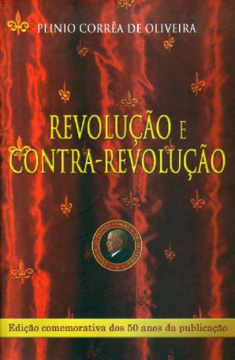
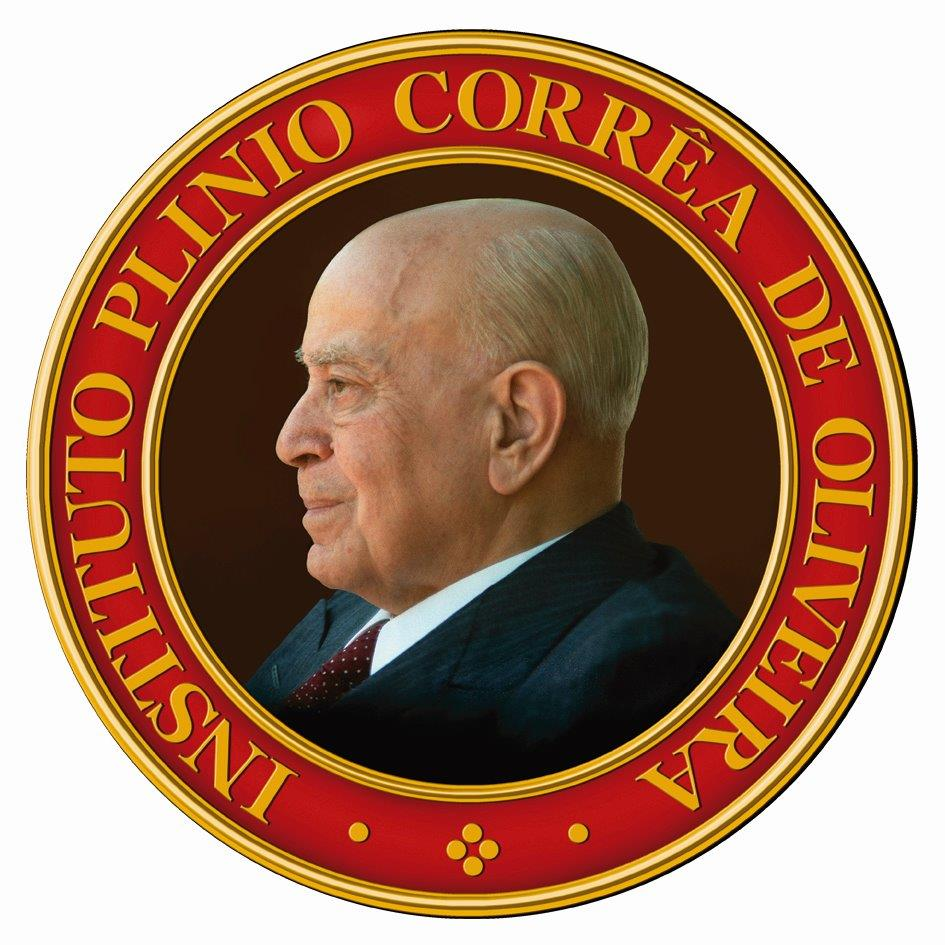
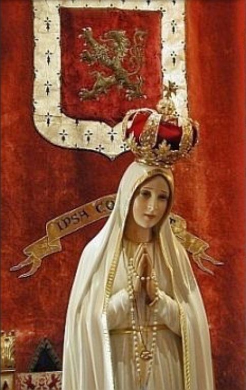

Autor: Plinio Corrêa de Oliveira
Ano Original: 1959
Ano Edição: 2009 - baseado na edição comemorativa dos 50 anos da publicação.
Publicado em Catolicismo, Abril de 1959 (I e II Partes), Janeiro de 1977 (III), Posfácio (1992)

Em abril de 1959, Catolicismo estampou em suas páginas o ensaio Revolução e Contra-Revolução que, como livro, nas décadas seguintes, foi publicado em dezesseis países da Europa e das Américas, em nove línguas. Por sua originalidade e grandeza de concepções, bem como pela síntese e clareza, esse estudo logo passou a ser decisivo para contra-revolucionários no mundo inteiro. E teve enorme difusão. Estamos em 2009, meio século depois. Chegou a hora de mais uma visão retrospectiva, tempo de justas comemorações, mas sobretudo de análise e de previsão.
Quando Revolução e Contra-Revolução (em linguagem informal, conhecido por RCR) foi publicado pela primeira vez, ninguém o associaria às transcendentes palavras do profeta Simeão a Nossa Senhora, sobre o Menino Jesus: "Eis que este Menino está posto para ruína e para ressurreição de muitos em Israel, e para ser alvo de contradição. E uma espada transpassará a tua alma, a fim de se descobrirem os pensamentos escondidos nos corações de muitos" (Lc 2, 33-35).
Habent sua fata libelli. RCR foi fazendo seu caminho, e com o tempo, por causa de seus efeitos, tornou-se natural sua associação com a profecia de Simeão.
Mais que um simples livro de teses, contém um programa de vida, delineia uma estratégia de combate, como apresenta um ideal que convida a rejeitar por inteiro a Revolução ateia e igualitária e a lutar pela restauração da ordem temporal cristã, em bases adaptadas a nossos dias. Em suas páginas transluz até mesmo a proposta de um tipo humano ideal, inspirado no Evangelho de Nosso Senhor Jesus Cristo.
O Menino Jesus desfez situações que nunca deveriam ter existido em Israel. Suas palavras e exemplos, alvos de contradição, foram ruína para a infidelidade e o descaminho entre os judeus. Atraíram o amor e o ódio. O que antes, para muitos, parecia virtude, apareceu depois dele como vício horrendo. Em especial, o caso dos fariseus. O que significa hoje farisaísmo? Uma forma de hipocrisia particularmente abjeta. Antes de Jesus Cristo, uma parcela ponderável dos judeus considerava virtuosa a conduta dos fariseus, supostamente zelo- sos seguidores da Lei.
Christianus alter Christus. Efeitos semelhantes produziu Revolução e Contra-Revolução. Ao mostrar o vulto total da Revolução, seus disfarces e táticas de encobrimento, suas velocidades variáveis, e em especial seus graus, RCR levantou obstáculos ao êxito de certos movimentos de falsa reação à desordem imperante. Mostrou o seu cerne coletivista e totalitário. Analisados em face da doutrina exposta em RCR, ficou evidente sua condição de reais promotores do programa revolucionário, às vezes por omissões inexplicáveis. Muitos homens retos e idealistas deles se afastaram. E assim, Revolução e Contra-Revolução, ao longo dos anos, foi ruína para grupos que, ou promoviam direta mas ocultamente a Revolução, ou representavam, para os verdadeiros contra-revolucionários, "a voz que adormece e a mão que apaga". Alguns desses movimentos até aparentavam ser forças católicas; de fato, eram cavalos de Troia. O que antes da RCR aparecia como normal, passou a ser considerado erro manifesto, em particular pela sanior pars entre os católicos.
Assim, RCR representou a ressurreição para muitos. Ademais, além desse trabalho de prevenção, sua luz apontou vias de atuação até então pouco frequentadas ou de todo ignoradas, tornou compreensíveis situações políticas ou ideológicas antes inextricáveis, harmonizou concepções diferentes e congregou os que tinham tudo para lutar em união de esforços. Com isso enrijeceu, ampliou e animou resistências que, sem ela, se teriam decomposto rumo à morte.
RCR promoveu também outras formas de ressurreição. Foi remédio ativo contra a limitação de horizontes mentais, situação prejudicial para quem deseja a eficácia na ação. O livro impressiona e atrai por suas análises universais e pela admirável facilidade de relacionar, em grandes visões de conjunto, os problemas psicológicos, morais, políticos, religiosos. Ensina a ver e interpretar a História, muito especialmente porque ensina a observar bem as almas. Essa forma global de analisar as atitudes a favor ou contra a Revolução, mesmo tendo a atenção muito posta nas realidades imediatas, leva também em conta realidades superiores, como a ação da graça, e em sentido contrário as consequências da clássica trilogia: o mun- do, o demônio, a carne.
RCR constitui a base de uma escola de pensamento de enorme potencial. Tal escola contém elementos que podem modificar o rumo da História. De algum modo, ainda relativamente limitada, mas muito real, já influiu em acontecimentos decisivos de nossos dias. Ela tem sido a base de atuação de numerosas TFPs, entidades congêneres e amigas que, em diversas ocasiões, influíram profundamente na vida pública das nações em que existem. Os movimentos em defesa da propriedade privada e da livre iniciativa, a favor da vida e contra o aborto, a defesa da moralidade familiar, a luta pelos direitos da Santa Igreja agredida pelo laicismo intolerante, e tantos outros movimentos de finalidades análogas, em parte devem sua eficácia à presença neles de pessoas influenciadas pelas teses expostas em Revolução e Contra-Revolução.
Com efeito, RCR veio ao encontro das melhores aspirações de incontáveis católicos (e até de não-católicos) que se sentiam violentamente agredidos pelo caos contemporâneo e estavam sem rumo, perplexos e angustiados. Quando viram suas opiniões expressas com nitidez e força no livro, exultaram. Recobraram ânimo, articularam-se, começaram a agir em favor delas. Verdadeiros renascimentos espirituais, de grande impacto para o futuro das sociedades, têm acontecido ininterruptamente nas últimas cinco décadas, em vários pontos do mundo.
Pelos seus resultados, já se vê, o livro é merecedor de muita gratidão. Livro, é modo de dizer. Quem de fato merece gratidão é quem o escreveu, Plinio Corrêa de Oliveira, ao qual, neste cinquentenário de seu opus magnum, dirigimos mais uma vez, e superlativamente, todos os encômios. No Céu, ele já recebeu a palma de sua glória. Aqui na Terra, muitos também o reconhecem. Dia virá em que sua glória será universal.
Quanto ao futuro, as brumas o envolvem. Mas uma coisa se pode afirmar com segurança: Revolução e Contra-Revolução não é obra de ocasião. Tem validade e atualidade perenes, continuará a influen- ciar as gerações que nos sucederão.
De modo particular, nos anos vindouros, as análises contidas em RCR terão grande importância para o combate às manifestações da IV Revolução. Esse movimento universal, contestador e libertário, estende cada vez mais, como um polvo, seus tentáculos a todas as esferas da atividade humana. Visa de forma particular o interior das almas, modificando hábitos, mentalidades, concepções. E vai além, promovendo ativamente a dissolução da família, da sociedade e até do Estado.
Os seguidores de Revolução e Contra-Revolução saberão se contrapor a essa nova metamorfose da hidra revolucionária.

INSTITUTO PLINIO CORRÊA DE OLIVEIRA
Catolicismo dá a lume, hoje [1] , seu centésimo número, e quer assinalar o fato marcando a presente edição com uma nota especial, que propicie um aprofundamento da comunicação de alma, já tão grande, que tem com seus leitores.
Para isso, nada lhe pareceu mais oportuno do que a publicação de um artigo sobre o tema Revolução e Contra-Revolução.
É fácil explicar a escolha do assunto. Catolicismo é um jornal combativo. Como tal, deve ser julgado principalmente em função do fim que seu combate tem em vista. Ora, a quem, precisamente, quer ele combater? A leitura de suas páginas produz a este respeito uma impressão talvez pouco definida. É freqüente encontrar, nelas, refutações do comunismo, do socialismo, do totalitarismo, do liberalismo, do liturgicismo, do maritainismo, e de outros tantos "ismos". Contudo, não se diria que temos tão mais em vista um deles, que por aí nos pudéssemos definir. Por exemplo, haveria exagero em afirmar que Catolicismo é uma folha especificamente antiprotestante ou anti-socialista. Dir-se-ia, então, que o jornal tem uma pluralidade de fins. Entretanto, percebe-se que, na perspectiva em que ele se coloca, todos estes pontos de mira têm como que um denominador comum, e que é este o objetivo sempre visado por nossa folha.
O que é esse denominador comum? Uma doutrina? Uma força? Uma corrente de opinião? Bem se vê que uma elucidação a respeito ajuda a compreender até suas profundezas toda a obra de formação doutrinária que Catolicismo veio realizando ao longo destes cem meses.
O estudo da Revolução e da Contra-Revolução excede de muito, em proveito, este objetivo limitado.
Para demonstrá-lo, basta lançar os olhos sobre o panorama religioso de nosso País. Estatisticamente, a situação dos católicos é excelente: segundo os últimos dados oficiais constituímos 94% da população. Se todos os católicos fôssemos o que devemos ser, o Brasil seria hoje uma das mais admiráveis potências católicas nascidas ao longo dos vinte séculos de vida da Igreja.
Por que, então, estamos tão longe deste ideal? Quem poderia afirmar que a causa principal de nossa presente situação é o espiritismo, o protestantismo, o ateísmo, ou o comunismo? Não. Ela é outra, impalpável, sutil, penetrante como se fosse uma poderosa e temível radioatividade. Todos lhe sentem os efeitos, mas poucos saberiam dizer-lhe o nome e a essência.
Ao fazer esta afirmação, nosso pensamento se estende das fronteiras do Brasil para as nações hispano-americanas, nossas tão caras irmãs, e daí para todas as nações católicas. Em todas, exerce seu império indefinido e avassalador o mesmo mal. E em todas produz sintomas de uma grandeza trágica. Um exemplo entre outros. Em carta dirigida em 1956, a propósito do Dia Nacional de Ação de Graças, a Sua Eminência o Cardeal D. Carlos Carmelo de Vasconcelos Motta, Arcebispo de S. Paulo, o Exmo. Revmo. Mons. Angelo Dell'Acqua, Substituto da Secretaria de Estado, dizia que "em consequência do agnosticismo religioso dos Estados", ficou "amortecido ou quase perdido na sociedade moderna o sentir da Igreja". Ora, que inimigo desferiu contra a Esposa de Cristo este golpe terrível? Qual a causa comum a este e a tantos outros males concomitantes e afins? Com que nome chamá-la? Quais os meios por que ela age? Qual o segredo de sua vitória? Como combatê-la com êxito?
Como se vê, dificilmente um tema poderia ser de mais flagrante atualidade.
Este inimigo terrível tem um nome: ele se chama Revolução. Sua causa profunda é uma explosão de orgulho e sensualidade que inspirou, não diríamos um sistema, mas toda uma cadeia de sistemas ideológicos. Da larga aceitação dada a estes no mundo inteiro, decorreram as três grandes revoluções da História do Ocidente: a Pseudo-Reforma, a Revolução Francesa e o Comunismo [2] .
O orgulho leva ao ódio a toda superioridade, e, pois, à afirmação de que a desigualdade é em si mesma, em todos os planos, inclusive e principalmente nos planos metafísico e religioso, um mal. É o aspecto igualitário da Revolução.
A sensualidade, de si, tende a derrubar todas as barreiras. Ela não aceita freios e leva à revolta contra toda autoridade e toda lei, seja divina ou humana, eclesiástica ou civil. É o aspecto liberal da Revolução.
Ambos os aspectos, que têm em última análise um caráter metafísico, parecem contraditórios em muitas ocasiões, mas se conciliam na utopia marxista de um paraíso anárquico em que uma humanidade altamente evoluída e "emancipada" de qualquer religião vivesse em ordem profunda sem autoridade política, e em uma liberdade total da qual entretanto não decorresse qualquer desigualdade.
A Pseudo-Reforma foi uma primeira Revolução. Ela implantou o espírito de dúvida, o liberalismo religioso e o igualitarismo eclesiástico, em medida variável aliás nas várias seitas a que deu origem.
Seguiu-se-lhe a Revolução Francesa, que foi o triunfo do igualitarismo em dois campos. No campo religioso, sob a forma do ateísmo, especiosamente rotulado de laicismo. E na esfera política, pela falsa máxima de que toda a desigualdade é uma injustiça, toda autoridade um perigo, e a liberdade o bem supremo.
O Comunismo é a transposição destas máximas para o campo social e econômico.
Estas três revoluções são episódios de uma só Revolução, dentro da qual o socialismo, o liturgicismo, a politique de la main tendue, etc., são etapas de transição ou manifestações atenuadas. Sobre os erros através dos quais se opera a penetração larvada do espírito da Revolução em ambientes católicos, o Exmo. Revmo. Sr. D. Antônio de Castro Mayer, Bispo de Campos, publicou uma Carta Pastoral da maior importância [3] .
Claro está que um processo de tanta profundidade, de tal envergadura e tão longa duração não pode desenvolver-se sem abranger todos os domínios da atividade do homem, como por exemplo a cultura, a arte, as leis, os costumes e as instituições.
Um estudo pormenorizado deste processo em todos os campos em que se vem desenrolando, excederia de muito o âmbito deste artigo.
Nele procuramos — limitando-nos a um veio apenas deste vasto assunto — traçar de modo sumário os contornos da imensa avalancha que é a Revolução, dar-lhe o nome adequado, indicar muito sucintamente suas causas profundas, os agentes que a promovem, os elementos essenciais de sua doutrina, a importância respectiva dos vários terrenos em que ela age, o vigor de seu dinamismo, o "mecanismo" de sua expansão. Simetricamente, tratamos depois de pontos análogos referentes à Contra-Revolução, e estudamos algumas das suas condições de vitória.
Ainda assim, não pudemos explanar, de cada um destes temas, senão as partes que nos pareceram mais úteis, no momento, para esclarecer nossos leitores e facilitar-lhes a luta contra a Revolução. E tivemos de deixar de lado muitos pontos de uma importância realmente capital, mas de atualidade menos premente.
O presente trabalho, como dissemos, constitui um simples conjunto de teses, através das quais melhor se pode conhecer o espírito e o programa de Catolicismo. Exorbitaria ele de suas proporções naturais, se contivesse uma demonstração cabal de cada afirmação. Cingimo-nos tão somente a desenvolver o mínimo de argumentação necessário para pôr em evidência o nexo existente entre as várias teses, e a visão panorâmica de toda uma vertente de nossas posições doutrinárias.
Tendo Catolicismo leitores em quase todo o Ocidente, pareceu conveniente publicar uma tradução deste trabalho, em separata. Preferimos o francês, já consagrado pela tradição diplomática, por ser o idioma de país católico mais universalmente conhecido.
Este artigo pode servir de inquérito. O que, no Brasil e fora dele, pensa exatamente sobre a Revolução e a Contra-Revolução o público que lê Catolicismo, que é certamente dos mais infensos à Revolução? Nossas proposições, embora abrangendo apenas uma parte do tema, podem dar ocasião a que cada um se interrogue, e nos envie sua resposta, que com todo o interesse acolheremos.
As muitas crises que abalam o mundo hodierno — do Estado, da família, da economia, da cultura, etc. — não constituem senão múltiplos aspectos de uma só crise fundamental, que tem como campo de ação o próprio homem. Em outros termos, essas crises têm sua raiz nos problemas de alma mais profundos, de onde se estendem para todos os aspectos da personalidade do homem contemporâneo e todas as suas atividades.
Essa crise é principalmente a do homem ocidental e cristão, isto é, do europeu e de seus descendentes, o americano e o australiano. E é enquanto tal que mais particularmente a estudaremos. Ela afeta também os outros povos, na medida em que a estes se estende e neles criou raiz o mundo ocidental. Nesses povos tal crise se complica com os problemas próprios às respectivas culturas e civilizações e ao choque entre estas e os elementos positivos ou negativos da cultura e da civilização ocidentais.
Por mais profundos que sejam os fatores de diversificação dessa crise nos vários países hodiernos, ela conserva, sempre, cinco caracteres capitais:
Essa crise é universal. Não há hoje povo que não esteja atingido por ela, em grau maior ou menor
Essa crise é una. Isto é, não se trata de um conjunto de crises que se desenvolvem paralela e autonomamente em cada país, ligadas entre si por algumas analogias mais ou menos relevantes.
Quando ocorre um incêndio numa floresta, não é possível considerar o fenômeno como se fosse mil incêndios autônomos e paralelos, de mil árvores vizinhas umas das outras. A unidade do fenômeno "combustão", exercendo-se sobre a unidade viva que é a floresta, e a circunstância de que a grande força de expansão das chamas resulta de um calor no qual se fundem e se multiplicam as incontáveis chamas das diversas árvores, tudo, enfim, contribui para que o incêndio da floresta seja um fato único, englobando numa realidade total os mil incêndios parciais, por mais diferentes, aliás, que cada um destes seja em seus acidentes.
A Cristandade ocidental constituiu um só todo, que transcendia os vários países cristãos, sem os absorver. Nessa unidade viva se operou uma crise que acabou por atingi-la toda inteira, pelo calor somado e, mais do que isto, fundido, das sempre mais numerosas crises locais que há séculos se vêm interpenetrando e entreajudando ininterruptamente. Em conseqüência, a Cristandade, enquanto família de Estados oficialmente católicos, de há muito cessou de existir. Dela restam como vestígios os povos ocidentais e cristãos. E todos se encontram presentemente em agonia, sob a ação deste mesmo mal.
Considerada em um dado país, essa crise se desenvolve numa zona de problemas tão profunda, que ela se prolonga ou se desdobra, pela própria ordem das coisas, em todas as potências da alma, em todos os campos da cultura, em todos os domínios, enfim, da ação do homem.
Encarados superficialmente, os acontecimentos dos nossos dias parecem um emaranhado caótico e inextricável, e de fato o são de muitos pontos de vista.
Entretanto, podem-se discernir resultantes, profundamente coerentes e vigorosas, da conjunção de tantas forças desvairadas, desde que estas sejam consideradas do ângulo da grande crise de que tratamos.
Com efeito, ao impulso dessas forças em delírio, as nações ocidentais vão sendo gradualmente impelidas para um estado de coisas que se vai delineando igual em todas elas, e diametralmente oposto à civilização cristã.
De onde se vê que essa crise é como uma rainha a que todas as forças do caos servem como instrumentos eficientes e dóceis.
Essa crise não é um fato espetacular e isolado. Ela constitui, pelo contrário, um processo crítico já cinco vezes secular, um longo sistema de causas e efeitos que, tendo nascido, em momento dado, com grande intensidade, nas zonas mais profundas da alma e da cultura do homem ocidental, vem produzindo, desde o século XV até nossos dias, sucessivas convulsões. A este processo bem se podem aplicar as palavras de Pio XII a respeito de um sutil e misterioso "inimigo" da Igreja: " Ele se encontra em todo lugar e no meio de todos: sabe ser violento e astuto. Nestes últimos séculos tentou realizar a desagregação intelectual, moral, social, da unidade no organismo misterioso de Cristo. Ele quis a natureza sem a graça, a razão sem a fé; a liberdade sem a autoridade; às vezes a autoridade sem a liberdade. É um "inimigo" que se tornou cada vez mais concreto, com uma ausência de escrúpulos que ainda surpreende: Cristo sim, a Igreja não! Depois: Deus sim, Cristo não! Finalmente o grito ímpio: Deus está morto; e, até, Deus jamais existiu. E eis, agora, a tentativa de edificar a estrutura do mundo sobre bases que não hesitamos em indicar como principais responsáveis pela ameaça que pesa sobre a humanidade: uma economia sem Deus, um Direito sem Deus, uma política sem Deus" [4] .
Este processo não deve ser visto como uma sequência toda fortuita de causas e efeitos, que se foram sucedendo de modo inesperado. Já em seu início possuía esta crise as energias necessárias para reduzir a atos todas as suas potencialidades, que em nossos dias conserva bastante vivas para causar por meio de supremas convulsões as destruições últimas que são seu termo lógico.
Influenciada e condicionada em sentidos diversos, por fatores extrínsecos de toda ordem — culturais, sociais, econômicos, étnicos, geográficos e outros — e seguindo por vezes caminhos bem sinuosos, vai ela no entanto progredindo incessantemente para seu trágico fim.
Já esboçamos na Introdução os grandes traços deste processo. É oportuno acrescentar aqui alguns pormenores.
No século XIV começa a observar-se, na Europa cristã, uma transformação de mentalidade que ao longo do século XV cresce cada vez mais em nitidez. O apetite dos prazeres terrenos se vai transformando em ânsia. As diversões se vão tornando mais freqüentes e mais suntuosas. Os homens se preocupam sempre mais com elas. Nos trajes, nas maneiras, na linguagem, na literatura e na arte o anelo crescente por uma vida cheia de deleites da fantasia e dos sentidos vai produzindo progressivas manifestações de sensualidade e moleza. Há um paulatino deperecimento da seriedade e da austeridade dos antigos tempos. Tudo tende ao risonho, ao gracioso, ao festivo. Os corações se desprendem gradualmente do amor ao sacrifício, da verdadeira devoção à Cruz, e das aspirações de santidade e vida eterna. A Cavalaria, outrora uma das mais altas expressões da austeridade cristã se torna amorosa e sentimental, a literatura de amor invade todos os países, os excessos do luxo e a consequente avidez de lucros se estendem por todas as classes sociais.
Tal clima moral, penetrando nas esferas intelectuais, produziu claras manifestações de orgulho, como o gosto pelas disputas aparatosas e vazias, pelas argúcias inconsistentes, pelas exibições fátuas de erudição, e lisonjeou velhas tendências filosóficas, das quais triunfara a Escolástica, e que já agora, relaxado o antigo zelo pela integridade da Fé, renasciam em aspectos novos. O absolutismo dos legistas, que se engalanavam com um conhecimento vaidoso do Direito Romano, encontrou em Príncipes ambiciosos um eco favorável. E pari passu foi-se extinguindo nos grandes e nos pequenos a fibra de outrora para conter o poder real nos legítimos limites vigentes nos dias de São Luís de França e São Fernando de Castela.
Este novo estado de alma continha um desejo possante, se bem que mais ou menos inconfessado, de uma ordem de coisas fundamentalmente diversa da que chegara a seu apogeu nos séculos XII e XIII.
A admiração exagerada, e não raro delirante, pelo mundo antigo, serviu como meio de expressão a esse desejo. Procurando muitas vezes não colidir de frente com a velha tradição medieval, o Humanismo e a Renascença tenderam a relegar a Igreja, o sobrenatural, os valores morais da Religião, a um segundo plano. O tipo humano, inspirado nos moralistas pagãos, que aqueles movimentos introduziram como ideal na Europa, bem como a cultura e a civilização coerentes com este tipo humano, já eram os legítimos precursores do homem ganancioso, sensual, laico e pragmático de nossos dias, da cultura e da civilização materialistas em que cada vez mais vamos imergindo. Os esforços por uma Renascença cristã não lograram esmagar em seu germe os fatores de que resultou o triunfo paulatino do neopaganismo.
Em algumas partes da Europa, este se desenvolveu sem levar à apostasia formal. Importantes resistências se lhe opuseram. E mesmo quando ele se instalava nas almas, não lhes ousava pedir — de início pelo menos — uma formal ruptura com a Fé.
Mas em outros países ele investiu às escâncaras contra a Igreja. O orgulho e a sensualidade, em cuja satisfação está o prazer da vida pagã, suscitaram o protestantismo.
O orgulho deu origem ao espírito de dúvida, ao livre exame, à interpretação naturalista da Escritura. Produziu ele a insurreição contra a autoridade eclesiástica, expressa em todas as seitas pela negação do caráter monárquico da Igreja Universal, isto é, pela revolta contra o Papado. Algumas, mais radicais, negaram também o que se poderia chamar a alta aristocracia da Igreja, ou seja, os Bispos, seus Príncipes. Outras ainda negaram o próprio sacerdócio hierárquico, reduzindo-o a mera delegação do povo, único detentor verdadeiro do poder sacerdotal.
No plano moral, o triunfo da sensualidade no protestantismo se afirmou pela supressão do celibato eclesiástico e pela introdução do divórcio.
A ação profunda do Humanismo e da Renascença entre os católicos não cessou de se dilatar numa crescente cadeia de conseqüências, em toda a França. Favorecida pelo enfraquecimento da piedade dos fiéis — ocasionado pelo jansenismo e pelos outros fermentos que o protestantismo do século XVI desgraçadamente deixara no Reino Cristianíssimo — tal ação teve por efeito no século XVIII uma dissolução quase geral dos costumes, um modo frívolo e brilhante de considerar as coisas, um endeusamento da vida terrena, que preparou o campo para a vitória gradual da irreligião. Dúvidas em relação à Igreja, negação da divindade de Cristo, deísmo, ateísmo incipiente foram as etapas dessa apostasia.
Profundamente afim com o protestantismo, herdeira dele e do neopaganismo renascentista, a Revolução Francesa realizou uma obra de todo em todo simétrica à da Pseudo-Reforma. A Igreja Constitucional que ela, antes de naufragar no deísmo e no ateísmo, tentou fundar, era uma adaptação da Igreja da França ao espírito do protestantismo. E a obra política da Revolução Francesa não foi senão a transposição, para o âmbito do Estado, da "reforma" que as seitas protestantes mais radicais adotaram em matéria de organização eclesiástica:
— Revolta contra o Rei, simétrica à revolta contra o Papa;
— Revolta da plebe contra os nobres, simétrica à revolta da "plebe" eclesiástica, isto é, dos fiéis, contra a "aristocracia" da Igreja, isto é, o Clero;
— Afirmação da soberania popular, simétrica ao governo de certas seitas, em medida maior ou menor, pelos fiéis.
No protestantismo nasceram algumas seitas que, transpondo diretamente suas tendências religiosas para o campo político, prepararam o advento do espírito republicano. São Francisco de Sales, no século XVII, premuniu contra estas tendências republicanas o Duque de Sabóia [5] . Outras, indo mais longe, adotaram princípios que, se não se chamarem comunistas em todo o sentido hodierno do termo, são pelo menos pré-comunistas.
Da Revolução Francesa nasceu o movimento comunista de Babeuf. E mais tarde, do espírito cada vez mais vivaz da Revolução, irromperam as escolas do comunismo utópico do século XIX e o comunismo dito científico de Marx.
E o que de mais lógico? O deísmo tem como fruto normal o ateísmo. A sensualidade, revoltada contra os frágeis obstáculos do divórcio, tende por si mesma ao amor livre. O orgulho, inimigo de toda superioridade, haveria de investir contra a última desigualdade, isto é, a de fortunas. E assim, ébrio de sonhos de República Universal, de supressão de toda autoridade eclesiástica ou civil, de abolição de qualquer Igreja e, depois de uma ditadura operária de transição, também do próprio Estado, aí está o neobárbaro do século XX, produto mais recente e mais extremado do processo revolucionário.
A fim de evitar qualquer equívoco, convém acentuar que esta exposição não contém a afirmação de que a república é um regime político necessariamente revolucionário. Leão XIII deixou claro, ao falar das diversas formas de governo, que "cada uma delas é boa, desde que saiba caminhar retamente para seu fim, a saber, o bem comum, para o qual a autoridade social é constituída" [6] .
Taxamos de revolucionária, isto sim, a hostilidade professada, por princípio, contra a monarquia e a aristocracia, como sendo formas essencialmente incompatíveis com a dignidade humana e a ordem normal das coisas. É o erro condenado por São Pio X na Carta Apostólica "Notre Charge Apostolique", de 25 de agosto de 1910. Nela censura o grande e santo Pontífice a tese do "Sillon", de que "só a democracia inaugurará o reino da perfeita justiça", e exclama: "Não é isto uma injúria às outras formas de governo, que são rebaixadas, por esse modo, à categoria de governos impotentes, aceitáveis à falta de melhor?" [7] .
Ora, sem este erro, inviscerado no processo de que falamos, não se explica inteiramente que a monarquia, qualificada pelo Papa Pio VI como sendo em tese a melhor forma de governo — praestantioris monarchici regiminis forma [8] —, tenha sido objeto, nos séculos XIX e XX, de um movimento mundial de hostilidade que deu por terra com os tronos e as dinastias mais veneráveis. A produção em série de repúblicas para o mundo inteiro é, a nosso ver, um fruto típico da Revolução, e um aspecto capital dela.
Não pode ser taxado de revolucionário quem para sua Pátria, por razões concretas e locais, ressalvados sempre os direitos da autoridade legítima, prefere a democracia à aristocracia ou à monarquia. Mas sim quem, levado pelo espírito igualitário da Revolução, odeia em princípio, e qualifica de injusta ou inumana por essência, a aristocracia ou a monarquia.
Desse ódio antimonárquico e antiaristocrático, nascem as democracias demagógicas, que combatem a tradição, perseguem as elites, degradam o tonus geral da vida, e criam um ambiente de vulgaridade que constitui como que a nota dominante da cultura e da civilização, ... se é que os conceitos de civilização e de cultura se podem realizar em tais condições.
Como diverge desta democracia revolucionária a democracia descrita por Pio XII: "Segundo o testemunho da História, onde reina uma verdadeira democracia, a vida do povo está como que impregnada de sãs tradições, que é ilícito abater. Representantes dessas tradições são, antes de tudo, as classes dirigentes, ou seja, os grupos de homens e mulheres ou as associações, que dão, como se costuma dizer, o tom na aldeia e na cidade, na região e no país inteiro. Daqui, em todos os povos civilizados, a existência e o influxo de instituições eminentemente aristocráticas, no sentido mais elevado da palavra, como são algumas academias de larga e bem merecida fama. Pertence a este número também a nobreza" [9] .
Como se vê, o espírito da democracia revolucionária é bem diverso daquele que deve animar uma democracia conforme a doutrina da Igreja.
As presentes considerações sobre a posição da Revolução e do pensamento católico em face das formas de governo suscitarão em vários leitores uma interrogação: a ditadura é um fator de Revolução, ou de Contra-Revolução?
Para responder com clareza a uma pergunta a que têm sido dadas tantas soluções confusas e até tendenciosas, é necessário estabelecer uma distinção entre certos elementos que se emaranham desordenadamente na idéia de ditadura, como a opinião pública a conceitua. Confundindo a ditadura em tese com o que ela tem sido in concreto em nosso século, o público entende por ditadura um estado de coisas em que um chefe dotado de poderes irrestritos governa um país. Para o bem deste, dizem uns. Para o mal, dizem outros. Mas em um e outro caso, tal estado de coisas é sempre uma ditadura.
Ora, este conceito envolve dois elementos distintos:
— onipotência do Estado;
— concentração do poder estatal em uma só pessoa.
No espírito público, parece que o segundo elemento chama mais a atenção. Entretanto, o elemento básico é o primeiro, pelo menos se entendermos por ditadura um estado de coisas em que o Poder público, suspensa qualquer ordem jurídica, dispõe a seu talante de todos os direitos. Que uma ditadura possa ser exercida por um Rei (a ditadura real, isto é, a suspensão de toda a ordem jurídica e o exercício irrestrito do poder público pelo Rei, não se confunde com o Ancien Régime, em que estas garantias existiam em considerável medida, e muito menos com a monarquia orgânica medieval) ou um chefe popular, uma aristocracia hereditária ou um clã de banqueiros, ou até pela massa, é inteiramente evidente.
Em si, uma ditadura exercida por um chefe ou um grupo de pessoas não é revolucionária nem contra-revolucionária. Ela será uma ou outra coisa em função das circunstâncias de que se originou, e da obra que realizar. E isto, quer esteja em mãos de um homem, quer de um grupo.
Há circunstâncias que exigem, para a salus populi, uma suspensão provisória de todos os direitos individuais, e o exercício mais amplo do poder público. A ditadura pode, portanto, ser legítima em certos casos.
Uma ditadura contra-revolucionária e, pois, inteiramente norteada pelo desejo de Ordem, deve apresentar três requisitos essenciais:
Pelo contrário, a ditadura revolucionária visa eternizar-se, viola os direitos autênticos, e penetra em todas as esferas da sociedade para as aniquilar, desarticulando a vida de família, prejudicando as elites genuínas, subvertendo a hierarquia social, alimentando de utopias e de aspirações desordenadas a multidão, extinguindo a vida real dos grupos sociais e sujeitando tudo ao Estado: em uma palavra, favorecendo a obra da Revolução. Exemplo típico de tal ditadura foi o hitlerismo.
Por isto, a ditadura revolucionária é fundamentalmente anticatólica. Com efeito, em um ambiente verdadeiramente católico, não pode haver clima para uma tal situação.
O que não quer dizer que a ditadura revolucionária, neste ou naquele país, não tenha procurado favorecer a Igreja. Mas trata-se de atitude meramente política, que se transforma em perseguição franca ou velada, logo que a autoridade eclesiástica comece a deter o passo à Revolução.
Como se depreende da análise feita no capítulo anterior, o processo revolucionário é o desenvolvimento, por etapas, de certas tendências desregradas do homem ocidental e cristão, e dos erros delas nascidos.
Em cada etapa, essas tendências e erros têm um aspecto próprio. A Revolução vai, pois, se metamorfoseando ao longo da História. Essas metamorfoses que se observam nas grandes linhas gerais da Revolução, se repetem, em ponto menor, no interior de cada grande episódio dela.
Assim, o espírito da Revolução Francesa, em sua primeira fase, usou máscara e linguagem aristocrática e até eclesiástica. Freqüentou a corte e sentou-se à mesa do Conselho do Rei.
Depois, tornou-se burguês e trabalhou pela extinção incruenta da monarquia e da nobreza, e por uma velada e pacífica supressão da Igreja Católica.
Logo que pôde, fez-se jacobino, e se embriagou de sangue no Terror
.Mas os excessos praticados pela facção jacobina despertaram reações. Ele voltou atrás, percorrendo as mesmas etapas. De jacobino transformou-se em burguês no Diretório, com Napoleão estendeu a mão à Igreja e abriu as portas à nobreza exilada, e, por fim, aplaudiu a volta dos Bourbons. Terminada a Revolução Francesa, não termina com isto o processo revolucionário. Ei-lo que torna a explodir com a queda de Carlos X e a ascensão de Luís Felipe, e assim por sucessivas metamorfoses, aproveitando seus sucessos e mesmo seus insucessos, chegou ele até o paroxismo de nossos dias.
A Revolução usa, pois, suas metamorfoses não só para avançar, como também para operar os recuos táticos que tão freqüentemente lhe têm sido necessários.
Por vezes, movimento sempre vivo, ela tem simulado estar morta. E é esta uma de suas metamorfoses mais interessantes. Na aparência, a situação de um determinado país se apresenta como inteiramente tranqüila. A reação contra-revolucionária se distende e adormece. Mas, nas profundidades da vida religiosa, cultural, social, ou econômica, a fermentação revolucionária vai sempre ganhando terreno. E, ao cabo desse aparente interstício, explode uma convulsão inesperada, freqüentemente maior que as anteriores.
Como vimos, essa Revolução é um processo feito de etapas, e tem sua origem última em determinadas tendências desordenadas que lhe servem de alma e de força propulsora mais íntima [10] .
Assim, podemos também distinguir na Revolução três profundidades, que cronologicamente até certo ponto se interpenetram.
A primeira, isto é, a mais profunda, consiste em uma crise nas tendências. Essas tendências desordenadas, que por sua própria natureza lutam por realizar-se, já não se conformando com toda uma ordem de coisas que lhes é contrária, começam por modificar as mentalidades, os modos de ser, as expressões artísticas e os costumes, sem desde logo tocar de modo direto — habitualmente, pelo menos — nas ideias.
Dessas camadas profundas, a crise passa para o terreno ideológico. Com efeito — como Paul Bourget pôs em evidência em sua célebre obra Le Démon de Midi — "cumpre viver como se pensa, sob pena de, mais cedo ou mais tarde, acabar por pensar como se viveu" [11] . Assim, inspiradas pelo desregramento das tendências profundas, doutrinas novas eclodem. Elas procuram por vezes, de início, um modus vivendi com as antigas, e se exprimem de maneira a manter com estas um simulacro de harmonia que habitualmente não tarda em se romper em luta declarada.
Essa transformação das ideias estende-se, por sua vez, ao terreno dos fatos, onde passa a operar, por meios cruentos ou incruentos, a transformação das instituições, das leis e dos costumes, tanto na esfera religiosa quanto na sociedade temporal. É uma terceira crise, já toda ela na ordem dos fatos.
Essas profundidades são, de algum modo, escalonadas. Mas uma análise atenta evidencia que as operações que a Revolução nelas realiza de tal modo se interpenetram no tempo, que essas diversas profundidades não podem ser vistas como outras tantas unidades cronológicas distintas.
Essas três profundidades nem sempre se diferenciam nitidamente umas das outras. O grau de nitidez varia muito de um caso concreto a outro.
O caminhar de um povo através dessas várias profundidades não é incoercível, de tal maneira que, dado o primeiro passo, ele chegue necessariamente até o último, e resvale para a profundidade seguinte. Pelo contrário, o livre arbítrio humano, coadjuvado pela graça, pode vencer qualquer crise, como pode deter e vencer a própria Revolução.
Descrevendo esses aspectos, fazemos como um médico que descreve a evolução completa de uma doença até a morte, sem pretender com isto que a doença seja incurável.
As considerações anteriores já nos forneceram alguns dados sobre a marcha da Revolução, isto é, seu caráter processivo, as metamorfoses por que ela passa, sua irrupção no mais recôndito do homem, e sua exteriorização em atos. Como se vê, há toda uma dinâmica própria à Revolução. Disto podemos ter melhor idéia estudando ainda outros aspectos da marcha da Revolução.
A mais possante força propulsora da Revolução está nas tendências desordenadas.
E por isto a Revolução tem sido comparada a um tufão, a um terremoto, a um ciclone. É que as forças naturais desencadeadas são imagens materiais das paixões desenfreadas do homem.
Como os cataclismos, as más paixões têm uma força imensa, mas para destruir.
Essa força já tem potencialmente, no primeiro instante de suas grandes explosões, toda a virulência que se patenteará mais tarde nos seus piores excessos. Nas primeiras negações do protestantismo, por exemplo, já estavam implícitos os anelos anarquistas do comunismo. Se, do ponto de vista da formulação explícita, Lutero não era senão Lutero, todas as tendências, todo o estado de alma, todos os imponderáveis da explosão luterana já traziam consigo, de modo autêntico e pleno, embora implícito, o espírito de Voltaire e de Robespierre, de Marx e de Lênin [12] .
Essas tendências desordenadas se desenvolvem como os pruridos e os vícios, isto é, à medida mesmo que se satisfazem, crescem em intensidade. As tendências produzem crises morais, doutrinas errôneas, e depois revoluções. Umas e outras, por sua vez, exacerbam as tendências. Estas últimas levam em seguida, e por um movimento análogo, a novas crises, novos erros, novas revoluções. É o que explica que nos encontremos hoje em tal paroxismo da impiedade e da imoralidade, bem como em tal abismo de desordens e discórdias.
Considerando a existência de períodos de uma calmaria acentuada, dir-se-ia que neles a Revolução cessou. E assim parece que o processo revolucionário é descontínuo, e portanto não é uno.
Ora, essas calmarias são meras metamorfoses da Revolução. Os períodos de tranqüilidade aparente, supostos interstícios, têm sido em geral de fermentação revolucionária surda e profunda. Haja vista o período da Restauração (1815-1830) [13] .
Pelo que vimos [14] se explica que cada etapa da Revolução, comparada com a anterior, não seja senão um requinte. O humanismo naturalista e o protestantismo se requintaram na Revolução Francesa, a qual, por sua vez, se requintou no grande processo revolucionário de bolchevização do mundo hodierno.
É que as paixões desordenadas, indo num crescendo análogo ao que produz a aceleração na lei da gravidade, e alimentando-se de suas próprias obras, acarretam conseqüências que, por sua vez, se desenvolvem segundo intensidade proporcional. E, na mesma progressão, os erros geram erros, e as revoluções abrem caminho umas para as outras.
Esse processo revolucionário se dá em duas velocidades diversas. Uma, rápida, é destinada geralmente ao fracasso no plano imediato. A outra tem sido habitualmente coroada de êxito, e é muito mais lenta.
Os movimentos pré-comunistas dos anabatistas, por exemplo, tiraram imediatamente, em vários campos, todas ou quase todas as conseqüências do espírito e das tendências da PseudoReforma: fracassaram.
Lentamente, ao longo de mais de quatro séculos, as correntes mais moderadas do protestantismo, caminhando de requinte em requinte, por etapas de dinamismo e de inércia sucessivas, vão entretanto favorecendo paulatinamente, de um ou de outro modo, a marcha do Ocidente para o mesmo ponto extremo [15] .
Cumpre estudar o papel de cada uma dessas velocidades na marcha da Revolução. Dir-se-ia que os movimentos mais velozes são inúteis. Porém, não é verdade. A explosão desses extremismos levanta um estandarte, cria um ponto de mira fixo que fascina pelo seu próprio radicalismo os moderados, e para o qual estes se vão lentamente encaminhando. Assim, o socialismo repudia o comunismo mas o admira em silêncio e tende para ele. Mais remotamente o mesmo se poderia dizer do comunista Babeuf e seus sequazes nos últimos lampejos da Revolução Francesa. Foram esmagados. Mas lentamente a sociedade vai seguindo o caminho para onde eles a quiseram levar. O fracasso dos extremistas é, pois, apenas aparente. Eles colaboram indireta, mas possantemente, para a Revolução, atraindo paulatinamente para a realização de seus culposos e exacerbados devaneios a multidão incontável dos "prudentes", dos "moderados", e dos medíocres.
Vistas estas noções, apresenta-se a ocasião para desfazer algumas objeções que, antes disto, não poderiam ser adequadamente analisadas.
O que distingue o revolucionário que seguiu o ritmo da marcha rápida, de quem se vai paulatinamente tornando tal segundo o ritmo da marcha lenta, está em que, quando o processo revolucionário teve início no primeiro, encontrou resistências nulas, ou quase nulas. A virtude e a verdade viviam nessa alma de uma vida de superfície. Eram como madeira seca, que qualquer fagulha pode incendiar. Pelo contrário, quando esse processo se opera lentamente, é porque a fagulha da Revolução encontrou, ao menos em parte, lenha verde. Em outros termos, encontrou muita verdade ou muita virtude que se mantêm infensas à ação do espírito revolucionário. Uma alma em tal situação fica bipartida, e vive de dois princípios opostos, o da Revolução e o da Ordem.
Da coexistência desses dois princípios, podem surgir situações bem diversas:
É característica do conformismo do revolucionário de marcha lenta, e do "semicontrarevolucionário", a facilidade com que ambos aceitam as conquistas da Revolução. Afirmando a tese da união da Igreja e do Estado, por exemplo, vivem displicentemente no regime da hipótese, isto é, da separação, sem tentar qualquer esforço sério para que se torne possível restaurar algum dia em condições convenientes a união.
Uma objeção que se poderia fazer a nossas teses consistiria em dizer que, se o movimento republicano universal é fruto do espírito protestante, não se compreende como no mundo só haja atualmente um Rei católico, e tantos países protestantes se conservem monárquicos. A explicação é simples. A Inglaterra, a Holanda e as nações nórdicas, por toda uma série de razões históricas, psicológicas, etc., são muito afins com a monarquia. Penetrando nelas, a Revolução não conseguiu evitar que o sentimento monárquico "coagulasse". Assim, a realeza vem sobrevivendo obstinadamente nesses países, apesar de neles a Revolução ir penetrando cada vez mais a fundo em outros campos. "Sobrevivendo"..., sim, na medida em que morrer aos poucos pode ser chamado sobreviver. Pois a monarquia inglesa reduzida em larguíssima medida a um papel de aparato, e as demais realezas protestantes transformadas para quase todos os efeitos em repúblicas cujo chefe é vitalício e hereditário, vão agonizando suavemente, e, a continuarem assim as coisas, se extinguirão sem ruído. Sem negar que outras causas contribuem para esta sobrevida, queremos, entretanto, pôr em evidência o fator — muito importante, aliás — que se situa no âmbito de nossa exposição.
Pelo contrário, nas nações latinas, o amor a uma disciplina externa e visível, a um poder público forte e prestigioso, é — por muitas razões — bem menor.
A Revolução não encontrou nelas, pois, um sentimento monárquico tão arraigado. Levou os tronos facilmente. Mas até agora não foi suficientemente forte para arrastar a Religião.
Outra objeção a nosso trabalho poderia vir do fato de que certas seitas protestantes são de uma austeridade que toca as raias do exagero. Como, pois, explicar todo o protestantismo por uma explosão do desejo de gozar a vida?
Ainda aqui, a objeção não é difícil de resolver. Penetrando em certos ambiente, a Revolução encontrou muito vivaz o amor à austeridade. Assim, formou-se um "coágulo". E, se bem que ela aí tenha conseguido em matéria de orgulho todos os triunfos, não alcançou êxitos iguais em matéria de sensualidade. Em tais ambientes, goza-se a vida por meio dos discretos deleites do orgulho, e não pelas grosseiras delícias da carne. Pode até ser que a austeridade, acalentada pelo orgulho exacerbado, tenha reagido exageradamente contra a sensualidade. Mas essa reação, por mais obstinada que seja, é estéril: cedo ou tarde, por inanição ou pela violência, será destroçada pela Revolução. Pois não é de um puritanismo hirto, frio, mumificado, que pode partir o sopro de vida que regenerará a Terra.
Tais "coagulações" e cristalizações conduzem normalmente ao entrechoque das forças da Revolução. Considerando-o, dir-se-ia que as potências do mal estão divididas contra si mesmas, e que é falsa nossa concepção unitária do processo revolucionário.
Ilusão. Por um instinto profundo, que mostra que são harmônicas em seus elementos essenciais, e contraditórias apenas em seus acidentes, têm essas forças uma espantosa capacidade de se unirem contra a Igreja Católica, sempre que se encontrem em face d'Ela. Estéreis nos elementos bons que lhes restem, as forças revolucionárias só são realmente eficientes para o mal. E assim, cada qual ataca de seu lado a Igreja, que fica como uma cidade sitiada por um imenso exército.
Entre essas forças da Revolução, cumpre não omitir os católicos que professam a doutrina da Igreja mas estão dominados pelo espírito revolucionário. Mil vezes mais perigosos que os inimigos declarados, combatem a Cidade Santa dentro de seus próprios muros, e bem merecem o que deles disse Pio IX: "Embora os filhos do século sejam mais hábeis que os filhos da luz, seus ardis e suas violências teriam, sem dúvida, menor êxito se um grande número, entre aqueles que se intitulam católicos, não lhes estendesse mão amiga. Sim, infelizmente, há os que parecem querer caminhar de acordo com nossos inimigos, e se esforçam por estabelecer uma aliança entre a luz e as trevas, um acordo entre a justiça e a iniqüidade por meio dessas doutrinas que se chamam católicoliberais, as quais, apoiando-se sobre os mais perniciosos princípios, adulam o poder civil quando ele invade as coisas espirituais, e impulsionam as almas ao respeito, ou ao menos à tolerância das leis mais iníquas. Como se absolutamente não estivesse escrito que ninguém pode servir a dois senhores. São eles muito mais perigosos certamente e mais funestos do que os inimigos declarados, não só porque lhes secundam os esforços, talvez sem o perceberem, como também porque, mantendo-se no extremo limite das opiniões condenadas, tomam uma aparência de integridade e de doutrina irrepreensível, aliciando os imprudentes amigos de conciliações e enganando as pessoas honestas, que se revoltariam contra um erro declarado. Por isso, eles dividem os espíritos, rasgam a unidade e enfraquecem as forças que seria necessário reunir contra o inimigo" [17] (era 18).
Uma vez que estamos estudando as forças propulsoras da Revolução, convém que digamos uma palavra sobre os agentes desta.
Não acreditamos que o mero dinamismo das paixões e dos erros dos homens possa conjugar meios tão diversos, para a consecução de um único fim, isto é, a vitória da Revolução.
Produzir um processo tão coerente, tão contínuo, como o da Revolução, através das mil vicissitudes de séculos inteiros, cheios de imprevistos de toda ordem, nos parece impossível sem a ação de gerações sucessivas de conspiradores de uma inteligência e um poder extraordinários. Pensar que sem isto a Revolução teria chegado ao estado em que se encontra, é o mesmo que admitir que centenas de letras atiradas por uma janela poderiam dispor-se espontaneamente no chão, de maneira a formar uma obra qualquer, por exemplo, a "Ode a Satã", de Carducci.
As forças propulsoras da Revolução têm sido manipuladas até aqui por agentes sagacíssimos, que delas se têm servido como meios para realizar o processo revolucionário.
De modo geral, podem qualificar-se agentes da Revolução todas as seitas, de qualquer natureza, engendradas por ela, desde seu nascedouro até nossos dias, para a difusão do pensamento ou a articulação das tramas revolucionárias. Porém, a seita-mestra, em torno da qual todas se articulam como simples forças auxiliares — por vezes conscientemente, e outras vezes não — é a Maçonaria, segundo claramente decorre dos documentos pontifícios, e especialmente da Encíclica Humanum Genus de Leão XIII, de 20 de abril de 1884 [18] .
O êxito que até aqui têm alcançado esses conspiradores, e particularmente a Maçonaria, devesse não só ao fato de possuírem incontestável capacidade de se articularem e conspirarem, mas também ao seu lúcido conhecimento do que seja a essência profunda da Revolução, e de como utilizar as leis naturais — falamos das da política, da sociologia, da psicologia, da arte, da economia, etc.— para fazer progredir a realização de seus planos.
Nesse sentido os agentes do caos e da subversão fazem como o cientista, que em vez de agir por si só, estuda e põe em ação as forças, mil vezes mais poderosas, da natureza.
É o que, além de explicar em grande parte o êxito da Revolução, constitui importante indicação para os soldados da Contra-Revolução.
Descrita assim rapidamente a crise do Ocidente cristão, é oportuno analisá-la.
Esse processo crítico de que nos vimos ocupando é, já o dissemos, uma Revolução.
Damos a este vocábulo o sentido de um movimento que visa destruir um poder ou uma ordem legítima e pôr em seu lugar um estado de coisas (intencionalmente não queremos dizer ordem de coisas) ou um poder ilegítimo.
Nesse sentido, a rigor, uma Revolução pode ser incruenta. Esta de que nos ocupamos se desenvolveu e continua a se desenvolver por toda sorte de meios, alguns dos quais cruentos, e outros não. As duas guerras mundiais deste século, por exemplo, consideradas em suas conseqüências mais profundas, são capítulos dela, e dos mais sanguinolentos. Ao passo que a legislação cada vez mais socialista de todos ou quase todos os povos hodiernos constitui um progresso importantíssimo e incruento da Revolução.
A Revolução tem derrubado muitas vezes autoridades legítimas, substituindo-as por outras sem qualquer título de legitimidade. Mas haveria engano em pensar que ela consiste apenas nisto. Seu objetivo principal não é a destruição destes ou daqueles direitos de pessoas ou famílias. Mais do que isto, ela quer destruir toda uma ordem de coisas legítima, e substituí-la por uma situação ilegítima. E "ordem de coisas" ainda não diz tudo. É uma visão do universo e um modo de ser do homem, que a Revolução pretende abolir, com o intuito de substituí-los por outros radicalmente contrários.
Neste sentido se compreende que esta Revolução não é apenas uma revolução, mas é a Revolução.
Com efeito, a ordem de coisas que vem sendo destruída é a Cristandade medieval. Ora, essa Cristandade não foi uma ordem qualquer, possível como seriam possíveis muitas outras ordens. Foi a realização, nas circunstâncias inerentes aos tempos e aos lugares, da única ordem verdadeira entre os homens, ou seja, a civilização cristã.
Na Encíclica Immortale Dei, Leão XIII descreveu nestes termos a Cristandade medieval: "Tempo houve em que a filosofia do Evangelho governava os Estados. Nessa época, a influência da sabedoria cristã e a sua virtude divina penetravam as leis, as instituições, os costumes dos povos, todas as categorias e todas as relações da sociedade civil. Então a Religião instituída por Jesus Cristo, solidamente estabelecida no grau de dignidade que lhe é devido, em toda parte era florescente, graças ao favor dos Príncipes e à proteção legítima dos Magistrados. Então o Sacerdócio e o Império estavam ligados entre si por uma feliz concórdia e pela permuta amistosa de bons ofícios. Organizada assim, a sociedade civil deu frutos superiores a toda a expectativa, cuja memória subsiste e subsistirá, consignada como está em inúmeros documentos que artifício algum dos adversários poderá corromper ou obscurecer" [19] .
Assim, o que tem sido destruído, do século XV para cá, aquilo cuja destruição já está quase inteiramente consumada em nossos dias, é a disposição dos homens e das coisas segundo a doutrina da Igreja, Mestra da Revelação e da Lei Natural. Esta disposição é a ordem por excelência. O que se quer implantar é, per diametrum, o contrário disto. Portanto, a Revolução por excelência.
Sem dúvida, a presente Revolução teve precursores, e também prefiguras. Ario, Maomé, foram prefiguras de Lutero, por exemplo. Houve também utopistas em diferentes épocas, que conceberam, em sonhos, dias muito parecidos com os da Revolução. Houve por fim, em diversas ocasiões, povos ou grupos humanos que tentaram realizar um estado de coisas análogo às quimeras da Revolução.
Mas todos estes sonhos, todas essas prefiguras pouco ou nada são em confronto da Revolução em cujo processo vivemos. Esta, por seu radicalismo, por sua universalidade, por sua pujança, foi tão fundo e está chegando tão longe, que constitui algo de ímpar na História, e faz perguntar a muitos espíritos ponderados se realmente não chegamos aos tempos do Anticristo. De fato, parece que não estamos distantes, a julgar pelas palavras do Santo Padre João XXIII, gloriosamente reinante: "Nós vos dizemos, ademais, que, nesta hora terrível em que o espírito do mal busca todos os meios para destruir o Reino de Deus, devemos pôr em ação todas as energias para defendê-lo, se quereis evitar para vossa cidade ruínas imensamente maiores do que as acumuladas pelo terremoto de cinqüenta anos atrás. Quanto mais difícil seria então o reerguimento das almas, uma vez que tivessem sido separadas da Igreja ou submetidas como escravas às falsas ideologias do nosso tempo!" [20] .
Em geral, a noção de legitimidade tem sido focalizada apenas com relação a dinastias e governos. Atendidos os ensinamentos de Leão XIII na Encíclica Au Milieu des Sollicitudes, de 16 de fevereiro de 1892 [21] , não se pode entretanto fazer tábua rasa da questão da legitimidade dinástica ou governamental, pois é questão moral gravíssima que as consciências retas devem considerar com toda a atenção.
Porém não é só a este gênero de problemas que se aplica o conceito de legitimidade.
Há uma legitimidade mais alta, aquela que é a característica de toda ordem de coisas em que se torne efetiva a Realeza de Nosso Senhor Jesus Cristo, modelo e fonte da legitimidade de todas as realezas e poderes terrenos. Lutar pela autoridade legítima é um dever, e até um dever grave. Mas é preciso ver na legitimidade dos detentores da autoridade não só um bem excelente em si, mas um meio para atingir bem ainda muito maior, ou seja, a legitimidade de toda a ordem social, de todas as instituições e ambientes humanos, o que se dá com a disposição de todas as coisas segundo a doutrina da Igreja.
O ideal da Contra-Revolução é, pois, restaurar e promover a cultura e a civilização católica. Essa temática não estaria suficientemente enunciada, se não contivesse uma definição do que entendemos por "cultura católica" e "civilização católica". Sabemos que os termos "civilização" e "cultura" são usados em muitos sentidos diversos. Bem se vê que não pretendemos aqui tomar posição em uma questão de terminologia. E que nos limitamos a usar esses vocábulos como rótulos de precisão relativa para mencionar certas realidade, mais preocupados em dar verdadeira idéia dessas realidades, do que em discutir sobre os termos.
Uma alma em estado de graça está na posse, em grau maior ou menor, de todas as virtudes. Iluminada pela Fé, dispõe dos elementos para formar a única visão verdadeira do universo.
O elemento fundamental da cultura católica é a visão do universo elaborada segundo a doutrina da Igreja. Essa cultura compreende não só a instrução, isto é, a posse dos dados informativos necessários para uma tal elaboração, mas uma análise e uma coordenação desses dados conforme a doutrina católica. Ela não se cinge ao campo teológico, ou filosófico, ou científico, mas abrange todo o saber humano, reflete-se na arte e implica na afirmação de valores que impregnam todos os aspectos da existência.
Civilização católica é a estruturação de todas as relações humanas, de todas as instituições humanas, e do próprio Estado, segundo a doutrina da Igreja.
Está implícito que uma tal ordem de coisas é fundamentalmente sacral, e que ela importa no reconhecimento de todos os poderes da Santa Igreja, e particularmente do Sumo Pontífice: poder direto sobre as coisas espirituais, poder indireto sobre as coisas temporais, enquanto dizem respeito à salvação das almas.
Realmente, o fim da sociedade e do Estado é a vida virtuosa em comum. Ora, as virtudes que o homem é chamado a praticar são as virtudes cristãs, e destas a primeira é o amor a Deus. A sociedade e o Estado têm, pois, um fim sacral [22] .
Por certo é à Igreja que pertencem os meios próprios para promover a salvação das almas. Mas a sociedade e o Estado têm meios instrumentais para o mesmo fim, isto é, meios que, movidos por um agente mais alto, produzem efeito superior a si mesmos.
De todos estes dados é fácil inferir que a cultura e a civilização católica são a cultura por excelência e a civilização por excelência. É preciso acrescentar que não podem existir senão em povos católicos. Realmente, se bem que o homem possa conhecer os princípios da Lei Natural por sua própria razão, não pode um povo, sem o Magistério da Igreja, manter-se duravelmente no conhecimento de todos eles [23] . E, por este motivo, um povo que não professe a verdadeira Religião não pode duravelmente praticar todos os Mandamentos [24] . Nestas condições, e como sem o conhecimento e a observância da Lei de Deus não pode haver ordem cristã, a civilização e a cultura por excelência só são possíveis no grêmio da Santa Igreja. Com efeito, de acordo com o que disse São Pio X, a civilização "é tanto mais verdadeira, mais durável, mais fecunda em frutos preciosos, quanto mais puramente cristã; tanto mais decadente, para grande desgraça da sociedade, quanto mais se subtrai à idéia cristã. Por isto, pela força intrínseca das coisas, a Igreja torna-se também de fato a guardiã e protetora da civilização cristã" [25] .
Se nisto consistem a ordem e a legitimidade, facilmente se vê no que consiste a Revolução. Pois é o contrário dessa ordem. É a desordem e a ilegitimidade por excelência.
Duas noções concebidas como valores metafísicos exprimem bem o espírito da Revolução: a igualdade absoluta, liberdade completa. E duas são as paixões que mais a servem: o orgulho e a sensualidade.
Referindo-nos às paixões, cumpre esclarecer o sentido em que tomamos o vocábulo neste trabalho. Para maior brevidade, conformando-nos com o uso de vários autores espirituais, sempre que falamos das paixões como fautoras da Revolução, referimo-nos às paixões desordenadas. E, de acordo com a linguagem corrente, incluímos nas paixões desordenadas todos os impulsos ao pecado existentes no homem em conseqüência da tríplice concupiscência: a da carne, a dos olhos e a soberba da vida [26] .
A pessoa orgulhosa, sujeita à autoridade de outra, odeia primeiramente o jugo que em concreto pesa sobre ela.
Num segundo grau, o orgulhoso odeia genericamente todas as autoridades e todos os jugos, e mais ainda o próprio princípio de autoridade, considerado em abstrato.
E porque odeia toda autoridade, odeia também toda superioridade, de qualquer ordem que seja.
E nisto tudo há um verdadeiro ódio a Deus [27] .
Este ódio a qualquer desigualdade tem ido tão longe que, movidas por ele, pessoas colocadas em alta situação a têm posto em grave risco e até perdido, só para não aceitar a superioridade de quem está mais alto.
Mais ainda. Num auge de virulência o orgulho poderia levar alguém a lutar pela anarquia, e a recusar o poder supremo que lhe fosse oferecido. Isto porque a simples existência desse poder traz implícita a afirmação do princípio de autoridade, a que todo o homem enquanto tal — e o orgulhoso também — poder ser sujeito.
O orgulho pode conduzir, assim, ao igualitarismo mais radical e completo.
São vários os aspectos desse igualitarismo radical e metafísico:
A par do orgulho gerador de todo o igualitarismo, a sensualidade, no mais largo sentido do termo, é causadora do liberalismo. É nestas tristes profundezas que se encontra a junção entre esses dois princípios metafísicos da Revolução, a igualdade e a liberdade, contraditórios em tantos pontos de vista.
Mas a vontade, rainha reduzida a governar súditos postos em contínuas tentativas de revolta, tem meios de vencer sempre... desde que não resista à graça de Deus [36] .
Quando a Revolução proclama a liberdade absoluta como um princípio metafísico, fá-lo unicamente para justificar o livre curso das piores paixões e dos erros mais funestos.
Ora, essa liberdade para o mal é precisamente a liberdade para o homem enquanto "revolucionário" em seu interior, isto é, enquanto consente na tirania das paixões sobre sua inteligência e sua vontade.
E assim o liberalismo é fruto da mesma árvore que o igualitarismo. Aliás, o orgulho, enquanto gera o ódio a qualquer autoridade [37] , induz a uma atitude nitidamente liberal. E a este título deve ele ser considerado um fator ativo do liberalismo. Quando, porém, se deu conta de que, se deixarmos livres os homens, desiguais por suas aptidões e sua aplicação, a liberdade engendrará a desigualdade, a Revolução, por ódio a esta, deliberou sacrificar aquela. Daí nasceu sua fase socialista. Esta fase não constitui senão uma etapa. A Revolução espera, em seu termo final, realizar um estado de coisas em que a completa liberdade coexista com a plena igualdade.
Assim, historicamente, o movimento socialista é um mero requinte do movimento liberal. O que leva um liberal autêntico a aceitar o socialismo é precisamente que, neste, se proíbem tiranicamente mil coisas boas, ou pelo menos inocentes, mas se favorece a satisfação metódica, e por vezes com aspectos de austeridade, das piores e mais violentas paixões, como a inveja, a preguiça, a luxúria. E de outro lado, o liberal entrevê que a ampliação da autoridade no regime socialista não passa, dentro da lógica do sistema, de meio para chegar à tão almejada anarquia final.
Os entrechoques de certos liberais ingênuos ou retardados, com os socialistas, são, pois, meros episódios superficiais no processo revolucionário, inócuos qui pro quo que não perturbam a lógica profunda da Revolução, nem sua marcha inexorável num sentido que, bem vistas as coisas, é ao mesmo tempo socialista e liberal.
Com efeito, a utopia anárquica do marxismo consiste em um estado de coisas em que a personalidade humana teria alcançado um alto grau de progresso, de tal maneira que lhe seria possível desenvolver-se livremente numa sociedade sem Estado nem governo.
Nessa sociedade — que, apesar de não ter governo, viveria em plena ordem — a produção econômica estaria organizada e muito desenvolvida, e a distinção entre trabalho intelectual e manual estaria superada. Um processo seletivo ainda não determinado levaria à direção da economia os mais capazes, sem que daí decorresse a formação de classes.
Estes seriam os únicos e insignificantes resíduos de desigualdade. Mas, como essa sociedade comunista anárquica não é o termo final da História, parece legítimo supor que tais resíduos seriam abolidos em ulterior evolução.
As anteriores considerações pedem um desenvolvimento quanto ao papel da inteligência, da vontade e da sensibilidade, nas relações entre erro e paixão.
Poderia parecer, com efeito, que afirmamos que todo erro é concebido pela inteligência para justificar alguma paixão desregrada. Assim, o moralista que afirmasse uma máxima liberal seria sempre movido por uma tendência liberal.
Não é o que pensamos. Pode suceder que unicamente por fraqueza da inteligência atingida pelo pecado original, o moralista chegue a uma conclusão liberal.
Em tal caso terá havido necessariamente alguma falta moral de outra natureza, o descuido, por exemplo? É questão alheia a nosso estudo.
Afirmamos, isto sim, que, historicamente, esta Revolução teve sua primeira origem em uma violentíssima fermentação de paixões. E estamos longe de negar o grande papel dos erros doutrinários nesse processo.
Muitos têm sido os estudos de autores de grande valor, como de Maistre, de Bonald, Donoso Cortés e tantos outros, sobre tais erros e o modo por que foram eles derivando uns dos outros, do século XV ao século XVI, e assim por diante até o século XX. Não é, pois, nossa intenção insistir aqui sobre o assunto.
Parece-nos, entretanto, particularmente oportuno focalizar a importância dos fatores "passionais" e a influência destes nos aspectos estritamente ideológicos do processo revolucionário em que nos achamos. Pois, a nosso ver, as atenções estão pouco voltadas para este ponto, o que traz uma visão incompleta da Revolução, e acarreta em conseqüência a adoção de métodos contrarevolucionários inadequados.
Sobre o modo por que as paixões podem influir nas ideias, há algo a acrescentar aqui.
O homem, pelas simples forças de sua natureza, pode conhecer muitas verdades e praticar várias virtudes. Entretanto, não lhe é possível, sem o auxílio da graça, permanecer duravelmente no conhecimento e na prática de todos os Mandamentos [38] .
Isto quer dizer que em todo homem decaído há sempre a debilidade da inteligência e uma tendência primeira, e anterior a qualquer raciocínio, que o incita a revoltar-se contra a Lei [39] .
Tal tendência fundamental à revolta pode, em dado momento, ter o consentimento do livre arbítrio. O homem decaído peca, assim, violando um ou outro Mandamento. Mas suas revolta pode ir além, e chegar até o ódio, mais ou menos inconfessado, à própria ordem moral em seu conjunto. Esse ódio, revolucionário por essência, pode gerar erros doutrinários, e até levar à profissão consciente e explícita de princípios contrários à Lei moral e à doutrina revelada, enquanto tais, o que constitui um pecado contra o Espírito Santo. Quando esse ódio começou a dirigir as tendências mais profundas da História do Ocidente, teve início a Revolução cujo processo hoje se desenrola e em cujos erros doutrinários ele imprimiu vigorosamente sua marca. Ele é a causa mais ativa da grande apostasia hodierna. Por sua natureza, é ele algo que não pode ser reduzido simplesmente a um sistema doutrinário: é a paixão desregrada, em altíssimo grau de exacerbação.
Como é fácil ver, tal afirmação, relativa a esta Revolução em concreto, não implica em dizer que há sempre uma paixão desordenada na raiz de todo erro.
E nem implica em negar que muitas vezes foi um erro que desencadeou nesta ou naquela alma, ou mesmo neste ou naquele grupo social, o desregramento das paixões.
Afirmamos tão somente que o processo revolucionário, considerado em seu conjunto, e também em seus principais episódios, teve por germe mais ativo e profundo o desregramento das paixões.
Poder-se-ia talvez opor a seguinte objeção: se tal é a importância das paixões no processo revolucionário, parece que a vítima deste está sempre, em alguma medida, pelo menos, de má fé. Se o protestantismo, por exemplo, é filho da Revolução, está de má fé todo protestante? Não colide isto com a doutrina da Igreja que admite que haja, em outras religiões, almas de boa fé?
É óbvio que uma pessoa de inteira boa fé, e dotada de um espírito fundamentalmente contrarevolucionário, pode estar presa nas malhas dos sofismas revolucionários (sejam de índole religiosa, filosófica, política, ou outra qualquer) por uma ignorância invencível. Em pessoas assim não há qualquer culpa.
Mutatis mutandis, pode-se dizer o mesmo quanto às que aderem à doutrina da Revolução num ou noutro ponto restrito, por um lapso involuntário da inteligência.
Mas se alguém participa do espírito da Revolução, movido pelas paixões desregradas inerentes a ela, a resposta tem de ser outra.
Pode um revolucionário nestas condições estar persuadido das excelências das suas máximas subversivas. Ele não será portanto insincero. Mas terá culpa pelo erro em que caiu.
E pode também acontecer que o revolucionário professe uma doutrina da qual não esteja persuadido, ou da qual tenha uma convicção incompleta.
Será, neste caso, parcial ou totalmente insincero...
Parece-nos que, a este propósito, quase não seria necessário acentuar que, quando afirmamos que as doutrinas de Marx estavam implícitas nas negações da Pseudo-Reforma e da Revolução Francesa, não queremos com isto dizer que os adeptos daqueles dois movimentos eram, conscientemente, marxistas avant la lettre, e que ocultavam hipocritamente suas opiniões.
O próprio da virtude cristã é a reta disposição das potências da alma e, pois, o incremento da lucidez da inteligência iluminada pela graça e guiada pelo Magistério da Igreja. Não é por outra razão que todo o Santo é um modelo de equilíbrio e de imparcialidade. A objetividade de seus juízos e a firme orientação de sua vontade para o bem não são debilitadas, nem de leve, pelo bafo venenoso das paixões desregradas.
Pelo contrário, à medida que o homem decai na virtude e se entrega ao jugo dessas paixões, vai minguando nele a objetividade em tudo quanto com as mesmas se relacione. De modo particular, essa objetividade fica perturbada quanto aos julgamentos que o homem formule sobre si mesmo.
Até que ponto um revolucionário "de marcha lenta" do século XVI ou do século XVIII, obnubilado pelo espírito da Revolução, se dava conta do sentido profundo e das últimas conseqüências de sua doutrina, é em cada caso concreto o segredo de Deus.
De qualquer forma, a hipótese de que fossem todos eles marxistas conscientes é de se excluir inteiramente.
Tudo quanto aqui se disse dá fundamento a uma observação de importância prática.
Espíritos marcados por essa Revolução interior poderão talvez, por um jogo qualquer de circunstâncias e de coincidência, como uma educação em meio fortemente tradicionalista e moralizado, conservar em um ou muitos pontos uma atitude contra-revolucionária [40] .
Sem embargo, na mentalidade destes "semicontra-revolucionários" se terá entronizado o espírito da Revolução. E num povo onde a maioria esteja em tal estado de alma, a Revolução será incoercível enquanto este não mudar.
Assim, a unidade da Revolução trás, como contrapartida, que o contra-revolucionário autêntico só poderá ser total.
Quanto aos "semicontra-revolucionários" em cuja alma começa a vacilar o ídolo da Revolução, a situação é algum tanto diversa. Tratamos do assunto na Parte II — Cap. XII, 10.
Assim descrita a complexidade e amplitude que o processo revolucionário tem nas camadas mais profundas das almas, e portanto da mentalidade dos povos, é mais fácil apontar toda a importância da cultura, das artes e dos ambientes na marcha da Revolução.
As ideias revolucionárias fornecem às tendências de que nasceram o meio de se afirmarem com foros de cidadania, aos olhos do próprio indivíduo e de terceiros. Elas servem ao revolucionário para abalar nestes últimos as convicções verdadeiras, e para assim desencadear ou agravar neles a revolta das paixões. Elas são inspiração e molde para as instituições geradas pela Revolução. Essas ideias podem encontrar-se nos mais variados ramos do saber ou da cultura, pois é difícil que algum deles não esteja implicado, pelo menos indiretamente, na luta entre a Revolução e a Contra-Revolução.
Quanto às artes, como Deus estabeleceu misteriosas e admiráveis relações entre certas formas, cores, sons, perfumes e sabores e certos estados de alma, é claro que por estes meios se pode influenciar a fundo as mentalidades e induzir pessoas, famílias e povos à formação de um estado de espírito profundamente revolucionário. Basta lembrar a analogia entre o espírito da Revolução Francesa e as modas que durante ela surgiram. Ou entre as efervescências revolucionárias de hoje e as presentes extravagâncias das modas e das escolas artísticas ditas avançadas.
Quanto aos ambientes na medida em que favorecem costumes bons ou maus, podem opor à Revolução as admiráveis barreiras de reação, ou pelo menos de inércia, de tudo quanto é sadiamente consuetudinário; ou podem comunicar às almas as toxinas e as energias tremendas do espírito revolucionário.
Por isto, em concreto, é necessário reconhecer que a democratização geral dos costumes e dos estilos de vida, levado aos extremos de uma vulgaridade sistemática e crescente, e a ação proletarizante de certa arte moderna, contribuíram para o triunfo do igualitarismo tanto ou mais do que a implantação de certas leis, ou de certas instituições essencialmente políticas.
Como também é preciso reconhecer que quem, por exemplo, conseguisse fazer cessar o cinema ou a televisão imorais ou agnósticos teria feito pela Contra-Revolução muito mais do que se provocasse a queda de um gabinete esquerdista, na rotina de um regime parlamentar.
Dentre os múltiplos aspectos da Revolução, é importante ressaltar que ela induz seus filhos a subestimarem ou negarem as noções de bem e mal, de pecado original e de Redenção.
A Revolução é, como vimos, filha do pecado. Mas, se ela o reconhecesse, desmascarar-se-ia e se voltaria contra sua própria causa.
Explica-se, assim, porque a Revolução tende, não só a passar sob silêncio a raiz de pecado da qual brotou, mas a negar a própria noção do pecado. Negação radical, que inclui tanto a culpa original quanto a atual, e se efetua principalmente:
É a própria noção de pecado, a distinção mesma entre o bem e o mal, que a Revolução vai destruindo no homem contemporâneo. E, ipso facto, vai ela negando a Redenção de Nosso Senhor Jesus Cristo, que, sem o pecado, se torna incompreensível e perde qualquer relação lógica com a História e a vida.
Em cada uma de suas etapas, a Revolução tem procurado subestimar ou negar radicalmente o pecado.
Na fase liberal e individualista, ela ensinou que o homem é dotado de uma razão infalível, de uma vontade forte e de paixões sem desregramentos. Daí uma concepção da ordem humana, em que o indivíduo, reputado um ente perfeito, era tudo, e o Estado nada, ou quase nada, um mal necessário... provisoriamente necessário, talvez. Foi o período em que se pensava que a causa única de todos os erros e crimes era a ignorância. Abrir escolas era fechar prisões. O dogma básico destas ilusões foi a conceição imaculada do indivíduo.
A grande arma do liberal, para se defender contra as possíveis prepotências do Estado, e para impedir a formação de camarilhas que lhe tirassem a direção da coisa pública, eram as liberdades políticas e o sufrágio universal.
Já no século passado, o desacerto desta concepção se tornara patente, pelo menos em parte. Mas a Revolução não recuou. Em vez de reconhecer seu erro, ela o substituiu por outro. Foi a conceição imaculada das massas e do Estado. Os indivíduos são propensos ao egoísmo e podem errar. Mas as massas acertam sempre, e jamais se deixam levar pelas paixões. Seu impecável meio de ação é o Estado. Seu infalível meio de expressão, o sufrágio universal, do qual decorrem os parlamentos impregnados de pensamento socialista, ou a vontade forte de um ditador carismático, que guia sempre as massas para a realização da vontade delas.
De qualquer maneira, depositando toda a sua confiança no indivíduo considerado isoladamente, nas massas, ou no Estado, é no homem que a Revolução confia. Auto-suficiente pela ciência e pela técnica, pode ele resolver todos os seus problemas, eliminar a dor, a pobreza, a ignorância, a insegurança, enfim tudo aquilo a que chamamos efeito do pecado original ou atual.
Um mundo em cujo seio as pátrias unificadas numa República Universal não sejam senão denominações geográficas, um mundo sem desigualdades sociais nem econômicas, dirigido pela ciência e pela técnica, pela propaganda e pela psicologia, para realizar, sem o sobrenatural, a felicidade definitiva do homem: eis a utopia para a qual a Revolução nos vai encaminhando.
Nesse mundo, a Redenção de Nosso Senhor Jesus Cristo nada tem a fazer. Pois o homem terá superado o mal pela ciência e terá transformado a terra em um "céu" tecnicamente delicioso. E pelo prolongamento indefinido da vida esperará vencer um dia a morte.
O exposto no capítulo anterior nos faz compreender facilmente o caráter pacifista, e portanto antimilitarista da Revolução.
No paraíso técnico da Revolução, a paz tem de ser perpétua. Pois a ciência demonstra que a guerra é um mal. E a técnica consegue evitar todas as causas das guerras.
Daí uma incompatibilidade fundamental entre a Revolução e as forças armadas, que deverão ser inteiramente abolidas. Na República Universal haverá apenas uma polícia, enquanto os progressos da ciência e da técnica não acabarem de eliminar o crime.
A farda, por sua simples presença, afirma implicitamente algumas verdades, um tanto genéricas, sem dúvida, mas de índole certamente contra-revolucionária:
— A existência de valores que são mais que a vida e pelos quais se deve morrer — o que é contrário à mentalidade socialista, toda feita de horror ao risco e à dor, de adoração da segurança, e do supremo apego à vida terrena.
— A existência de uma moral, pois a condição militar é toda ela fundada sobre ideias de honra, de força posta ao serviço do bem e voltada contra o mal, etc.
Por fim, entre a Revolução e o espírito militar há uma antipatia "temperamental". A Revolução, enquanto não tem todas as rédeas na mão, é verbosa, enredadeira, declamatória. Resolver as coisas diretamente, drasticamente, secamente more militari, desagrada o que poderíamos chamar o atual temperamento da Revolução. "Atual", frisamos, para aludir a esta no estágio em que se encontra entre nós. Pois nada há de mais despótico e cruel do que a Revolução quando é onipotente: a Rússia dá disto um eloqüente exemplo. Mas ainda aí a divergência subsiste, posto que o espírito militar é coisa bem diferente de espírito de carrasco.
Analisada assim em seus vários aspectos a utopia revolucionária, damos por concluído o estudo da Revolução.
Se tal é a Revolução, a Contra-Revolução é, no sentido literal da palavra, despido das conexões ilegítimas e mais ou menos demagógicas que a ela se juntaram na linguagem corrente, uma "re-ação". Isto é, uma ação que é dirigida contra outra ação. Ela está para a Revolução como, por exemplo, a Contra-Reforma está para a Pseudo-Reforma.
E deste caráter de reação vem à Contra-Revolução sua nobreza e sua importância. Com efeito, se é a Revolução que nos vai matando, nada é mais indispensável do que uma reação que vise esmagá-la. Ser infenso, em princípio, a uma reação contra-revolucionária é o mesmo que querer entregar o mundo ao domínio da Revolução.
Importa acrescentar que a Contra-Revolução, assim vista, não é nem pode ser um movimento nas nuvens, que combata fantasmas. Ela tem de ser a Contra-Revolução do século XX, feita contra a Revolução como hoje em concreto esta existe e, pois, contra as paixões revolucionárias como hoje crepitam, contra as ideias revolucionárias como hoje se formulam, os ambientes revolucionários como hoje se apresentam, a arte e a cultura revolucionárias como hoje são, as correntes e os homens que, em qualquer nível, são atualmente os fautores mais ativos da Revolução. A Contra-Revolução não é, pois, um mero retrospecto dos malefícios da Revolução no passado, mas um esforço para lhe cortar o caminho no presente.
A modernidade da Contra-Revolução não consiste em fechar os olhos nem em pactuar, ainda que em proporções insignificantes, com a Revolução. Pelo contrário, consiste em conhecê-la em sua essência invariável e em seus tão relevantes acidentes contemporâneos, combatendo-a nestes e naquela, inteligentemente, argutamente, planejadamente, com todos os meios lícitos, e utilizando o concurso de todos os filhos da luz.
Se a Revolução é a desordem, a Contra-Revolução é a restauração da ordem. E por ordem entendemos a paz de Cristo no reino de Cristo. Ou seja, a civilização cristã, austera e hierárquica, fundamentalmente sacral, antiigualitária e antiliberal.
Entretanto, por força da lei histórica segundo a qual o imobilismo não existe nas coisas terrenas, a ordem nascida da Contra-Revolução deverá ter características próprias que a diversifiquem da ordem existente antes da Revolução. Claro está que esta afirmação não se refere aos princípios, mas aos acidentes. Acidentes, entretanto, de tal importância, que merecem ser mencionados.
Na impossibilidade de nos estendermos sobre este assunto, digamos simplesmente que, em geral, quando num organismo se opera uma fratura ou dilaceração, a zona de soldadura ou recomposição apresenta dispositivos de proteção especiais. É, pelas causas segundas, o desvelo amoroso da Providência contra a eventualidade de novo desastre. Observa-se isto com os ossos fraturados, cuja soldadura se constitui à maneira de reforço na própria zona de fratura, ou com os tecidos cicatrizados. Esta é uma imagem material de fato análogo que se passa na ordem espiritual. O pecador que verdadeiramente se emenda tem ao pecado, em via de regra, horror maior do que teve nos melhores anos anteriores à queda. É a historia dos Santos penitentes. Assim também, depois de cada prova, a Igreja emerge particularmente armada contra o mal que procurou prostrá-La. Exemplo típico disto é a Contra-Reforma.
Em virtude dessa lei, a ordem nascida da Contra-Revolução deverá refulgir, mais ainda do que a da Idade Media, nos três pontos capitais em que esta foi vulnerada pela Revolução:
A tendência de tantos de nossos contemporâneos, filhos da Revolução, de amar sem restrições o presente, adorar o futuro e votar incondicionalmente o passado ao desprezo e ao ódio, suscita a respeito da Contra-Revolução um conjunto de incompreensões que importa fazer cessar. Sobretudo, afigura-se a muitas pessoas que o caráter tradicionalista e conservador desta última faz dela uma adversária nata do progresso humano.
A Contra-Revolução, como vimos, é um esforço que se desenvolve em função de uma Revolução. Esta se volta constantemente contra todo um legado de instituições, de doutrinas, de costumes, de modos de ver, sentir e pensar cristãos que recebemos de nossos maiores, e que ainda não estão completamente abolidos. A Contra-Revolução é, pois, a defensora das tradições cristãs.
A Revolução ataca a civilização cristã mais ou menos como certa árvore da floresta brasileira, a figueira brava (Urostigma olearia), que, crescendo no tronco de outra, a envolve completamente e a mata. Em suas correntes "moderadas" e de velocidade lenta, acercou-se a Revolução da civilização cristã para envolvê-la de todo e matá-la. Estamos num período em que esse estranho fenômeno de destruição ainda não se completou, isto é, numa situação híbrida em que aquilo a que quase chamaríamos restos mortais da civilização cristã, somado ao perfume e à ação remota de muitas tradições, só recentemente abolidas, mas que ainda têm alguma coisa de vivo na memória dos homens, coexiste com muitas instituições e costumes revolucionários.
Em face dessa luta entre uma esplendida tradição cristã em que ainda palpita a vida, e uma ação revolucionária inspirada pela mania de novidades a que se referia Leão XIII, nas palavras iniciais da Encíclica Rerum Novarum, é natural que o verdadeiro contra-revolucionário seja o defensor nato do tesouro das boas tradições, porque elas são os valores do passado cristão ainda existentes e que se trata exatamente de salvar. Nesse sentido, o contra-revolucionário atua como Nosso Senhor, que não veio apagar a mecha que ainda fumega, nem romper o arbusto partido [41] . Deve ele, portanto, procurar salvar amorosamente todas essas tradições cristãs. Uma ação contrarevolucionária é, essencialmente, uma ação tradicionalista.
O espírito tradicionalista da Contra-Revolução nada tem de comum com um falso e estreito tradicionalismo que conserva certos ritos, estilos ou costumes por mero amor às formas antigas e sem qualquer apreço pela doutrina que os gerou. Isto seria arqueologismo, não sadio e vivo tradicionalismo.
A Contra-Revolução é conservadora? Em um sentido, sim, e profundamente. E em outro sentido, não, também profundamente. Se se trata de conservar, do presente, algo que é bom e merece viver, a Contra-Revolução é conservadora.
Mas se se trata de perpetuar a situação híbrida em que nos encontramos, de sustar o processo revolucionário nesta etapa, mantendo-nos imóveis como uma estátua de sal, à margem do caminho da História e do Tempo, abraçados ao que há de bom e de mau em nosso século, procurando assim uma coexistência perpétua e harmônica do bem e do mal, a Contra-Revolução não é nem pode ser conservadora.
A Contra-Revolução é progressista? Sim, se o progresso for autêntico. E não, se for a marcha para a realização da utopia revolucionária.
Em seu aspecto material, consiste o verdadeiro progresso no reto aproveitamento das forças da natureza, segundo a Lei de Deus e a serviço do homem. Por isso, a Contra-Revolução não pactua com o tecnicismo hipertrofiado de hoje, com a adoração das novidades, das velocidades e das máquinas, nem com a deplorável tendência a organizar more mechanico a sociedade humana. Estes são excessos que Pio XII condenou com profundidade e precisão [42] .
E nem é o progresso material de um povo o elemento capital do progresso cristãmente entendido. Consiste este, sobretudo, no pleno desenvolvimento de todas as suas potências de alma, e na ascensão dos homens rumo à perfeição moral. Uma concepção contra-revolucionária do progresso importa, pois, na prevalência dos aspectos espirituais deste sobre os aspectos materiais. Em conseqüência, é próprio à Contra-Revolução promover, entre os indivíduos e as multidões, um apreço muito maior por tudo quanto diz respeito à Religião verdadeira, à verdadeira filosofia, à verdadeira arte e à verdadeira literatura, do que pelo que se relaciona com o bem do corpo e o aproveitamento da matéria.
Por fim, para demarcar a diferença entre os conceitos revolucionário e contra-revolucionário de progresso, importa notar que o último toma em consideração que este mundo será sempre um vale de lágrimas e uma passagem para o Céu, ao passo que para o primeiro o progresso deve fazer da terra um paraíso no qual o homem viva feliz, sem cogitar da eternidade.
Pela própria noção de reto progresso, vê-se que este tem por contrário o progresso da Revolução.
Assim, a Contra-Revolução é condição essencial para que seja preservado o desenvolvimento normal do verdadeiro progresso, e derrotada a utopia revolucionaria, que de progresso só tem aparências falaciosas.
Pode-se responder à pergunta em epígrafe de duas maneiras:
Em estado atual, contra-revolucionário é quem:
— Conhece a Revolução, a ordem e a Contra-Revolução em seu espírito, suas doutrinas, seus métodos respectivos.
— Ama a Contra-Revolução e a ordem cristã, odeia a Revolução e a "anti-ordem".
— Faz desse amor e desse ódio o eixo em torno do qual gravitam todos os seus ideais, preferências e atividades.
Claro está que essa atitude de alma não exige instrução superior. Assim como Santa Joana D'Arc não era teólogo mas surpreendeu seus juizes pela profundidade teológica de seus pensamentos, assim os melhores soldados da Contra-Revolução, animados por uma admirável compreensão do seu espírito e dos seus objetivos, têm sido muitas vezes simples camponeses, da Navarra, por exemplo, da Vendéa ou do Tirol.
Em estado potencial, contra-revolucionários são os que têm uma ou outra das opiniões e dos modos de sentir dos revolucionários, por inadvertência ou qualquer outra razão ocasional, e sem que o próprio fundo de sua personalidade esteja afetado pelo espírito da Revolução. Alertadas, esclarecidas, orientadas, essas pessoas adotam facilmente uma posição contra-revolucionária. E nisto se distinguem dos "semicontra-revolucionários" de que atrás falávamos [43] .
A Tática da Contra-Revolução pode ser considerada em pessoas, grupos, ou correntes de opinião, em função de três tipos de mentalidade: o contra-revolucionário atual, o contrarevolucionário potencial e o revolucionário.
O contra-revolucionário atual é menos raro do que nos parece à primeira vista. Possui ele uma clara visão das coisas, um amor fundamental à coerência e um ânimo forte. Por isto tem uma noção lúcida das desordens do mundo contemporâneo e das catástrofes que se acumulam no horizonte. Mas sua própria lucidez lhe faz perceber toda a extensão do isolamento em que tão freqientemente se encontra, num caos que lhe parece sem solução. Então o contra-revolucionário, muitas vezes, se cala, abatido. Triste situação: "Vae soli", diz a Escritura [44] .
Uma ação contra-revolucionária deve ter em vista, antes de tudo, detectar esses elementos, fazer com que se conheçam, com que se apoiem uns aos outros para a profissão pública de suas convicções. Ela pode realizar-se de dois modos diversos:
Esta ação deve ser feita antes de tudo na escala individual. Nada mais eficiente que a tomada de posição contra-revolucionária franca e ufana de um jovem universitário, de um oficial, de um professor, de um Sacerdote sobretudo, de um aristocrata ou um operário influente em seu meio. A primeira reação que obterá será por vezes de indignação. Mas se perseverar por um tempo que será mais longo, ou menos, conforme as circunstâncias, verá, pouco a pouco, aparecerem companheiros.
Esses contactos individuais tendem, naturalmente, a suscitar nos diversos ambientes vários contra-revolucionários que se unem numa família de almas cujas forças se multiplicam pelo próprio fato da união.
Os contra-revolucionários devem apresentar a Revolução e a Contra Revolução em todos os seus aspectos, religioso, político, social, econômico, cultural, artístico, etc. Pois os contrarevolucionários potenciais as vêem em geral por alguma faceta particular apenas, e por esta podem e devem ser atraídos para a visão total de uma e de outra. Um contra-revolucionário que argumentasse apenas em um plano, o político, por exemplo, limitaria muito seu campo de atração, expondo sua ação à esterilidade, e, pois, à decadência e à morte.
Em face da Revolução e da Contra-Revolução não há neutros. Pode haver, isto sim, não combatentes, cuja vontade ou cujas veleidades estão, porém, conscientemente ou não em um dos dois campos. Por revolucionários entendemos, pois, não só os partidários integrais e declarados da Revolução, como também os "semicontra-revolucionários".
A Revolução tem progredido, como vimos, à custa de ocultar seu vulto total, seu espírito verdadeiro, seus fins últimos.
O meio mais eficiente de refutá-la junto aos revolucionários consiste em mostrá-la inteira, quer em seu espírito e nas grandes linhas de sua ação, quer em cada uma de suas manifestações ou manobras aparentemente inocentes e insignificantes. Arrancar-lhe, assim, os véus é desferir-lhe o mais duro dos golpes.
Por esta razão, o esforço contra-revolucionário deve entregar-se a esta tarefa com o maior empenho.
Secundariamente, é claro, os outros recursos de uma boa dialética são indispensáveis para o êxito de uma ação contra-revolucionária.
Com o "semicontra-revolucionário", como aliás também com o revolucionário que tem "coágulos" contra-revolucionários, há certas possibilidades de colaboração, e esta colaboração cria um problema especial: até que ponto é ela prudente? A nosso ver, a luta contra a Revolução só se desenvolve convenientemente ligando entre si pessoas radical e inteiramente isentas do vírus desta. Que os grupos contra-revolucionários possam colaborar com elementos como os acima mencionados, em alguns objetivos concretos, facilmente se concebe. Mas, admitir uma colaboração onímoda e estável com pessoas infectadas de qualquer influência da Revolução é a mais flagrante das imprudências e a causa, talvez, da maior parte dos malogros contra-revolucionários.
O revolucionário, em via de regra, é petulante, verboso e afeito à exibição, quando não tem adversários diante de si, ou os tem fracos. Contudo, se encontra quem o enfrente com ufania e arrojo, ele se cala e organiza a campanha de silêncio. Um silêncio em meio ao qual se percebe o discreto zumbir da calúnia, ou algum murmúrio contra o "excesso de lógica" do adversário, sim. Mas um silêncio confuso e envergonhado que jamais é entrecortado por alguma réplica de valor. Diante desse silêncio de confusão e derrota, poderíamos dizer ao contra-revolucionário vitorioso as palavras espirituosas escritas por Veuillot em outra ocasião: "Interrogai o silêncio, e ele nada vos responderá" [45] .
A Contra-Revolução deve procurar, quanto possível, conquistar as multidões. Entretanto, não deve fazer disso, no plano imediato, seu objetivo principal, e um contra-revolucionário não tem razão para desanimar pelo fato de que a grande maioria dos homens não está atualmente de seu lado. Um estudo exato da História nos mostra, com efeito, que não foram as massas que fizeram a Revolução. Elas se moveram num sentido revolucionário porque tiveram atrás de si elites revolucionárias. Se tivessem tido atrás de si elites de orientação oposta, provavelmente se teriam movido num sentido contrário. O fator massa, segundo mostra a visão objetiva da História, é secundário; o principal é a formação das elites. Ora, para essa formação, o contra-revolucionário pode estar sempre aparelhado com os recursos de sua ação individual, e pode pois obter bons frutos, apesar da carência de meios materiais e técnicos com que, às vezes, tenha que lutar.
Em principio, é claro, a ação contra-revolucionária merece ter à sua disposição os melhores meios de televisão, rádio, imprensa de grande porte, propaganda racional, eficiente e brilhante. O verdadeiro contra-revolucionário deve tender sempre à utilização de tais meios, vencendo o estado de espírito derrotista de alguns de seus companheiros que, de antemão, abandonam a esperança de dispor deles porque os vêm sempre na posse dos filhos das trevas.
Entretanto, devemos reconhecer que, in concreto, a ação contra-revolucionária terá de se realizar muitas vezes sem esses recursos.
Ainda assim, e com meios dos mais modestos, poderá ela alcançar resultados muito apreciáveis, se tais meios forem utilizados com retidão de espírito e inteligência. Como vimos, é concebível uma ação contra-revolucionária reduzida à mera atuação individual. Mas não se pode concebê-la sem esta última. A qual, por sua vez, desde que bem feita, abre as portas para todos os progressos.
Os pequenos jornais de inspiração contra-revolucionária, quando de bom nível, têm uma eficácia surpreendente, principalmente para a tarefa primordial de fazer com que os contrarevolucionários se conheçam.
Tão ou mais eficientes podem ser o livro, a tribuna e a cátedra, a serviço da Contra-Revolução.
Os escolhos a evitar entre os contra-revolucionários estão, muitas vezes, em certos maus hábitos de agentes da Contra-Revolução. Nas reuniões ou nos impressos contra-revolucionários a temática deve ser cuidadosamente selecionada. A Contra-Revolução deve mostrar sempre um aspecto ideológico, mesmo quando trata de questões muito pormenorizadas e contingentes. Revolver, por exemplo, os problemas políticopartidários da História recente ou da atualidade pode ser útil. Mas dar excessivo realce a questiúnculas pessoais, fazer da luta com adversários ideológicos locais o principal da ação contrarevolucionária, apresentar a Contra-Revolução como se fosse uma simples nostalgia (não negamos, aliás, é claro, a legitimidade dessa nostalgia) ou um mero dever de fidelidade pessoal, por mais santo e justo que este seja, é apresentar o particular como sendo o geral, a parte como sendo o todo, é mutilar a causa que se quer servir.
Outras vezes estes obstáculos estão em "slogans" revolucionários aceitos, não de raro, como dogmas até nos melhores ambientes.
O mais insistente e nocivo desses "slogans" consiste em afirmar que em nossa época a Contra-Revolução não pode medrar porque é contrária ao espírito dos tempos. A História, diz-se, não volta atrás.
A Religião Católica, segundo esse singular princípio, não existiria. Pois não se pode negar que o Evangelho era radicalmente contrário ao meio em que Nosso Senhor Jesus Cristo e os Apóstolos o pregaram. E a Espanha Católica, germano-romana, também não existiria. Pois nada se parece mais com uma ressurreição, e portanto, de algum modo, com uma volta ao passado, do que a plena reconstituição da grandeza cristã da Espanha, ao cabo dos oito séculos que vão de Covadonga até a queda de Granada. A Renascença, tão cara aos revolucionários, foi, ela mesma, sob vários aspectos pelo menos, a volta a um naturalismo cultural e artístico fossilizado havia mais de mil anos.
A História comporta vais e vens, portanto, quer nas vias do bem, quer nas do mal.
Aliás, quando se vê que a Revolução considera algo como coerente com o espírito dos tempos, é preciso circunspeção. Pois não raras vezes se trata de alguma velharia dos tempos pagãos, que ela quer restaurar.
O que têm de novo, por exemplo, o divórcio ou o nudismo, a tirania ou a demagogia, tão generalizados no mundo antigo?
Por que será moderno o divorcista e anacrônico o defensor da indissolubilidade?
O conceito de "moderno" para a Revolução se cifra no seguinte: é tudo quanto dê livre curso ao orgulho e ao igualitarismo, bem como à sede de prazeres e ao liberalismo.
Outro "slogan": a Contra-Revolução se define por seu próprio nome como algo de negativo, e portanto de estéril. Simples jogo de palavras. Pois o espírito humano, partindo do fato de que a negação da negação importa numa afirmação, exprime de modo negativo muitos de seus conceitos mais positivos: in-falibilidade, in-dependência, in-nocência, etc. Lutar por qualquer desses três objetivos seria negativismo, só por causa da formação negativa em que eles se apresentam? O Concilio do Vaticano, quando definiu a infalibilidade papal, fez obra negativista? A imaculada Conceição é prerrogativa negativista da Mãe de Deus?
Se se entende por negativista, de acordo com a linguagem corrente, algo que insiste em negar, em atacar, e em ter os olhos continuamente voltados para o adversário, deve-se dizer que a Contra-Revolução, sem ser apenas negação, tem em sua essência alguma coisa de fundamental e sadiamente negativista. Constitui ela, como dissemos, um movimento dirigido contra outro movimento, e não se compreende que, numa luta, um adversário não tenha os olhos postos sobre o outro e não esteja com ele numa atitude de polêmica, de ataque e contra-ataque.
O terceiro "slogan" consiste em censurar as obras intelectuais dos contra-revolucionários, por seu caráter negativista e polêmico, que as levaria a insistir demais na refutação do erro, em lugar de fazer a explanação límpida e despreocupada da verdade. Elas seriam, assim, contraproducentes, pois irritariam e afastariam o adversário. Exceção feita de possíveis demasias, esse cunho aparentemente negativista tem uma profunda razão de ser. Segundo o que foi dito neste trabalho, a doutrina da Revolução esteve contida nas negações de Lutero e dos primeiros revolucionários, mas apenas muito lentamente se foi explicitando no decorrer dos séculos. De maneira que os autores contrarevolucionários sentiram, desde o início, e legitimamente, dentro de todas as formulações revolucionárias, algo que excedia à própria formulação. Há muito mais a mentalidade da Revolução a considerar em cada etapa do processo revolucionário, do que simplesmente a ideologia enunciada nessa etapa. Para fazer trabalho profundo, eficiente, e inteiramente objetivo, é, pois, necessário acompanhar passo a passo o desenrolar da marcha da Revolução, num penoso esforço de explicitação das coisas implícitas no processo revolucionário. Só assim é possível atacar a Revolução como de fato deve ela ser atacada. Tudo isto tem obrigado os contra-revolucionários a ter constantemente os olhos postos na Revolução, pensando, e afirmando as suas teses, em função dos erros dela. Neste duro trabalho intelectual, as doutrinas de verdade e de ordem existentes no depósito sagrado do Magistério da Igreja são, para o contra-revolucionário, o tesouro do qual ele vai tirando coisas novas e velhas [46] para refutar a Revolução, à medida que vai vendo mais fundo nos tenebrosos abismos desta.
Assim, pois, em vários de seus mais importantes aspectos é sadiamente negativista e polêmico o trabalho contra-revolucionário. É, aliás, por razões não muito diversas que o Magistério Eclesiástico vai definindo as verdades, o mais das vezes, em função das diversas heresias que vão surgindo ao longo da História. E formulando-as como condenação do erro que lhes é oposto. Assim agindo, a Igreja nunca receou fazer mal às almas.
O esforço contra-revolucionário não deve ser livresco, isto é, não pode contentar-se com uma dialética com a Revolução no plano puramente cientifico e universitário. Reconhecendo a esse plano toda a sua grande e até muito grande importância, o ponto de mira habitual da Contra-Revolução deve ser a Revolução tal qual ela é pensada, sentida e vivida pela opinião pública em seu conjunto. E neste sentido os contra-revolucionários devem atribuir uma importância muito particular à refutação dos "slogans" revolucionários.
A ideia de apresentar a Contra-Revolução sob uma luz mais "simpática" e "positiva" fazendo com que ela não ataque a Revolução, é o que pode haver de mais tristemente eficiente para empobrecê-la de conteúdo e de dinamismo [47] .
Quem agisse segundo essa lamentável tática mostraria a mesma falta de senso de um chefe de Estado que, em face de tropas inimigas que transpõem a fronteira, fizesse cessar toda resistência armada, com o intuito de cativar a simpatia do invasor e, assim, paralisá-lo. Na realidade, ele anularia o ímpeto da reação, sem deter o inimigo. Isto é, entregaria a pátria...
Não quer isto dizer que a linguagem do contra-revolucionário não seja matizada segundo as circunstâncias.
O Divino Mestre, pregando na Judéia, que estava sob a ação próxima dos pérfidos fariseus, usou de uma linguagem candente. Na Galiléia, pelo contrário, onde predominava o povo simples e era menor a influência dos fariseus, sua linguagem tinha um tom mais docente e menos polêmico.
É evidente que, tal como a Revolução, a Contra-Revolução é um processo, e que portanto se pode estudar a sua marcha progressiva e metódica para a ordem.
Todavia, há algumas características que fazem essa marcha diferir profundamente do caminhar da Revolução para a desordem integral. Isto provém do fato de que o dinamismo do bem e o do mal são radicalmente diversos.
Quando tratamos das duas velocidades da Revolução 48, vimos que algumas almas se empolgam pelas suas máximas num só lance e tiram de uma vez todas as conseqüências do erro.
E que há outras que vão aceitando lentamente e passo a passo as doutrinas revolucionárias. Muitas vezes, até, esse processo se desenvolve com continuidade através das gerações. Um "semicontra-revolucionário" muito infenso aos paroxismos da Revolução tem um filho menos contrário a estes, um neto indiferente, e um bisneto plenamente integrado no fluxo revolucionário. A razão deste fato, como dissemos, está em que certas famílias têm em sua mentalidade, em seu subconsciente, em seus modos de sentir, um resíduo de hábitos e fermentos contra-revolucionários que as mantém ligadas, em parte, à Ordem. A corrupção revolucionária nelas não é tão dinâmica e, por isto mesmo, o erro só pode progredir em seu espírito passo a passo e como que se disfarçando.
A mesma lentidão de ritmo explica como muitas pessoas mudam enormemente de opinião no decurso da vida. Quando são adolescentes têm, por exemplo, a respeito de modas indecentes uma opinião severa, consoante o ambiente em que vivem. Mais tarde, com o "evoluir" dos costumes num sentido cada vez mais relaxado, essas pessoas se vão adaptando às sucessivas modas. E no fim da vida aplaudem trajes que em sua juventude teriam reprovado fortemente. Chegaram a essa posição porque foram caminhando lenta e imperceptivelmente através das etapas matizadas da Revolução. Não tiveram a perspicácia e a energia necessárias para perceberem para onde estava sendo conduzida a Revolução que se fazia nelas e em torno delas. E, gradualmente, acabaram chegando talvez tão longe quanto um revolucionário da idade delas que na adolescência tivesse adotado a primeira velocidade. A verdade e o bem existem nessas almas num estado de derrota, mas não tão derrotados que, diante de um grave erro e um grave mal, não possam ter um sobressalto às vezes vitorioso e salvador que as faça perceber o fundo perverso da Revolução e as leve a uma atitude categórica e sistemática contra todas as manifestações desta. É para evitar esses sadios sobressaltos de alma e essas cristalizações contra-revolucionárias, que a Revolução anda passo a passo.
Se é assim que a Revolução conduz a imensa maioria de suas vítimas, pergunta-se de que modo pode uma delas desvencilhar-se desse processo; e se tal modo é diverso do que têm, para se converter à Contra-Revolução, as pessoas arrastadas pela marcha revolucionária de grande velocidade.
Ninguém pode fixar limites à inexaurível variedade das vias de Deus nas almas. Seria absurdo reduzir a esquemas assunto tão complexo. Não se pode pois, nesta matéria, ir além da indicação de alguns erros a evitar e de algumas atitudes prudentes a propor.
Toda conversão é fruto da ação do Espírito Santo, que, falando a cada qual segundo suas necessidades, ora com majestosa severidade, ora com suavidade materna, entretanto nunca mente.
Assim, no itinerário do erro para a verdade, não há para a alma os silêncios velhacos da Revolução, nem suas metamorfoses fraudulentas. Nada se lhe oculta do que ela deve saber. A verdade e o bem lhe são ensinados integralmente pela Igreja. Não é escondendo, sistematicamente, o termo último de sua formação, mas mostrando-o e fazendo-o desejado sempre mais, que se obtém dos homens o progresso no bem.
A Contra-Revolução não deve, pois, dissimular seu vulto total. Ela deve fazer suas as sapientíssimas normas estabelecidas por São Pio X para o proceder habitual do verdadeiro apóstolo: "Não é leal nem digno ocultar, cobrindo-a com uma bandeira equívoca, a qualidade de católico, como se esta fosse mercadoria avariada e de contrabando" [49] . Os católicos não devem "ocultar como que sob um véu os preceitos mais importantes do Evangelho, temerosos de serem talvez menos ouvidos, ou até completamente abandonados" [50] . Ao que judiciosamente acrescentava o santo Pontífice: "Sem dúvida, não será alheio à prudência, também ao propor a verdade, usar de certa contemporização, quando se tratar de esclarecer homens hostis às nossas instituições e inteiramente afastados de Deus. 'As feridas que é preciso cortar — diz São Gregório — devem antes ser apalpadas com mão delicada'. Mas essa mesma habilidade assumiria o aspecto de prudência carnal se erigida em norma de conduta constante e comum; e tanto mais que desse modo pareceria ter-se em pouca conta a graça divina, que não é concedida somente ao Sacerdócio e aos seus ministros, mas a todos os fiéis de Cristo, a fim de que nossas palavras e atos comovam as almas desses homens" [51] .
Censurando, como o fizemos, o esquematismo nesta matéria, parece-nos entretanto que a adesão plena e consciente à Revolução, como esta in concreto se apresenta, constitui um imenso pecado, uma apostasia radical, da qual só por meio de uma conversão igualmente radical se pode voltar.
Ora, segundo a História, afigura-se que as grandes conversões se dão o mais das vezes por um lance de alma fulminante, provocado pela graça ao ensejo de qualquer fato interno ou externo. Esse lance difere em cada caso, mas apresenta com freqüência certos traços comuns. Concretamente, na conversão do revolucionário para a Contra-Revolução, ele, não raras vezes e em linhas gerais, se opera assim:
Ora, toda a humanidade se encontra na iminência de uma catástrofe, e nisto parece estar precisamente a grande ocasião preparada pela misericórdia de Deus. Uns e outros — os da velocidade rápida ou lenta — neste terrível crepúsculo em que vivemos, podem abrir os olhos e converte-se a Deus.
O contra-revolucionário deve, pois, aproveitar zelosamente o tremendo espetáculo de nossas trevas para — sem demagogia, sem exagero, mas também sem fraqueza — fazer compreender aos filhos da Revolução a linguagem dos fatos, e assim produzir neles o "flash" salvador. Apontar varonilmente os perigos de nossa situação é traço essencial de uma ação autenticamente contra-revolucionária.
Não se trata apenas de apontar o risco de total desaparecimento da civilização, em que nos encontramos. É preciso saber mostrar, no caos que nos envolve, a face total da Revolução, em sua imensa hediondez. Sempre que esta face se revela, aparecem surtos de vigorosa reação. É por este motivo que, por ocasião da Revolução Francesa, e no decurso do século XIX, houve na França um movimento contra-revolucionário melhor do que jamais houvera anteriormente naquele país. Nunca se vira tão bem a face da Revolução. A imensidade da voragem em que naufragara a antiga ordem de coisas tinha aberto muitos olhos, subitamente, para toda uma gama de verdades silenciadas ou negadas, ao longo de séculos, pela Revolução. Sobretudo, o espírito desta se lhes patenteara em toda a sua malícia, e em todas as suas conexões profundas com ideias e hábitos durante muito tempo reputados inocentes pela maioria das pessoas. Assim, o contra-revolucionário deve, com freqüência, desmascarar o vulto geral da Revolução, a fim de exorcizar o quebranto que esta exerce sobre suas vítimas.
A quintaessência do espírito revolucionário consiste, como vimos, em odiar por princípio, e no plano metafísico, toda desigualdade e toda lei, especialmente a Lei Moral.
Um dos pontos muito importantes do trabalho contra-revolucionário é, pois, ensinar o amor à desigualdade vista no plano metafísico, ao princípio de autoridade, e também à Lei Moral e à pureza; porque exatamente o orgulho, a revolta e a impureza são os fatores que mais impulsionam os homens na senda da Revolução [54] .
Descrevemos as etapas deste processo enquanto realizadas em uma alma, individualmente considerada. Mutatis mutandis, elas podem ocorrer também com grandes grupos humanos, e até com povos inteiros.
Existe uma força propulsora da Contra-Revolução, assim como existe outra para a Revolução.
Apontamos como a mais potente força propulsora da Revolução, o dinamismo das paixões humanas desencadeadas num ódio metafísico contra Deus, contra a virtude, contra o bem e, especialmente, contra a hierarquia e contra a pureza. Simetricamente, existe também uma dinâmica contra-revolucionária, mas de natureza inteiramente diversa. As paixões, enquanto tais — tomada aqui a palavra em seu sentido técnico — são moralmente indiferentes; é o seu desregramento que as torna más. Porém, enquanto reguladas, elas são boas e obedecem fielmente à vontade e à razão. E é no vigor de alma que vem ao homem pelo fato de Deus governar nele a razão, a razão dominar a vontade, e esta dominar a sensibilidade, que é preciso procurar a serena, nobre e eficientíssima força propulsora da Contra-Revolução.
Tal vigor de alma não pode ser concebido sem se tomar em consideração a vida sobrenatural. O papel da graça consiste exatamente em iluminar a inteligência, em robustecer a vontade e em temperar a sensibilidade de maneira que se voltem para o bem. De sorte que a alma lucra incomensuravelmente com a vida sobrenatural, que a eleva acima das misérias da natureza decaída, e do próprio nível da natureza humana. É nessa força de alma cristã que está o dinamismo da Contra-Revolução.
Pode-se perguntar de que valor é esse dinamismo. Respondemos que, em tese, é incalculável, e certamente superior ao da Revolução: "Omnia possum in eo qui me confortat" [55] .
Quando os homens resolvem cooperar com a graça de Deus, são as maravilhas da História que assim se operam: é a conversão do Império Romano, é a formação da Idade Média, é a reconquista da Espanha a partir de Covadonga, são todos esses acontecimentos que se dão como fruto das grandes ressurreições de alma de que os povos são também suscetíveis. Ressurreições invencíveis, porque não há o que derrote um povo virtuoso e que verdadeiramente ame a Deus.
A Contra-Revolução tem, como uma de suas missões mais salientes, a de restabelecer ou reavivar a distinção entre o bem e o mal, a noção do pecado em tese, do pecado original, e do pecado atual. Essa tarefa, quando executada com uma profunda compenetração do espírito da Igreja, não traz consigo o risco de desespero da misericórdia Divina, hipocondrismo, misantropia, etc., de que tanto falam certos autores mais ou menos infiltrados pelas máximas da Revolução.
Pode-se reavivar a noção do bem e do mal por vários modos, entre os quais:
A Contra-Revolução e a sociedade temporal é tema já tratado a fundo, de ângulos diversos, em muitas obras de valor. Não podendo abarcá-lo todo, o presente trabalho se cinge a dar os princípios mais gerais de uma ordem temporal contra-revolucionária 56 e a estudar as relações entre a Contra-Revolução e algumas das organizações mais importantes que lutam por uma boa ordem temporal.
Na sociedade temporal, agem numerosos organismos destinados a resolver a questão social tendo em vista, direta ou indiretamente o mesmo fim supremo da Contra-Revolução, a instauração do Reinado de Nosso Senhor Jesus Cristo. Dada esta comunidade de fins [57] , importa estudar as relações entre a Contra-Revolução e aqueles organismos.
Referimo-nos com este subtítulo às organizações que não se dedicam principalmente à construção de uma ordem social boa, mas ao combate contra o comunismo. Pelos motivos já expostos neste trabalho, reputamos legítimo e muitas vezes até indispensável tal tipo de organização. É claro que desta forma não identificamos a Contra-Revolução com abusos que organismos deste tipo possam ter praticado num ou noutro país.
Entretanto, consideramos que a eficácia contra-revolucionária de tais organismos pode ser acrescida de muito se, conservando-se embora em seu terreno especializado, os seus membros tiverem sempre em vista algumas verdades essenciais:
As multidões ignoram o chamado comunismo científico, e não é a doutrina de Marx que atrai as massas. Uma ação ideológica anticomunista deve visar, junto ao grande público, um estado de espírito muito difundido, que dá amiúde aos próprios adversários do comunismo certa vergonha de se voltarem contra este. Procede tal estado de espírito da idéia, mais ou menos consciente, de que toda desigualdade é uma injustiça, e de que se deve acabar, não só com as fortunas grandes, como com as médias, pois se não houvesse ricos também não haveria pobres. É, como se vê, um resíduo de certas escolas socialistas do século XIX, perfumado por um sentimentalismo romântico. Daí nasce uma mentalidade que, professando-se anticomunista, entretanto a si mesma se intitula, frequentemente, socialista. Esta mentalidade, cada vez mais poderosa no Ocidente, constitui um perigo muito maior do que a doutrinação propriamente marxista. Ela nos conduz lentamente por um declive de concessões que poderão chegar até o ponto extremo de transformar em repúblicas comunistas as nações de aquém cortina de ferro. Tais concessões, que deixam ver uma tendência ao igualitarismo econômico e ao dirigismo, se vão notando em todos os campos. A iniciativa privada vai sendo sempre mais cerceada. Os impostos de transmissão causa mortis são tão onerosos que em certos casos o Fisco é o maior herdeiro. As interferências oficiais em matéria de câmbio, exportação e importação colocam na dependência do Estado todos os interesses industriais, comerciais e bancários. Nos salários, nos aluguéis, nos preços, em tudo o Estado intervém. Ele tem industrias, bancos, universidades, jornais, rádio-emissoras, canais de televisão, etc. E ao mesmo passo que o dirigismo igualitário vai assim transformando a economia, a imoralidade e o liberalismo vão dissolvendo a família e preparando o chamado amor livre.
Sem um combate específico a esta mentalidade, ainda que um cataclismo tragasse a Rússia e a China, o Ocidente dentro de cinqüenta ou cem anos seria comunista.
O direito de propriedade é tão sagrado que, mesmo se um regime desse à Igreja toda a liberdade, e até todo o apoio, Ela não poderia aceitar como lícita uma organização social em que todos os bens fossem coletivos.
A Contra-Revolução, inimiga da República Universal, também não é favorável à situação instável e anorgânica criada pela cisão da Cristandade e pela secularização da vida internacional nos Tempos Modernos.
A plena soberania de cada nação não se opõe a que os povos que vivem na Igreja, formando uma vasta família espiritual, constituam, para resolver suas questões no plano internacional, órgãos profundamente impregnados de espírito cristão e possivelmente presididos por representantes da Santa Sé. Tais órgãos poderiam também favorecer a cooperação dos povos católicos para o bem comum em todos os seus aspectos, especialmente no que diz respeito à defesa da Igreja contra os infiéis, e à proteção da liberdade dos missionários em terras gentílicas ou dominadas pelo comunismo. Poderiam tais órgãos, por fim, entrar em contacto com povos não católicos para a manutenção da boa ordem nas relações internacionais.
Sem negar os importantes serviços que em várias ocasiões possam ter prestado neste sentido organismos leigos, a Contra-Revolução deve fazer ver sempre a terrível lacuna que é a laicidade destes, bem como alertar os espíritos contra o risco de que esses organismos se transformem num germe de Republica Universal [60] .
Nesta ordem de ideias, a Contra-Revolução deverá favorecer a manutenção de todas as sadias características locais, em qualquer terreno, na cultura, nos costumes, etc.
Mas seu nacionalismo não tem o caráter de depreciação sistemática do que é de outros, nem de adoração dos valores pátrios como se fossem desligados do grande acervo da civilização cristã.
A grandeza que a Contra-Revolução deseja para todos os países só é e só pode ser uma: a grandeza cristã, que implica na preservação dos valores peculiares a cada um, e no convívio fraterno entre todos.
O contra-revolucionário deve lamentar a paz armada, odiar a guerra injusta e deplorar a corrida armamentista de nossos dias.
Não tendo, porém, a ilusão de que a paz reinará sempre, considera uma necessidade deste mundo de exílio a existência da classe militar, para a qual pede toda a simpatia, todo o reconhecimento, toda a admiração a que fazem jus aqueles cuja missão é lutar e morrer para o bem de todos [61] .
A Revolução nasceu, como vimos, de uma explosão de paixões desregradas, que vai conduzindo à destruição de toda a sociedade temporal, à completa subversão da ordem moral, à negação de Deus. O grande alvo da Revolução é, pois, a Igreja, Corpo Místico de Cristo, Mestra infalível da verdade, tutora da Lei natural e, assim, fundamento último da própria ordem temporal.
Isto posto, cumpre estudar a relação entre a Instituição divina que a Revolução quer destruir, e a Contra-Revolução.
A Revolução e a Contra-Revolução são episódios importantíssimos da História da Igreja, pois constituem o próprio drama da apostasia e da conversão do Ocidente cristão. Mas, enfim, são meros episódios.
A missão da Igreja não se estende só ao Ocidente, nem se circunscreve cronologicamente na duração do processo revolucionário. "Alios ego vidi ventos; alias prospexi animo procellas" [62] , poderia ela dizer ufana e tranqüila em meio às tormentas por que passa hoje. A Igreja já lutou em outras terras, com adversários oriundos de outras gentes, e por certo enfrentará ainda, até o fim dos tempos, problemas e inimigos bem diversos dos de hoje.
Seu objetivo consiste em exercer seu poder espiritual direto e seu poder temporal indireto, para a salvação das almas. A Revolução foi um obstáculo que se levantou contra o exercício dessa missão. A luta contra tal obstáculo concreto, entre tantos outros, não é para a Igreja senão um meio circunscrito às dimensões do obstáculo — meio importantíssimo, é claro, mas simples meio.
Assim, ainda que a Revolução não existisse, a Igreja faria tudo quanto faz para a salvação das almas.
Poderemos elucidar o assunto se compararmos a posição da Igreja, em face à Revolução e à Contra-Revolução, com a de uma nação em guerra.
Quando Aníbal estava às portas de Roma, foi necessário levantar e dirigir contra ele todas as forças da República. Era uma reação vital contra o potentíssimo e quase vitorioso adversário. Roma era apenas a reação a Aníbal? Como pretendê-lo?
Igualmente absurdo seria imaginar que a Igreja é só a Contra-Revolução.
Aliás, cumpre esclarecer que a Contra-Revolução não é destinada a salvar a Esposa de Cristo. Apoiada na promessa de seu Fundador, não precisa Esta dos homens para sobreviver.
Pelo contrário, a Igreja é que dá vida à Contra-Revolução, que, sem Ela, nem seria exeqüível, nem sequer concebível.
A Contra-Revolução quer concorrer para que se salvem tantas almas ameaçadas pela Revolução, e para que se afastem os cataclismos que ameaçam a sociedade temporal. E para isto deve apoiar-se na Igreja, e humildemente servi-la, em lugar de imaginar orgulhosamente que A salva.
Se a Revolução existe, se ela é o que é, está na missão da Igreja, é do interesse da salvação das almas, é capital para maior glória de Deus que a Revolução seja esmagada.
Tomado o vocábulo Revolução no sentido que lhe damos, a epígrafe é conclusão óbvia do que dissemos acima. Afirmar o contrário seria dizer que a Igreja não cumpre sua missão.
A primazia da Igreja entre as forças contra-revolucionárias é óbvia, se considerarmos o número dos católicos, sua unidade, sua influência no mundo. Mas esta legítima consideração de recursos naturais tem uma importância muito secundária. A verdadeira força da Igreja está em ser o Corpo Místico de Nosso Senhor Jesus Cristo.
Se a Contra-Revolução é a luta para extinguir a Revolução e construir a cristandade nova, toda resplendente de fé, de humilde espírito hierárquico e de ilibada pureza, é claro que isto se fará sobretudo por uma ação profunda nos corações. Ora, esta ação é obra própria da Igreja, que ensina a doutrina católica e a faz amar e praticar. A Igreja é, pois, a própria alma da Contra-Revolução.
Proposição evidente. Se a Revolução é o contrário da Igreja, é impossível odiar a Revolução (considerada globalmente, e não em algum aspecto isolado) e combatê-la, sem ipso facto ter por ideal a exaltação da Igreja.
Pelo que ficou dito, a ação contra-revolucionária envolve uma reorganização de toda a sociedade temporal: "Há todo um mundo a ser reconstruído até em seus fundamentos", disse Pio XII [63] , diante dos escombros de que a Revolução cobriu a terra inteira. Ora, esta tarefa de uma fundamental reorganização contra-revolucionária da sociedade temporal, se de um lado deve ser toda inspirada pela doutrina da Igreja, envolve de outro um sem número de aspectos concretos e práticos que estão propriamente na ordem civil. E a este título a Contra-Revolução transborda do âmbito eclesiástico, continuando sempre profundamente ligada à Igreja no que diz respeito ao Magistério e ao poder indireto desta.
Na medida em que é apóstolo, o católico é contra-revolucionário. Mas ele o pode ser de modos diversos.
Pode sê-lo implícita e como que inconscientemente. É o caso de uma Irmã de Caridade num hospital. Sua ação direta visa a cura dos corpos, e sobretudo o bem das almas. Ela pode exercer esta ação sem falar de Revolução e Contra-Revolução. Pode até viver em condições tão especiais que ignore o fenômeno Revolução e Contra-Revolução. Porém, na medida em que realmente fizer bem às almas, estará obrigando a retroceder nelas a influência da Revolução, o que é implicitamente fazer Contra-Revolução.
Numa época como a nossa, toda imersa no fenômeno Revolução e Contra-Revolução, parecenos condição de sadia modernidade conhecê-lo a fundo e tomar diante dele a atitude perspicaz e enérgica que as circunstâncias pedem.
Assim, cremos sumamente desejável que todo apostolado atual, sempre que for o caso, tenha uma intenção e um tônus explicitamente contra-revolucionário.
Em outros termos, julgamos que o apóstolo realmente moderno, qualquer que seja o campo a que se dedique, acrescerá muito a eficácia de seu trabalho se souber discernir a Revolução nesse campo, e marcar correspondentemente de um cunho contra-revolucionário tudo quanto fizer.
Entretanto, ninguém negará que seja lícito que certas pessoas tomem como tarefa própria desenvolver nos meios católicos e não católicos um apostolado especificamente contrarevolucionário. Isto, elas o farão proclamando a existência da Revolução, descrevendo-lhe o espírito, o método, as doutrinas, e incitando todos à ação contra-revolucionária.
Fazendo-o, estarão pondo suas atividades a serviço de um apostolado especializado tão natural e meritório (e por certo mais profundo) quanto o dos que se especializam na luta contra outros adversários da Igreja, como o espiritismo ou o protestantismo.
Exercer influência nos mais variados meios católicos ou não católicos, a fim de alertar os espíritos contra os males do protestantismo, por exemplo, é certamente legítimo, e necessário a uma ação antiprotestante inteligente e eficaz. Análogo procedimento terão os católicos que se entreguem ao apostolado da Contra-Revolução.
Os possíveis excessos desse apostolado — que os pode ter como outro qualquer — não invalidam o princípio que estabelecemos. Pois "abusus non tollit usum".
Contra-revolucionários há, enfim, que não fazem apostolado em senso estrito, pois se dedicam à luta em certos campos como o da ação especificamente cívico-partidária, ou do combate à Revolução por meio de empreendimentos econômicos. Trata-se, aliás, de atividades muito relevantes, que só podem ser vistas com simpatias.
Se empregarmos a palavra Ação Católica no sentido legítimo que lhe deu Pio XII, isto é, conjunto de associações que, sob a direção da Hierarquia, colaboram com o apostolado desta, a Contra-Revolução em seus aspectos religiosos e morais é, a nosso ver, parte importantíssima do programa de uma Ação Católica sadiamente moderna.
A ação contra-revolucionária pode ser feita, naturalmente, por uma só pessoa, ou pela conjugação, a título privado, de várias. E, com a devida aprovação eclesiástica, pode até culminar na formação de uma associação religiosa especialmente destinada à luta contra a Revolução.
É óbvio que a ação contra-revolucionária no terreno estritamente partidário ou econômico não faz parte dos fins da Ação católica.
A Contra-Revolução pode aceitar a cooperação de não católicos? Podemos falar de contra-revolucionários protestantes, muçulmanos, etc.? A resposta precisa ser muito matizada. Fora da Igreja não existe autêntica Contra-Revolução64. Mas podemos admitir que determinados protestantes ou muçulmanos, por exemplo, se achem no estado de alma de quem começa a perceber toda a malícia da Revolução e a tomar posição contra ela. De pessoas assim é de esperar-se que venham a opor à Revolução barreiras por vezes muito importantes: se corresponderem à graça, poderão tornar-se católicos excelentes e, portanto, contra-revolucionários eficientes. Enquanto não o forem, em todo caso obstam em alguma medida à Revolução e podem até fazê-la recuar. No sentido pleno e verdadeiro da palavra, eles não são contra-revolucionários. Mas pode-se e até se deve aproveitar a sua cooperação, com o cuidado que, segundo as diretrizes da Igreja, tal cooperação exige. Particularmente devem ser tomados em linha de conta pelos católicos os perigos inerentes às associações interconfessionais, segundo sabiamente advertiu São Pio X: "C om efeito, sem falar de outros pontos, sã" incontestavelmente graves os perigos a que, por causa de associações desta espécie, os nossos expõem ou com certeza podem expor, quer a integridade de sua fé, quer a justa obediência às leis e preceitos da Igreja Católica " [65] .
O melhor apostolado dito "de conquista" deve ter por objeto esses não católicos de tendências contra-revolucionárias.
Em 1976, foi solicitado ao autor que redigisse um prólogo para a 3ª edição italiana desta obra. Ele, porém, julgou mais oportuno apresentar ao público uma análise da evolução do processo revolucionário naqueles quase vinte anos decorridos desde a primeira edição. E acrescentou então uma terceira parte ao seu livro, a qual veio a lume, em primeira mão, no Brasil, no mensário Catolicismo, em janeiro de 1977.
Em 1992, após a queda da cortina de ferro, o Autor atualizou esta parte 3ª com alguns comentários à margem, os quais publicamos com a apresentação gráfica diferente.
Aqui terminava, em suas anteriores edições, o ensaio Revolução e Contra-Revolução; seguiam-se apenas as rápidas palavras de piedade e entusiasmo que constituíam a "Conclusão".
Transcorrido tão largo tempo de 1959 para cá — repleto de acontecimentos —, caberia perguntar se, sobre as matérias de que o ensaio trata, haveria algo mais a dizer hoje. A resposta não poderia deixar de ser afirmativa. É o que se apresenta em seguida ao leitor.
..."Vinte anos depois": o título do romance de Alexandre Dumas — tão apreciado pelos adolescentes do Brasil até o momento, já distante, em que profundas transformações psicológicas destruíram o gosto por esse gênero literário — uma associação de imagens o traz a nosso espírito quando começamos a escrever estas notas.
Voltamo-nos, há pouco, ao ano de 1959. Estamos terminando o ano de 1976. Já não está longe, pois, o fim da segunda década em que este livro circula. — Vinte anos...
Neste período, as edições deste ensaio se têm multiplicado [67] .
Revolução e Contra-Revolução: não tivemos o intuito de fazer dele um mero estudo. Escrevemo-lo também com a intenção de que fosse um livro de cabeceira para cerca de uma centena de jovens brasileiros que nos pediram que lhes orientássemos e coordenássemos os esforços com vistas aos problemas e aos deveres com que então se defrontavam. Esse pugilo inicial — semente da futura TFP — se estendeu em seguida pelo território brasileiro, de dimensões continentais. Circunstâncias propícias favoreceram, pari passu, a formação e o desenvolvimento de entidades co-irmãs e autônomas por toda a América do Sul. O mesmo foi acontecendo, depois, nos Estados Unidos, Canadá, Espanha e França. Afinidades de pensamento e relações cordiais promissoras vêm começando a ligar, mais recentemente, essa extensa família de entidades, a personalidades e associações de outros países da Europa. O Bureau Tradition, Famille, Propriété, fundado em Paris no ano de 1973, se vem dedicando a fomentar quanto possível os contatos e aproximações daí decorrentes.
Estes vinte anos foram, pois, de expansão. De expansão, sim, mas também de intensa luta contra-revolucionária.
Os resultados por essa forma alcançados vêm sendo consideráveis. Não é este o momento de os enumerar todos [68] . Cingimo-nos a dizer que, em cada um dos países onde existe uma TFP ou organização afim, vem esta combatendo sem tréguas a Revolução, ou seja, mais especialmente no campo religioso, o chamado esquerdismo católico; e no temporal, o comunismo. Incluímos como genuíno combate ao comunismo a luta contra todas as modalidades de socialismo, pois estas são apenas etapas preparatórias ou formas larvadas daquele. Tal combate tem-se desenvolvido sempre segundo os princípios, as metas e as normas da Parte II deste estudo [69] .
Os frutos assim obtidos bem demonstram o acerto do que, sobre os temas indissociáveis da Revolução e da Contra-Revolução, está dito na presente obra.
Ao mesmo tempo que se multiplicavam nos cinco continentes as edições e os frutos de Revolução e Contra-Revolução [70] , o mundo — impelido pelo processo revolucionário que há quatro séculos o vem sujeitando — passou por tão rápidas e profundas transformações que, ao lançar esta nova edição, cabe perguntar, conforme já consignamos, se em função delas deveria ser retificado ou acrescentado algo em relação ao que foi por nós escrito em 1959.
Revolução e Contra-Revolução se situa ora no campo teórico, ora em um campo teóricoprático muito próximo da pura teoria. Assim, não é de surpreender se, a nosso juízo, nenhum fato sobreveio de molde a alterar o que no estudo se contém.
Por certo, muitos métodos e estilos de ação usados pela TFP brasileira, entidade em vias de se constituir em 1959 — como por suas co-irmãs — foram substituídos, ou adaptados a circunstâncias novas. E outros foram inovados. Mas eles se situam, todos, num campo inferior, executivo e prático. Deles não trata, portanto, Revolução e Contra-Revolução. De onde não haver modificações a introduzir na obra.
Sem embargo de tudo isto, muito haveria a acrescentar se quiséssemos relacionar Revolução e Contra-Revolução com os novos horizontes que a História vem abrindo. Tal não caberia neste simples aditamento. Pensamos, contudo, que uma resenha do que fez a Revolução nestes vinte anos, uma mise au point do panorama mundial transformado por ela pode ser útil para que o leitor relacione fácil e comodamente o conteúdo do livro com a realidade presente. É o que passaremos a fazer.
Como vimos [71] , três grandes revoluções constituíram as etapas capitais do processo de demolição gradual da Igreja e da civilização cristã: no século XVI, o Humanismo, a Renascença e o protestantismo (I Revolução); no século XVIII, a Revolução Francesa (II Revolução); e na segunda década deste século, o Comunismo (III Revolução).
Essas três revoluções só são compreensíveis como partes de um imenso todo, isto é, a Revolução.
Sendo a Revolução um processo, obviamente, de 1917 para cá, a III Revolução continuou sua caminhada. Encontra-se ela, no momento, em um verdadeiro apogeu.
Comentário acrescentado pelo Autor em 1992, à margem do texto de 1976:
Na mais ampla das escalas, isto é, na escala internacional, esse apogeu era notório. Di-lo o texto um pouco mais adiante. Com o recuo do tempo, o quadro geral desse apogeu pode ser pintado com traços ainda mais vastos, quer pela extensão e pela população das nações efetiva e plenamente sujeitas a regimes comunistas, quer pelas impressionantes dimensões da máquina vermelha de propaganda internacional e pela importância dos partidos comunistas dos países ocidentais, quer, por fim, pela penetração das tendências comunistas nos diversos domínios da cultura desses países. Tudo isso, acrescido pelo pânico mundial gerado pela ameaça atômica que a agressividade soviética, servida por um poder nuclear incontestável, fazia pairar sobre todos os continentes.
Tão múltiplos fatores davam origem a uma política de moleza e de capitulação quase universais em relação a Moscou. As Ostpolitiks alemã e vaticana, o vento mundial de um pacifismo incondicionalmente desarmamentista, o pulular de slogans e de fórmulas políticas que preparavam tantas burguesias ainda não comunistas a aceitar o comunismo como fato a ser consumado em um futuro não distante: todos nós vivemos sob a compressão psicológica desse otimismo de esquerda, que era enigmático como uma esfinge para os centristas indolentes, e ameaçador como um Leviatã para quem, como as TFPs e os seguidores de Revolução e Contra-Revolução em tantos países, discernia bem o "apocalipse" a que tudo isso ia conduzindo.
Quão poucos eram, então, os que percebiam estar esse Leviatã carregando em si uma crise in crescendo que ele não conseguia resolver, porque era o fruto inevitável das utopias marxistas! A crise veio crescendo e parece ter desintegrado o Leviatã. Mas, como adiante se verá, essa desintegração difundiu por sua vez, por todo o universo, uma clima de crise ainda mais letal.
Continuação do texto de 1976:
Considerados os territórios e as populações sujeitos a regimes comunistas, dispõe a III Revolução de um império mundial sem precedentes na História. Este império é fator contínuo de insegurança e de desunião entre as maiores nações não-comunistas.
De outro lado, estão nas mãos dos líderes da III Revolução os cordéis que movimentam, em todo o mundo não-comunista, os partidos declaradamente comunistas e a imensa rede de criptocomunistas, para-comunistas, inocentes-úteis, infiltrados não só nos partidos não declaradamente comunistas — socialistas e outros — como ainda nas igrejas [72] , nas organizações profissionais e culturais, nos bancos, na imprensa, na televisão, no rádio, no cinema, etc.
E, como se tudo isto não bastasse, a III Revolução maneja com terrível eficácia as táticas de conquista psicológica de que adiante falaremos. Por meio destas, o comunismo vem conseguindo reduzir a um torpor displicente e abobado imensas parcelas não-comunistas da opinião pública ocidental. Tais táticas permitem à III Revolução esperar, neste terreno, sucessos ainda mais marcantes, e desconcertantes para os observadores que analisam os fatos de fora dela.
A inércia, quando não a ostensiva e substanciosa colaboração de tantos governos "democráticos" e sorrateiras forças econômicas particulares do Ocidente, com o comunismo assim poderoso, compõe um terrível quadro de conjunto diante do qual vive o mundo de hoje.
Nestas condições, se o curso do processo revolucionário continuar como até aqui, é humanamente inevitável que o triunfo geral da III Revolução acabe se impondo ao mundo inteiro. — Dentro de quanto tempo? Muitos se assustarão caso, a título de mera hipótese, sugiramos mais vinte anos. Parecer-lhes-á surpreendentemente exíguo o prazo. Na realidade, quem poderá garantir que esse desenlace não sobrevenha dentro de dez ou cinco anos, ou antes ainda?
A proximidade, a eventual iminência desta grande hecatombe é sem dúvida uma das notas que, comparados os horizontes de 1959 com os de 1976, indicam maior transformação na conjuntura mundial.
Se bem que esteja nas mãos dos mentores da III Revolução lançar-se, de um momento para outro, numa aventura para a conquista completa do mundo por uma série de guerras, de cartadas políticas, de crises econômicas e de revoluções sangrentas, é bem de ver que tal aventura apresenta consideráveis riscos. Os mentores da III Revolução só aceitarão de os correr caso isto lhes pareça indispensável.
Com efeito, se o emprego contínuo dos métodos clássicos levou o comunismo ao atual fastígio de poder sem expor o processo revolucionário senão a riscos cuidadosamente circunscritos e calculados, é explicável que os guias da Revolução mundial esperem alcançar a cabal dominação do mundo sem sujeitar sua obra ao risco de catástrofes irremediáveis, inerente a toda grande aventura.
Ora, o sucesso dos costumeiros métodos da III Revolução está comprometido pelo surgimento de circunstâncias psicológicas desfavoráveis, as quais se acentuaram fortemente ao longo dos últimos vinte anos. — Tais circunstâncias forçarão o comunismo a optar, daqui por diante, pela aventura?
No ocaso do ano de 1989, aos supremos dirigentes do comunismo internacional, pareceu afinal chegado o momento de lançar uma imensa cartada política, a maior da história do comunismo. Esta consistiria em derrubar a cortina de ferro e o Muro de Berlim, o que, produzindo seus efeitos de forma simultânea à execução dos programas "liberalizantes" da glasnost (1985) e da perestroika (1986), precipitaria o aparente desmantelamento da III Revolução no mundo soviético.
Por sua vez, tal desmantelamento atrairia para seu supremo promotor e executor, Mikhail Gorbachev, a simpatia enfática e a confiança sem reservas das potências econômicas estatais e de muitos dos poderes econômicos privados do Primeiro Mundo.
A partir disto, o Kremlin poderia esperar um fluxo assombroso de recursos financeiros a favor de suas vazias arcas. Essas esperanças foram muito amplamente confirmadas pelos fatos, proporcionando a Gorbachev e à sua equipe a possibilidade de continuar flutuando, com o timão na mão, sobre o mar de miséria, de indolência e de inação, em face do qual a infeliz população russa, sujeita até há pouco ao capitalismo de Estado integral, vai se havendo, até o momento, com uma passividade desconcertante. Passividade esta propícia à generalização do marasmo, do caos, e quiçá à formação de uma crise conflitual interna suscetível, por sua vez, de degenerar em uma guerra civil... ou mundial [73] .
Foi neste quadro que irromperam os sensacionais e brumosos acontecimentos de agosto de 1991, protagonizados por Gorbachev, Yeltsin e outros co-autores dessa jogada, que abriram caminho à transformação da URSS numa frouxa confederação de Estados e depois ao seu desmantelamento.
Fala-se da eventual queda do regime de Fidel Castro em Cuba e da possível invasão da Europa Ocidental por hordas de famintos vindos do Leste e do Magreb. As diversas tentativas de incursão de desvalidos albaneses na Itália teriam sido como que um primeiro ensaio desta nova "invasão de bárbaros" na Europa.
Não falta quem, na Península Ibérica como em outros países da Europa, veja estas hipóteses em um comum panorama com a ação de presença de multidões de maometanos, despreocupadamente admitidos em anos anteriores em vários pontos desse continente, e com os projetos de construção de uma ponte sobre o Estreito de Gibraltar, ligando o Norte da África ao território espanhol, o que favoreceria por sua vez mais outras invasões muçulmanas na Europa.
Curiosa semelhança de efeitos da derrubada da cortina de ferro e da construção dessa tal ponte: ambas abririam o continente europeu para invasões análogas às que Carlos Magno repeliu vitoriosamente, isto é, as de hordas bárbaras ou semibárbaras vindas do leste e hordas maometanas provenientes de regiões ao Sul do continente europeu.
Dir-se-ia quase que o quadro pré-medieval se recompõe. Mas algo falta: é o ardor de fé primaveril nas populações católicas chamadas a fazer frente simultaneamente a estes dois impactos. Mas, sobretudo, falta alguém: onde encontrar hoje em dia um homem com o estofo de Carlos Magno?
Se imaginarmos o desenvolvimento das hipóteses acima enunciadas, cujo principal cenário seria o Ocidente, sem dúvida nos assombrarão a magnitude e a dramaticidade das conseqüências que as mesmas trariam consigo.
Entretanto, esta visão de conjunto nem de longe abarca a totalidade dos efeitos que vozes autorizadas, procedentes de círculos intelectuais sensivelmente opostos entre si e de imparciais órgãos de comunicação, nos anunciam nestes dias.
Por exemplo, a crescente oposição entre países consumidores e países pobres. Ou, em outros termos, entre nações ricas industrializadas e outras que são meras produtoras de matérias-primas.
Nasceria daí um entrechoque de proporções mundiais entre ideologias diversas, agrupadas, de um lado em torno do enriquecimento indefinido, e de outro do subconsumo miserabilista. À vista desse eventual entrechoque, é impossível não recordar a luta de classes preconizada por Marx. E daí surge naturalmente uma pergunta: será essa luta uma projeção, em termos mundiais, de um embate análogo ao que Marx concebeu sobretudo como um fenômeno sócio-econômico dentro das nações, conflito este no qual participaria cada uma destas com características próprias?
Nessa hipótese, a luta entre o Primeiro Mundo e o Terceiro passará a servir de camuflagem mediante a qual o marxismo, envergonhado de seu catastrófico fracasso sócio-econômico e metamorfoseado, trataria de obter, com renovadas possibilidades de êxito, a vitória final? Vitória essa que, até o momento, escapou das mãos de Gorbachev, o qual, embora certamente não seja o doutor, é pelo menos uma mescla de bardo e de prestidigitador da perestroika...
Da perestroika, sim, da qual não é possível duvidar que seja um requinte do comunismo, pois o confessa seu próprio autor no ensaio propagandístico "Perestroika – Novas ideias para o meu país e o mundo" (Ed. Best Seller, São Paulo, 1987, p. 35): "A finalidade desta reforma é garantir [...] a transição de um sistema de direção excessivamente centralizado e dependente de ordens superiores para um sistema democrático baseado na combinação de centralismo democrático e autogestão". Autogestão esta que, de mais a mais, era "o objetivo supremo do Estado soviético", segundo estabelecia a própria Constituição da ex-URSS em seu Preâmbulo.
Continuação do texto de 1976:
Examinemos antes de tudo essas circunstâncias.
A primeira delas é o "declínio do poder persuasório do proselitismo comunista".
Tempo houve em que a doutrinação explícita e categórica foi, para o comunismo internacional, o principal meio de recrutamento de adeptos.
Em largos setores da opinião pública e em quase todo o Ocidente, por motivos que seria longo enumerar, as condições se tornaram hoje, em muito ponderável medida, infensas a tal doutrinação. Decresceu visivelmente o poder persuasivo da dialética e da propaganda comunista doutrinária integral e ostensiva.
Assim se explica que, em nossos dias, a propaganda comunista procure cada vez mais fazer-se de modo camuflado, suave e lento. Tal camuflagem se faz ora difundindo os princípios marxistas, esparsos e velados, na literatura socialista, ora insinuando na própria cultura que chamaríamos "centrista" princípios que, à maneira de germens, se multiplicam levando os centristas à inadvertida e gradual aceitação de toda a doutrina comunista.
À diminuição do poder persuasivo direto do credo vermelho sobre as multidões, que o recurso a esses meios oblíquos, lentos e trabalhosos denota, junta-se um correlato declínio no poder de liderança revolucionária do comunismo.
Examinemos como se manifestam esses fenômenos correlatos e quais os frutos deles.
Essencialmente, o movimento comunista é e se considera uma revolução nascida do ódio de classes. A violência é o método mais coerente com ela. É o método direto e fulminante, do qual os mentores do comunismo esperavam, com o mínimo de riscos de fracasso, o máximo de resultados, no mínimo de tempo.
O pressuposto deste método é a capacidade de liderança dos vários PCs, pela qual lhes era dado criar descontentamentos, transformar estes descontentamentos em ódios, articular estes ódios numa imensa conjuração, e levar assim a cabo, com a força "atômica" do ímpeto desses ódios, a demolição da ordem atual e a implantação do comunismo.
Ora, também esta liderança do ódio vai escapando das mãos dos comunistas.
Não nos alongamos aqui na explicação das complexas causas do fato. Limitamo-nos a notar que, no transcurso destes vinte anos, a violência foi dando aos comunistas vantagens cada vez menores. Para prová-lo, basta lembrar o malogro invariável das guerrilhas e do terrorismo disseminados por Cuba em toda a América Latina.
É bem verdade que, na África, a violência vem arrastando quase todo o continente em direção ao comunismo. Mas esse fato muito pouco diz a respeito das tendências da opinião pública no resto do mundo. Pois o primitivismo da maior parte das populações aborígines daquele continente as coloca em condições peculiares e inconfundíveis. E a violência ali não tem obtido adeptos por motivações principalmente ideológicas, mas também por ressentimentos anticolonialistas, dos quais a propaganda comunista soube valer-se com sua costumeira astúcia.
A prova mais clara de que a III Revolução vem perdendo nos últimos vinte ou trinta anos sua capacidade de criar e liderar o ódio revolucionário é a metamorfose que ela se impôs.
Quando do degelo pós-stalianiano com o Ocidente, a III Revolução afivelou uma sorridente máscara, de polêmica se tornou dialogante, simulou estar mudando de mentalidade e de atitude, e se abriu para toda espécie de colaborações com os adversários que antes tentava esmagar pela violência.
Na esfera internacional, a Revolução passou assim, sucessivamente, da guerra fria para a coexistência pacífica, depois para a "queda das barreiras ideológicas", e por fim para a franca colaboração com as potências capitalistas, rotulada, no linguajar publicitário, de Ostpolitik ou de détente.
Na esfera interna dos vários países do Ocidente, a "politique de la main tendue", que fora, na era de Stalin, um mero artifício para embair pequenas minorias católicas esquerdistas, transformouse numa verdadeira détente entre comunistas e pró-capitalistas, meio ideal usado pelos vermelhos para entabular relações cordiais e aproximações dolosas com todos os seus adversários, quer pertençam estes à esfera espiritual, quer à temporal. Veio daí uma série de táticas "amistosas", como a dos companheiros de viagem, a do eurocomunismo legalista, afável e prevenido em relação a Moscou, a do compromisso histórico, etc.
Como já dissemos, todos estes estratagemas apresentam, hoje em dia, vantagens para a III Revolução. Mas estas são lentas, graduais, e subordinadas, em sua frutificação, a mil fatores variáveis.
No auge de seu poder, a III Revolução deixou de ameaçar e agredir, e passou a sorrir e pedir. Ela deixou de avançar em cadência militar e usando botas de cossaco, para progredir lentamente, com passo discreto. Ela abandonou o caminho reto — sempre o mais curto — e escolheu um ziguezague no decurso do qual não faltam incertezas.
— Que imensa transformação em vinte anos!
Mas — dirá alguém — os sucessos alcançados pelo comunismo por meio da aludida tática, quer na Itália, quer na França, não permitem afirmar que o mesmo esteja em retrocesso no mundo livre. Ou que, pelo menos, seu progresso seja mais lento do que o do carrancudo comunismo das eras de Lenine e de Stalin.
Antes de tudo, a tal objeção deve-se responder que as eleições gerais na Suécia, Alemanha Ocidental e Finlândia, bem como as eleições regionais e a atual instabilidade do gabinete trabalhista na Inglaterra, falam bem da inapetência das grandes massas em relação aos "paraísos" socialistas, à violência comunista, etc. [74]
Há expressivos sintomas de que o exemplo desses países já começou a repercutir naquelas duas grandes nações católicas e latinas da Europa Ocidental, prejudicando assim os progressos comunistas.
Mas, a nosso ver, é preciso sobretudo pôr em dúvida a autenticidade comunista das crescentes votações obtidas pelo PC italiano ou pelo PS francês (e falamos do PS, já que o PC francês se acha estagnado).
Quer um quer outro partido (PSF e PCI) está longe de se ter beneficiado apenas do voto de seu próprio eleitorado. Apoios católicos certamente consideráveis — e cuja amplitude real só a História revelará um dia em toda a extensão — têm criado, em torno do PC italiano, ilusões, fraquezas, atonias e cumplicidades inteiramente excepcionais.
A projeção eleitoral dessas circunstâncias espantosas e artificiais explica, em larga medida, o crescimento do número de votantes pró-PC, muitos dos quais não são de nenhum modo eleitores comunistas. E cumpre não esquecer, na mesma ordem de fatos, a influência na votação, direta ou indireta, de certos Cresos, cuja atitude francamente colaboracionista em relação ao comunismo dá ocasião a manobras eleitorais das quais a III Revolução tira óbvio proveito. Análogas observações podem ser feitas em relação ao PS francês.
Para melhor apreendermos o alcance dessas imensas transformações ocorridas no quadro da III Revolução nos últimos vinte anos, será necessário analisarmos em seu conjunto a grande esperança atual do comunismo, que é a guerra revolucionária psicológica.
Embora nascido necessariamente do ódio, e voltado por sua própria lógica interna para o uso da violência exercida por meio de guerras, revoluções e atentados, o comunismo internacional se viu compelido por grandes modificações em profundidade da opinião pública, a dissimular seu rancor, bem como a fingir ter desistido das guerras e das revoluções. Já o dissemos.
Ora, se tais desistências fossem sinceras, de tal maneira ele se desmentiria a si próprio, que se autodemoliria.
Longe disto, usa ele o sorriso tão-somente como arma de agressão e de guerra, e não extingue a violência, mas a transfere do campo de operação do físico e palpável, para o das atuações psicológicas impalpáveis. Seu objetivo: alcançar, no interior das almas, por etapas e invisivelmente, a vitória que certas circunstâncias lhe estavam impedindo de conquistar de modo drástico e visível, segundo os métodos clássicos.
Bem entendido, não se trata aqui de efetuar, no campo do espírito, algumas operações esparsas e esporádicas. Trata-se, pelo contrário, de uma verdadeira guerra de conquista — psicológica, sim, mas total — visando o homem todo, e todos os homens em todos os países.
Como uma modalidade de guerra psicológica revolucionária, a partir da rebelião estudantil da Sorbonne, em maio de 1968, numerosos autores socialistas e marxistas em geral passaram a reconhecer a necessidade de uma forma de revolução prévia às transformações políticas e sócioeconômicas, que operasse na vida cotidiana, nos costumes, nas mentalidades, nos modos de ser, de sentir e de viver. É a chamada "revolução cultural".
Consideram eles que esta revolução, preponderantemente psicológica e tendencial, é uma etapa indispensável para se chegar à mudança de mentalidade que tornaria possível a implantação da utopia igualitária, pois, sem tal preparação, a transformação revolucionária e as conseqüentes "mudanças de estrutura" tornar-se-iam efêmeras.
O referido conceito de "revolução cultural" abarca, com impressionante analogia, o mesmo campo já designado por Revolução e Contra-Revolução, em 1959, como próprio da Revolução nas tendências (Cfr. parte I, cap. 5.).
Insistimos neste conceito de guerra revolucionária psicológica total.
Com efeito, a guerra psicológica visa a psique toda do homem, isto é, "trabalha-o" nas várias potências de sua alma, e em todas as fibras de sua mentalidade.
Ela visa todos os homens, isto é, tanto partidários ou simpatizantes da III Revolução, quanto neutros ou até adversários.
Ela lança mão de todos os meios, a cada passo é-lhe necessário dispor de um fator específico para levar insensivelmente cada grupo social e até cada homem a se aproximar do comunismo, por pouco que seja. E isto em qualquer terreno: nas convicções religiosas, políticas, sociais e econômicas, nas impostações culturais, nas preferências artísticas, nos modos de ser e de agir em família, na profissão, na sociedade.
Dadas as atuais dificuldades do recrutamento ideológico da III Revolução, o mais útil de suas atividades se exerce, não sobre os amigos e simpatizantes, mas sobre os neutros e os adversários:
— essas são, a nosso ver, as duas grandes metas da guerra psicológica revolucionária.
Desta maneira, a III Revolução torna-se capaz de vencer, porém mais pelo aniquilamento do adversário do que pela multiplicação dos amigos.
Obviamente, para conduzir esta guerra, mobiliza o comunismo todos os meios de ação com que conta, nos países ocidentais, graças ao apogeu em que nestes se acha a ofensiva da III Revolução.
A guerra psicológica revolucionária total é, portanto, uma resultante da composição dos dois fatores contraditórios que já mencionamos: o auge de influência do comunismo sobre quase todos os pontos-chaves da grande máquina que é a sociedade ocidental, e de outro lado o declínio da capacidade de persuasão e de liderança dele sobre as camadas profundas da opinião pública do Ocidente.
Não seria possível descrever esta guerra psicológica sem tratar acuradamente do seu desenrolar naquilo que é a própria alma do Ocidente, ou seja, o cristianismo, e mais precisamente a Religião Católica, que é o cristianismo em sua plenitude absoluta e em sua autenticidade única.
Dentro da perspectiva de Revolução e Contra-Revolução, o êxito dos êxitos alcançado pelo comunismo pós-staliniano sorridente foi o silêncio enigmático, desconcertante, espantoso e apocalipticamente trágico do Concílio Vaticano II a respeito do comunismo.
Este Concílio se quis pastoral e não dogmático. Alcance dogmático ele realmente não o teve. Além disto, sua omissão sobre o comunismo pode fazê-lo passar para a História como o Concílio apastoral.
Explicamos o sentido especial em que tomamos esta afirmação.
Figure-se o leitor um imenso rebanho enlanguescendo em campos pobres e áridos, atacado de todas as partes por enxames de abelhas, vespas, aves de rapina.
Os pastores se põem a regar a pradaria e a afastar os enxames. — Esta atividade pode ser qualificada de pastoral? — Em tese, por certo. Porém, na hipótese de que, ao mesmo tempo, o rebanho estivesse sendo atacado por matilhas de lobos vorazes, muitos deles com peles de ovelha, e os pastores se omitissem completamente de desmascarar ou de afugentar os lobos, enquanto lutavam contra insetos e aves, sua obra poderia ser considerada pastoral, ou seja, própria de bons e fiéis pastores?
Em outros termos, atuaram como verdadeiros Pastores aqueles que, no Concílio Vaticano II, quiseram espantar os adversários minores, e impuseram livre curso — pelo silêncio — a favor do adversário maior?
Com táticas aggiornate — das quais, aliás, o mínimo que se pode dizer é que são contestáveis no plano teórico e se vêm mostrando ruinosas na prática — o Concílio Vaticano II tentou afugentar, digamos, abelhas, vespas e aves de rapina. Seu silêncio sobre o comunismo deixou aos lobos toda a liberdade. A obra desse Concílio não pode estar inscrita, enquanto efetivamente pastoral, nem na História, nem no Livro da Vida.
É penoso dizê-lo. Mas a evidência dos fatos aponta, neste sentido, o Concílio Vaticano II como uma das maiores calamidades, se não a maior, da História da Igreja [75] . A partir dele penetrou na Igreja, em proporções impensáveis, a "fumaça de Satanás", que se vai dilatando dia a dia mais, com a terrível força de expansão dos gases. Para escândalo de incontáveis almas, o Corpo Místico de Cristo entrou no sinistro processo da como que autodemolição.
Sobre as calamidades na fase pós-conciliar da Igreja, é de fundamental importância o depoimento histórico de Paulo VI na Alocução "Resistite fortes in fide", de 29 de junho de 1972, que citamos aqui na versão da Poliglotta Vaticana: "Referindo-se à situação da Igreja de hoje, o Santo Padre afirma ter a sensação de que 'por alguma fissura tenha entrado a fumaça de Satanás no templo de Deus'. Há – transcreve a Poliglotta – a dúvida, a incerteza, o complexo dos problemas, a inquietação, a insatisfação, o confronto. Não se confia mais na Igreja; confia-se no primeiro profeta profano [estranho à Igreja] que nos venha falar, por meio de algum jornal ou movimento social, a fim de correr atrás dele e perguntar-lhe se tem a fórmula da verdadeira vida. E não nos damos conta de já a possuirmos e sermos mestres dela. Entrou a dúvida em nossas consciências, e entrou por janelas que deviam estar abertas à luz. [...]
"Também na Igreja reina este estado de incerteza. Acreditava-se que, depois do Concílio, viria um dia ensolarado para a História da Igreja. Veio, pelo contrário, um dia cheio de nuvens, de tempestade, de escuridão, de indagação, de incerteza. Pregamos o ecumenismo, e nos afastamos sempre mais uns dos outros. Procuramos cavar abismos em vez de soterrá-los.
"Como aconteceu isto? O Papa confia aos presentes um pensamento seu: o de que tenha havido a intervenção de um poder adverso. Seu nome é diabo, este misterioso ser a que também alude São Pedro em sua Epístola" (cfr. Insegnamenti di Paolo VI, Tipografia Poliglotta Vaticana, vol. X, pp. 707-709).
Alguns anos antes, o mesmo Pontífice, na Alocução aos alunos do Seminário Lombardo, no dia 7 de dezembro de 1968, havia afirmado que "a Igreja atravessa hoje um momento de inquietação. Alguns praticam a autocrítica, dir-se-ia até a autodemolição. É como uma perturbação interior, aguda e complexa, que ninguém teria esperado depois do Concílio. Pensava-se num florescimento, numa expansão serena dos conceitos amadurecidos na grande assembléia conciliar. Há ainda este aspecto na Igreja, o do florescimento. Mas, posto que 'bonum ex integra causa, malum ex quocumque defectu', fixa-se a atenção mais especialmente sobre o aspecto doloroso. A Igreja é golpeada também pelos que d'Ela fazem parte" (cfr. Insegnamenti di Paolo VI, Tipografia Poliglotta Vaticana, vol. VI, p. 1188).
Sua Santidade João Paulo II traçou também um panorama sombrio da situação da Igreja: "É necessário admitir realisticamente e com profunda e sentida sensibilidade que os cristãos hoje, em grande parte, sentem-se perdidos, confusos, perplexos e até desiludidos: foram divulgadas prodigamente ideias contrastantes com a Verdade revelada e desde sempre ensinada; foram difundidas verdadeiras e próprias heresias, no campo dogmático e moral, criando dúvidas, confusões e rebeliões; alterou-se até a Liturgia; imersos no 'relativismo' intelectual e moral e por conseguinte no permissivismo, os cristãos são tentados pelo ateísmo, pelo agnosticismo, pelo iluminismo vagamente moralista, por um cristianismo sociológico, sem dogmas definidos e sem moral objetiva" (Alocução de 6/2/81 aos Religiosos e Sacerdotes participantes do I Congresso Nacional Italiano sobre o tema "Missões ao Povo para os Anos 80", in "L'Osservatore Romano", 7- 2-81).
Em sentido semelhante pronunciou-se posteriormente o Emmo. Cardeal Joseph Ratzinger, Prefeito da Sagrada Congregação para a Doutrina da Fé: "Os resultados que se seguiram ao Concílio parecem cruelmente opostos às expectativas de todos, a começar do papa João XXIII e depois de Paulo VI. []...] Os Papas e os Padres conciliares esperavam uma nova unidade católica e, pelo contrário, se caminhou para uma dissensão que – para usar as palavras de Paulo VI – pareceu passar da autocrítica à autodemolição. Esperava-se um novo entusiasmo e, em lugar dele, acabou-se com demasiada frequência no tédio e no desânimo. Esperava-se um salto para a frente e, em vez disso, encontramo-nos ante um processo de decadência progressiva [...]". E conclui: "Afirma-se com letras claras que uma real reforma da Igreja pressupõe um inequívoco abandono das vias erradas que levaram a conseqüências indiscutivelmente negativas" (cfr. Vittorio Messori, A coloquio con il cardinale Ratzinger, Rapporto sulla fede, Edizioni Paoline, Milano, 1985, pp. 27- 28).
A História narra os inúmeros dramas que a Igreja vem sofrendo nos vinte séculos de sua existência. Oposições que germinaram fora dela, e de fora mesmo tentaram destruí-la. Tumores formados dentro dela, por ela cortados, e que já então de fora para dentro tentaram destruí-la com ferocidade.
— Quando, porém, viu a História, antes de nossos dias, uma tentativa de demolição da Igreja, já não mais feita por um adversário, mas qualificada de "autodemolição" em altíssimo pronunciamento de repercussão mundial? [76]
Daí resultou para a Igreja e para o que ainda resta de civilização cristã, uma imensa derrocada. A Ostpolitik vaticana, por exemplo, e a infiltração gigantesca do comunismo nos meios católicos, são efeitos de todas estas calamidades. E constituem outros tantos êxitos da ofensiva psicológica da III Revolução contra a Igreja.
Hoje em dia, lendo estas linhas sobre a Ostpolitik, alguém poderia perguntar, ante a enorme transformação que houve na Rússia, se esta não resulta de uma jogada "genial" da Hierarquia eclesiástica. O Vaticano, baseado em informações do melhor quilate, teria previsto que o comunismo, corroído por crises internas, começaria por sua vez a autodemolir-se. E, para estimular o quartel-general mundial do ateísmo materialista a praticar essa autodemolição, a Igreja Católica, situada no outro extremo do panorama ideológico, teria simulado sua própria autodemolição. Com isto teria atenuado muito sensivelmente a perseguição que então sofria da parte do comunismo: entre moribundos certas conivências seriam concebíveis. A flexibilização da Igreja teria, pois, criado condições para a flexibilização do mundo comunista.
Caberia responder que, se a Sagrada Hierarquia tinha noção de que o comunismo estava em condições tais de indigência e de ruína que seria obrigado a se autodemolir, ela deveria denunciar essa situação e convocar todos os povos do Ocidente a preparar as vias do que seria o saneamento da Rússia e do mundo, quando o comunismo caísse efetivamente, e não deveria calar sobre o fato deixando que o fenômeno se produzisse à margem da influência católica e da cooperação generosa e solícita dos governos ocidentais. Pois só fazendo tal denúncia seria possível evitar que o desmoronamento soviético chegasse à situação na qual se encontra hoje, isto é, um beco sem saída, onde tudo é miséria e imbloglio.
De qualquer forma, é falso que a autodemolição da Igreja tenha apressado a autodemolição do comunismo, a menos que se suponha a existência de um tratado oculto entre ambos nesse sentido – uma espécie de pacto suicida —, tratado esse, para dizer pouco, carente de legitimidade e utilidade para o mundo católico. Isto para não mencionar tudo quanto essa mera hipótese contém de ofensivo aos Papas em cujos pontificados esta dupla eutanásia se teria verificado.
Em 1959, quando escrevemos Revolução e Contra-Revolução, a Igreja era tida como a grande força espiritual contra a expansão mundial da seita comunista. Em 1976, incontáveis eclesiásticos, inclusive Bispos, figuram como cúmplices por omissão, colaboradores e até propulsores da III Revolução. O progressismo, instalado por quase toda parte, vai convertendo em lenha facilmente incendiável pelo comunismo a floresta outrora verdejante da Igreja Católica.
Em uma palavra, o alcance desta transformação é tal, que não hesitamos em afirmar que o centro, o ponto mais sensível e mais verdadeiramente decisivo da luta entre a Revolução e a Contra-Revolução se deslocou da sociedade temporal para a espiritual, e passou a ser a Santa Igreja, na qual, de um lado, progressistas, criptocomunistas e pró-comunistas, e de outro lado, antiprogressistas e anticomunistas se confrontam [77] .
À vista de tantas transformações, a eficácia de Revolução e Contra-Revolução ficou anulada? Pelo contrário.
Em 1968, as TFPs até então existentes na América do Sul, inspiradas na Parte II deste ensaio — A Contra-Revolução — organizaram um conjunto de abaixo-assinados a Paulo VI, pedindo providências contra a infiltração esquerdista no Clero e no laicato católico da América do Sul.
No seu total, esses abaixo-assinados alcançaram durante o período de 58 dias, no Brasil, Argentina, Chile e Uruguai, 2.060.368 assinaturas. Foi, até aqui, ao que nos conste, o único abaixo-assinado de massa que — sobre qualquer tema — tenha englobado filhos de quatro nações da América do Sul. E em cada um dos países nos quais ele se realizou, foi — também ao que nos conste — o maior abaixo-assinado da respectiva história [78] . A resposta de Paulo VI não foi apenas o silêncio e a inação. Foi também — quanto nos dói dizê-lo — um conjunto de atos cujo efeito perdura até hoje, os quais dotam de prestígio e de facilidade de ação a muitos propulsores do esquerdismo católico.
Diante desta maré montante da infiltração comunista na Santa Igreja, as TFPs e entidades afins não desanimaram. E, em 1974, cada uma delas publicou uma declaração [79] na qual exprimiam a sua inconformidade com a Ostpolitik vaticana e seu propósito de "resistir-lhe em face" [80] . Uma frase da declaração, relativa a Paulo VI, exprime o espírito do documento: "E de joelhos, fitando com veneração a figura de S.S. o Papa Paulo VI, nós lhe manifestamos toda a nossa fidelidade. Neste ato filial, dizemos ao Pastor dos Pastores: Nossa alma é Vossa, nossa vida é Vossa. Mandai-nos o que quiserdes. Só não mandeis que cruzemos os braços diante do lobo vermelho que investe. A isto nossa consciência se opõe."
Não satisfeitas com esses lances, as TFPs e entidades afins promoveram nos respectivos países, no decurso deste ano, nove edições do best-seller da TFP andina, A Igreja do Silêncio no Chile — A TFP proclama a verdade inteira [81] .
Em quase todos esses países, a respectiva edição foi precedida de um prólogo descrevendo múltiplos e impressionantes fatos locais consoantes com o que ocorrera no Chile.
A acolhida desse grande esforço publicitário pode-se dizer vitoriosa: ao todo foram impressos 56 mil exemplares, só na América do Sul, onde, nos países mais populosos, a edição de um livro dessa natureza, quando boa, costuma consistir em cinco mil exemplares.
Na Espanha, foi efetuado um impressionante abaixo-assinado de mais de mil sacerdotes seculares e regulares de todas as regiões do país manifestando à Sociedade Cultural Covadonga seu decidido apoio ao corajoso prólogo da edição espanhola.
Que utilidade prática tem tido, neste campo específico da batalha, a atividade contra-revolucionária das TFPs, inspirada em Revolução e Contra-Revolução?
Denunciando à opinião católica o perigo da infiltração comunista, elas lhe têm aberto os olhos para as urdiduras dos Pastores infiéis. O resultado é que estes vão levando cada vez menos ovelhas nos caminhos da perdição em que se embrenharam. É o que uma observação dos fatos, ainda que sumária, permite constatar.
Não é isto, só por si, uma vitória. Mas é uma preciosa e indispensável condição para ela. As TFPs dão graças a Nossa Senhora por estarem prestando, desta maneira, dentro do espírito e dos métodos da segunda parte de Revolução e Contra-Revolução, o seu contributo para a grande luta em que também outras forças sadias — uma ou outra de grande envergadura e capacidade de ação — se encontram empenhadas.
Fica assim delineada a situação da III Revolução e da Contra-Revolução, como elas se apresentam pouco antes do vigésimo aniversário da publicação do livro.
De um lado, o apogeu da III Revolução torna mais difícil do que nunca um êxito da Contra-Revolução a breve prazo.
De outro lado, a mesma alergia anti-socialista, que constitui presentemente grave óbice para a vitória do comunismo, cria a médio prazo, para a Contra-Revolução, condições acentuadamente propícias. Cabe aos vários grupos contra-revolucionários esparsos pelo mundo a nobre responsabilidade histórica de as aproveitar.
As TFPs têm procurado realizar sua parte do esforço comum, difundindo-se ao longo destes quase vinte anos pela América, com uma novel TFP na França, suscitando uma dinâmica organização afim na Península Ibérica e projetando seu nome e seus contatos em outros países do Velho Mundo, com vivos anseios de colaboração voltados para todos os grupos contrarevolucionários que nele pelejam.
Vinte anos depois do lançamento de Revolução e Contra-Revolução, as TFPs e entidades afins se acham ombro a ombro com as organizações de primeira fila, na luta contra-revolucionária.
O panorama que assim se apresenta não seria completo se negligenciássemos uma transformação interna na III Revolução. É a IV Revolução que dela vai nascendo.
Nascendo, sim, à maneira de requinte matricida. Quando a II Revolução nasceu, requintou [82] , venceu e golpeou de morte a primeira. O mesmo ocorreu quando, por processo análogo, a III Revolução brotou da segunda. Tudo indica ter chegado agora para a III Revolução o momento, ao mesmo tempo pinacular e fatal, em que ela gera a IV Revolução, e por esta se expõe a ser morta.
No entrechoque entre a III Revolução e a Contra-Revolução, haverá tempo para que o processo gerador da IV Revolução se desenvolva por inteiro? Esta última abrirá efetivamente uma etapa nova na história da Revolução? Ou será simplesmente um fenômeno abortivo, que vai surgindo e desaparecerá sem influência capital, no entrechoque entre a III Revolução e a Contra-Revolução? O maior ou menor espaço a ser reservado para a IV Revolução nascente, nestas notas tão apressadas e sumárias, estaria na dependência da resposta a essa pergunta. Resposta essa, aliás, que, de modo cabal, só o futuro poderá dar.
Ao que é incerto, não convém tratar como se tivesse uma importância certa. Consagremos aqui, pois, um espaço muito limitado ao que parece ser a IV Revolução.
Como é bem sabido, nem Marx, nem a generalidade de seus mais notórios sequazes, tanto "ortodoxos", como "heterodoxos", viram na ditadura do proletariado a etapa terminal do processo revolucionário. Esta não é, segundo eles, senão o aspecto mais quintessenciado e dinâmico da Revolução universal. E, na mitologia evolucionista inerente ao pensamento de Marx e de seus seguidores, assim como a evolução se desenvolverá ao infinito no suceder dos séculos, assim também a Revolução não terá termo. Da I Revolução já nasceram duas outras. A terceira, por sua vez, gerará mais uma. E daí por diante...
É impossível prever, dentro da perspectiva marxista, como seria uma Revolução n° XX ou n°L. Não é impossível, entretanto, prever como será a IV Revolução. Essa previsão, os próprios marxistas já a fizeram.
Ela deverá ser a derrocada da ditadura do proletariado em conseqüência de uma nova crise, por força da qual o Estado hipertrofiado será vítima de sua própria hipertrofia. E desaparecerá, dando origem a um estado de coisas cientificista e cooperativista, no qual – dizem os comunistas – o homem terá alcançado um grau de liberdade, de igualdade e de fraternidade até aqui insuspeitável.
- Como? – É impossível não perguntar se a sociedade tribal sonhada pelas atuais correntes estruturalistas dá uma resposta a esta indagação. O estruturalismo vê na vida tribal uma síntese ilusória entre o auge da liberdade individual e do coletivismo consentido, na qual este último acaba por devorar a liberdade. Segundo tal coletivismo, os vários "eus" ou as pessoas individuais, com sua inteligência, sua vontade e sua sensibilidade, e conseqüentemente seus modos de ser, característicos e conflitantes, se fundem e se dissolvem na personalidade coletiva da tribo geradora de um pensar, de um querer, de um estilo de ser densamente comuns.
Bem entendido, o caminho rumo a este estado de coisas tribal tem de passar pela extinção dos velhos padrões de reflexão, volição e sensibilidade individuais, gradualmente substituídos por modos de pensamento, deliberação e sensibilidade cada vez mais coletivos. É, portanto, neste campo que principalmente a transformação se deve dar.
- De que forma? – Nas tribos, a coesão entre os membros é assegurada sobretudo por um comum pensar e sentir, do qual decorrem hábitos comuns e um comum querer. Nelas, a razão individual fica circunscrita a quase nada, isto é, aos primeiros e mais elementares movimentos que seu estado atrofiado lhe consente. "Pensamento selvagem" 83, pensamento que não pensa e se volta apenas para o concreto. Tal é o preço da fusão coletivista tribal. Ao pajé incumbe manter, num plano místico, esta vida psíquica coletiva, por meio de cultos totêmicos carregados de "mensagens" confusas, mas "ricas" dos fogos fátuos ou até mesmo das fulgurações provenientes dos misteriosos mundos da transpsicologia ou da parapsicologia. É pela aquisição dessas "riquezas" que o homem compensaria a atrofia da razão.
Da razão, sim, outrora hipertrofiada pelo livre exame, pelo cartesianismo, etc., divinizada pela Revolução Francesa, utilizada até o mais exacerbado abuso em toda escola de pensamento comunista, e agora, por fim, atrofiada e feita escrava a serviço do totemismo transpsicológico e parapsicológico...
"Omnes dii gentium daemonia", diz a Escritura [84] . Nesta perspectiva estruturalista, em que a magia é apresentada como forma de conhecimento, até que ponto é dado ao católico divisar as fulgurações enganosas, o cântico a um tempo sinistro e atraente, emoliente e delirante, ateu e fetichisticamente crédulo com que, do fundo dos abismos em que eternamente jaz, o príncipe das trevas atrai os homens que negaram Jesus Cristo e sua Igreja?
É uma pergunta sobre a qual podem e devem discutir os teólogos. Digo os teólogos verdadeiros, ou seja, os poucos que ainda crêem na existência do demônio e do inferno. Especialmente os poucos, dentre esses poucos, que têm a coragem de enfrentar os escárnios e as perseguições publicitárias, e de falar.
Seja como for, na medida em que se veja no movimento estruturalista uma figura – mais exata ou menos, mas em todo caso precursora – da IV Revolução, determinados fenômenos afins com ele, que se generalizaram nos últimos dez ou vinte anos devem ser vistos, por sua vez, como preparatórios e propulsores do próprio ímpeto estruturalista.
Assim, a derrocada das tradições indumentárias do Ocidente, corroídas cada vez mais pelo nudismo, tende obviamente para o aparecimento ou consolidação de hábitos nos quais se tolerará, quando muito, a cintura de penas de ave de certas tribos, alternada, onde o frio o exija, com coberturas mais ou menos à maneira das usadas pelos lapões.
O desaparecimento rápido das fórmulas de cortesia só pode ter como ponto final a simplicidade absoluta (para empregar só esse qualificativo) do trato tribal.
A crescente ojeriza a tudo quanto é raciocinado, estruturado e metodizado só pode conduzir, em seus últimos paroxismos, à perpétua e fantasiosa vagabundagem da vida das selvas, alternada, também ela, com o desempenho instintivo e quase mecânico de algumas atividades absolutamente indispensáveis à vida.
A aversão ao esforço intelectual, notadamente à abstração, à teorização, ao pensamento doutrinário, só pode induzir, em última análise, a uma hipertrofia dos sentidos e da imaginação, a essa "civilização da imagem" para a qual Paulo VI julgou dever advertir a humanidade 85.
São sintomáticos também os idílicos elogios, sempre mais frequentes, a um tipo de "revolução cultural" geradora de uma futura sociedade pós-industrial, ainda incompletamente esboçada, e da qual o comunismo chinês seria – conforme por vezes é apresentado – um primeiro espécimen.
Bem sabemos quanto são passíveis de objeções, em muitos de seus aspectos, os quadros panorâmicos, por sua natureza vastos e sumários como este.
Necessariamente abreviado pelas delimitações de espaço do presente capítulo, este quadro oferece seu despretensioso contributo para as elucubrações dos espíritos dotados daquela ousada e peculiar finura de observação e de análise que, em todas as épocas, proporciona a alguns homens prever o dia de amanhã.
Os outros farão, a esse propósito, o que em todas as épocas fizeram os espíritos banais e sem ousadia. Sorrirão e tacharão de impossíveis tais transformações, porque são de molde a alterar seus hábitos mentais. Porque elas aberram do bom senso, e aos homens banais o bom senso parece a única via normal do acontecer histórico. Sorrirão incrédulos e otimistas ante essas perspectivas, como Leão X sorriu a propósito da trivial "querela de frades", que foi só o que conseguiu discernir na I Revolução nascente. Ou como o feneloniano Luís XVI sorriu ante as primeiras efervescências da II Revolução, as quais se lhe apresentavam em esplêndidos salões palacianos, embaladas por vezes ao som argênteo do cravo. Ou então luzindo discretamente nos ambientes e nas cenas bucólicas à maneira do "Hameau" de sua esposa. Como sorriem, ainda hoje, otimistas, céticos, ante os manejos do risonho comunismo pós-staliniano, ou as convulsões que prenunciam a IV Revolução, muitos representantes altos, e até dos mais altos, da Igreja e da sociedade temporal no Ocidente.
Se algum dia a III ou a IV Revolução tomar conta da vida temporal da humanidade, acolitada na esfera espiritual pelo progressismo ecumênico, devê-lo-ão mais à incúria e colaboração destes risonhos e otimistas profetas do "bom senso", do que a toda a sanha das hostes e dos serviços de propaganda revolucionários.
Profetas estes de um estranho gênero, pois suas profecias consistem em afirmar invariavelmente que "nada acontecerá". Essas várias formas de otimismo acabarão por contrastar de tal maneira com os fatos que se seguiram às anteriores edições de Revolução e Contra-Revolução que, para sobreviver, os espíritos adeptos delas refugiar-se-ão na esperança falaz e meramente hipotética de que os últimos acontecimentos no Leste europeu determinarão o desaparecimento definitivo do comunismo, e portanto do processo revolucionário do qual este era, até há pouco, a ponta de lança. Sobre tais esperanças, ver os incisos acrescentados nesta edição ao capítulo II desta III Parte.
Falemos da esfera espiritual. Bem entendido, também a ela a IV Revolução quer reduzir ao tribalismo. E o modo de o fazer já se pode bem notar nas correntes de teólogos e canonistas que visam transformar a nobre e óssea rigidez da estrutura eclesiástica, como Nosso Senhor Jesus Cristo a instituiu e vinte séculos de vida religiosa a modelaram magnificamente, num tecido cartilaginoso, mole e amorfo, de dioceses e paróquias sem circunscrições territoriais definidas, de grupos religiosos em que a firme autoridade canônica vai sendo substituída gradualmente pelo ascendente dos "profetas" mais ou menos pentecostalistas, congêneres, eles mesmos, dos pajés do estruturalo-tribalismo, com cujas figuras acabarão por se confundir. Como também com a tribo-célula estruturalista se confundirá, necessariamente, a paróquia ou a diocese progressista-pentecostalista.
Nesta perspectiva, que tem algo de histórico e de conjectural, certas modificações de si alheias a esse processo poderiam ser vistas como passos de transição entre o status quo pré-conciliar e o extremo oposto aqui indicado. Por exemplo, a tendência ao colegiado como modo de ser obrigatório de todo poder dentro da Igreja e como expressão de certa "desmonarquização" da autoridade eclesiástica, a qual ipso facto ficaria, em cada grau, muito mais condicionada do que antes ao escalão imediatamente inferior.
Tudo isto, levado às suas extremas consequências, poderia tender à instauração estável e universal, dentro da Igreja, do sufrágio popular, que em outros tempos foi por Ela adotado às vezes para preencher certos cargos hierárquicos; e, num último lance, poderia chegar, no quadro sonhado pelos tribalistas, a uma indefensável dependência de toda a Hierarquia em relação ao laicato, suposto porta-voz necessário da vontade de Deus. "Da vontade de Deus", sim, que esse mesmo laicato tribalista conheceria através das revelações "místicas" de algum bruxo, guru pentecostalista ou feiticeiro; de modo que, obedecendo ao laicato, a Hierarquia supostamente cumpriria sua missão de obedecer à vontade do próprio Deus.
Quando incontáveis fatos se apresentam suscetíveis de serem alinhados de maneira a sugerir hipóteses como a do nascimento da IV Revolução, o que resta ao contra-revolucionário fazer?
Na perspectiva de Revolução e Contra-Revolução, toca-lhe, antes de tudo, acentuar a preponderante importância que no processo gerador desta IV Revolução, e no mundo dela nascido, cabe à Revolução nas tendências [86] . E preparar-se para lutar, não só no intuito de alertar os homens contra esta preponderância das tendências – fundamentalmente subversiva da boa ordem humana – que assim se vai incrementando, como a usar, no plano tendencial, de todos os recursos legítimos e cabíveis para combater essa mesma Revolução nas tendências. Cabe-lhe também observar, analisar e prever os novos passos do processo, para ir opondo, tão cedo quanto possível, todos os obstáculos contra a suprema forma de Revolução tendencial, como de guerra psicológica revolucionária, que é a IV Revolução nascente.
Se a IV Revolução tiver tempo para se desenvolver antes que a III Revolução tente sua grande aventura, talvez a luta contra ela exija a elaboração de um novo capítulo de Revolução e Contra-Revolução. E talvez esse capítulo ocupe por si só um volume igual ao aqui consagrado às três revoluções anteriores.
Com efeito, é próprio aos processos de decadência complicar tudo, quase ao infinito. E por isso cada etapa da Revolução é mais complicada que a anterior, obrigando a Contra-Revolução a esforços paralelamente mais pormenorizados e complexos.
Nessas perspectivas sobre a Revolução e a Contra-Revolução, e sobre o futuro do trabalho que cumpre levar a cabo em função de uma e de outra, encerramos as presentes considerações.
Incertos, como todo o mundo, sobre o dia de amanhã, erguemos em atitude de prece os nossos olhos até o trono excelso de Maria, Rainha do Universo. E ao mesmo tempo nos sobem aos lábios, adaptadas a Ela, as palavras do Salmista dirigidas ao Senhor:
"Ad te levavi oculos meos, qui habitas in Caelis. Ecce sicut oculi servorum in manibus dominorum suorum, sicut oculi ancillae in manibus dominae suae; ita oculi nostri ad Dominam Matrem nostram donec misereatur nostri" [87] .
Sim, voltamos nossos olhos para a Senhora de Fátima, pedindo-Lhe quanto antes a contrição que nos obtenha os grandes perdões, a força para travarmos os grandes combates, e a abnegação para sermos desprendidos nas grandes vitórias que trarão consigo a implantação do Reino d'Ela. Vitórias estas que desejamos de todo coração, ainda que, para chegar até elas, a Igreja e o gênero humano tenham de passar pelos castigos apocalípticos – mas quão justiceiros, regeneradores e misericordiosos – por Ela previstos em 1917 na Cova da Iria.
Interrompemos a parte final de Revolução e Contra-Revolução, edição brasileira de 1959, para atualizar, nas páginas que precedem, o texto original.
Isto feito, perguntamo-nos se a pequena Conclusão do texto original de 1959 e das edições posteriores ainda merece ser mantida, ou se comporta, pelo menos, alguma modificação. Relemo-la com cuidado. E chegamos à persuasão de que não há motivo para não mantê-la, bem como não há razão para alterá-la no que quer que seja.
Dizemos, hoje, como dissemos então:
Na realidade, por tudo quanto aqui se disse, para uma mentalidade posta na lógica dos princípios contra-revolucionários, o quadro de nossos dias é muito claro. Estamos nos lances supremos de uma luta, que chamaríamos de morte se um dos contendores não fosse imortal, entre a Igreja e a Revolução. Filhos da Igreja, lutadores nas lides da Contra-Revolução, natural é que, ao cabo deste trabalho, o consagremos filialmente a Nossa Senhora.
A primeira, a grande, a eterna revolucionária, inspiradora e fautora suprema desta Revolução, como das que a precederam e lhe sucederem, é a Serpente, cuja cabeça foi esmagada pela Virgem Imaculada. Maria é, pois, a Padroeira de quantos lutam contra a Revolução.
A mediação universal e onipotente da Mãe de Deus é a maior razão de esperança dos contrarevolucionários. E em Fátima Ela já lhes deu a certeza da vitória, quando anunciou que, ainda mesmo depois de um eventual surto do comunismo no mundo inteiro, "por fim seu Imaculado Coração triunfará".
Aceite a Virgem, pois, esta homenagem filial, tributo de amor e expressão de confiança absoluta em seu triunfo.
Não quereríamos dar por encerrado o presente artigo, sem um preito de filial devotamento e obediência irrestrita ao "doce Cristo na terra", coluna e fundamento infalível da Verdade, Sua Santidade o Papa João XXIII.
"Ubi Ecclesia ibi Christus, ubi Petrus ibi Ecclesia". É pois para o Santo Padre que se volta todo o nosso amor, todo o nosso entusiasmo, toda a nossa dedicação. É com estes sentimentos, que animam todas as páginas de Catolicismo desde sua fundação, que nos abalançamos também a publicar este trabalho.
Sobre cada uma das teses que o constituem, não temos em nosso coração a menor dúvida. Sujeitamo-las todas, porém, irrestritamente ao juízo do Vigário de Jesus Cristo, dispostos a renunciar de pronto a qualquer delas, desde que se distancie, ainda que de leve, do ensinamento da Santa Igreja, nossa Mãe, Arca da Salvação e Porta do Céu.
Com as palavras anteriores concluí as várias edições de Revolução e Contra-Revolução publicadas desde 1976. Ao ler essas palavras, quem tem em mãos a presente edição, aparecida em 1992, se perguntará necessariamente em que pé se encontra hoje o processo revolucionário. Vive ainda a III Revolução? Ou a queda do império soviético permite afirmar que a IV Revolução já está em vias de irromper no mais profundo da realidade política do Leste europeu, ou mesmo que já venceu?
É necessário distinguir. Nos presentes dias, as correntes que propugnam a implantação da IV Revolução se estenderam – em formas embora diversas – ao mundo inteiro, e manifestam, mais ou menos por todas as partes, uma sensível tendência a avolumar-se.
Nesse sentido, a IV Revolução vai num crescendo promissor para os que a desejam, e ameaçador para os que se batem contra ela. Mas haveria evidente exagero em dizer que a ordem de coisas atualmente existente na ex-URSS já é totalmente modelada segundo a IV Revolução e que ali nada mais resta da III Revolução.
A IV Revolução, se bem que inclua também o aspecto político, é uma Revolução que a si mesma se qualifica de "cultural", ou seja, que abarca grosso modo todos os aspectos do existir humano. Assim, os entrechoques políticos que venham a surgir entre as nações que compunham a URSS poderão condicionar fortemente a IV Revolução, mas é difícil que os mesmos se imponham de modo dominante aos acontecimentos, isto é, a todo o conjunto de atos humanos que a "revolução cultural" comporta.
Mas, e a opinião pública dos países que até ontem eram soviéticos (e que em bom número ainda são governados por antigos comunistas)? Não tem ela algo a dizer sobre isto, já que representou, segundo Revolução e Contra-Revolução, um papel tão grande nas Revoluções anteriores?
A resposta a essa pergunta se dá por meio de outras: Há verdadeiramente opinião pública naqueles países? Pode ela ser engajada num processo revolucionário sistemático? Em caso negativo, qual é o plano dos mais altos dirigentes nacionais e internacionais do comunismo acerca do rumo que se deve dar a essa opinião?
É difícil responder a todas essas perguntas, dado que neste momento a opinião pública daquilo que foi o mundo soviético se apresenta evidentemente átona, amorfa, imobilizada sob o peso de 70 anos de ditadura total, na qual cada indivíduo temia, em muitos ambientes, enunciar sua opinião religiosa ou política a seu parente mais próximo ou a seu mais íntimo amigo, porque uma provável delação – velada ou ostensiva, verídica ou caluniosa – poderia lançá-lo em trabalhos forçados sem fim, nas geladas estepes da Sibéria. Entretanto, em qualquer caso, é necessário responder a essas perguntas antes de elaborar prognósticos sobre o curso dos acontecimentos no que foi o mundo soviético.
Soma-se a isso que os meios internacionais de comunicação continuam a referir-se, como já disse, à eventual migração de hordas famintas, semicivilizadas (o que equivale a dizer semibárbaras) aos bem abastecidos países europeus, que vivem no regime consumista ocidental.
Pobre gente, cheia de fome e vazia de ideais, que então entraria em choque com o mundo livre, sem compreendê-lo – mundo este que, em certos aspectos, poderia ser qualificado de supercivilizado e, em outros, de gangrenado!
O que resultaria desse entrechoque, quer na Europa invadida, quer, por reflexo, no antigo mundo soviético? Uma Revolução autogestionária, cooperativista, estruturalo-tribalista [89] , ou, diretamente, um mundo de anarquia total, de caos e de horror, que não vacilaríamos em qualificar de V Revolução?
No momento em que esta edição vem a lume é manifestamente prematuro responder a tais perguntas. Mas o futuro se nos depara tão carregado de imprevistos que amanhã talvez já seja demasiadamente tarde para fazê-lo. Pois, qual seria a utilidade dos livros, dos pensadores, do que, enfim, reste de civilização, em um mundo tribal no qual estivessem desatados todos os furacões das paixões humanas desordenadas e todos os delírios dos "misticismos" estruturalo-tribalistas? Trágica situação essa, na qual ninguém seria alguma coisa, sob o império do Nada...
Gorbachev continua em Moscou. E lá permanecerá, pelo menos enquanto não se decida a aceitar os convites altamente promocionais que se açodaram a lhe fazer, pouco depois de sua queda, os reitores das prestigiosas Universidades de Harvard, Stanford e Boston [90] . Isto, se ele não preferir aceitar a hospedagem régia que lhe ofereceu Juan Carlos I, Rei da Espanha, no célebre palácio de Lanzarote, nas Ilhas Canárias [91] , ou a cátedra a que fora convidado pelo famoso Collège de France [92] .
Ante tais alternativas, o ex-líder comunista, derrotado no Oriente, parece só ter o embaraço de escolha entre os convites mais lisonjeiros no Ocidente. Até o momento, ele apenas se decidiu por escrever uma série de artigos para uma cadeia de vários jornais do mundo capitalista, mundo este em cujas altas esferas continua a encontrar um apoio tão fervoroso quanto inexplicável. E a fazer uma viagem aos Estados Unidos, cercado de grande aparato publicitário, a fim de conseguir fundos para a chamada Fundação Gorbachev.
Assim, enquanto Gorbachev está na penumbra em sua própria pátria – e, mesmo no Ocidente, vem tendo seu papel seriamente questionado –, magnatas do ocidente se empenham de diversos modos em manter as luzes de uma lisonjeira publicidade assestadas sobre o homem da perestroika, o qual, entretanto, durante toda a sua carreira política insistiu em dizer que essa reforma por ele proposta não é o oposto do comunismo, mas um requinte deste [93] .
Quanto à frouxa federação soviética que agonizava quando Gorbachev foi precipitado do Poder, acabou por se transformar em uma quase imaginária "Comunidade de Estados Independentes", entre cujos componentes se vêm acendendo sérias fricções, as quais causam preocupação a homens públicos e a analistas políticos. Tanto mais quanto várias dessas repúblicas ou republiquetas possuem armamentos atômicos que podem disparar, umas contra as outras (ou contra os adversários do Islã, cuja influência no mundo ex-soviético cresce dia a dia), com vivas apreensões para os que se preocupam com o equilíbrio planetário.
Os efeitos dessas eventuais agressões atômicas podem ser múltiplos. Entre eles, principalmente, o êxodo de populações contidas outrora pelo que foi a cortina de ferro, e que, premidas pelos rigores de um inverno habitualmente inclemente e pelos riscos de catástrofes imensas, podem sentir redobrados impulsos para "pedir" a hospitalidade da Europa Ocidental. E não só dela, mas também de nações do continente americano...
Em abono dessas perspectivas, no Brasil, o sr. Leonel Brizola, governador do Estado do Rio de Janeiro, com aplauso do ministro da Agricultura do Brasil, propôs atrair lavradores do Leste europeu, dentro dos programas oficiais de Reforma Agrária [94] . Em seguida, o presidente da Argentina, Carlos Menem, em contatos com a Comunidade Econômica Européia, manifestou-se disposto a que seu país acolha muitos milhares desses imigrantes [95] . E, pouco depois, a titular da Chancelaria colombiana, sra. Nohemí Sanín, disse que o governo de seu país estuda a admissão de técnicos provenientes do Leste [96] . Até estes extremos podem chegar os vagalhões das invasões.
E o comunismo? O que é feito dele? A forte impressão de que ele morrera apoderou-se da maior parte da opinião pública do Ocidente, deslumbrada ante a perspectiva de uma paz universal de duração indeterminada. Ou quiçá de uma duração perene, com o conseqüente desaparecimento do terrível fantasma da hecatombe nuclear mundial.
Esta "lua de mel" do Ocidente com seu suposto paraíso de desanuviamento e de paz, vem refulgindo gradualmente menos.
Com efeito, referimo-nos pouco atrás às agressões de toda ordem que relampagueiam nos territórios da finada URSS. Cabe-nos, pois, perguntar se o comunismo morreu. De início, as vozes que punham em dúvida a autenticidade da morte do comunismo foram raras, isoladas e escassas em fundamentação.
Aos poucos, de cá e de lá, sombras foram aparecendo no horizonte. Em nações da Europa Central e dos Bálcãs, como do próprio território da ex-URSS, foi-se notando que os novos detentores do Poder eram figuras de destaque do próprio Partido Comunista local. Exceto na Alemanha Oriental, a caminhada para a privatização na maioria das vezes se vem fazendo muito mais na aparência do que na realidade, isto é, a passos de cágado, lentos e sem rumo inteiramente definido.
Ou seja, pode-se dizer que nesses países o comunismo morreu? Ou que ele entrou simplesmente num complicado processo de metamorfose? Dúvidas a este respeito se vêm avolumando, enquanto os últimos ecos da alegria universal pela suposta queda do comunismo se vêm apagando discretamente.
Quanto aos partidos comunistas das nações do Ocidente, murcharam de modo óbvio, ao estampido das primeiras derrocadas na URSS. Mas já hoje vários deles começam a se reorganizar com rótulos novos. Esta mudança de rótulo é uma ressurreição? Uma metamorfose? Inclino-me de preferência por esta última hipótese. Certezas, só o futuro as poderá dar.
Esta atualização do quadro geral em função do qual o mundo vai tomando posição, pareceume indispensável como tentativa de pôr um pouco de clareza e de ordem num horizonte em cujos quadrantes o que cresce principalmente é o caos. Qual é o rumo espontâneo do caos senão uma indecifrável acentuação de si próprio?
Em meio a esse caos, só algo não variará. É, em meu coração e em meus lábios, como no de todos os que vêem e pensam comigo, a oração transcrita ao final da Parte III: "Ad te levavi oculos meos, qui habitas in coelis. Ecce sicut oculi servorum in manibus dominorum suorum, sicut oculi ancilae in manibus dominae suae; ita oculi nostri ad Dominam Matrem nostram donec misereatur nostri". É a afirmação da invariável confiança da alma católica, genuflexa, mas firme, em meio à convulsão geral.
Firme com toda a firmeza dos que, em meio da borrasca, e com uma força de alma maior do que esta, continuarem a afirmar do mais fundo do coração: "Credo in Unam, Sanctam, Catholicam et Apostolicam Ecclesiam", ou seja, Creio na Igreja Católica, Apostólica, Romana, contra a qual, segundo a promessa feita a Pedro, as portas do inferno não prevalecerão.

[1] NOTA DA EDITORA: Esta Introdução foi publicada no n° 100 de "Catolicismo", abril de 1959.
[2] Cfr. Leão XIII, Encíclica Parvenus à la Vingt-Cinquième Année, de 19/3/1902, Bonne Presse, Paris, vol. VI, p. 279.
[3] Carta Pastoral sobre os Problemas do Apostolado Moderno, Boa Imprensa Ltda., Campos, 1953, 2ª. edição.
[4] Alocução à União dos Homens da A. C. Italiana, de 12-X-1952 – "Discorsi e Radiomessaggi", vol. XIV, p. 359.
[5] Cfr. Sainte-Beuve, "Études des lundis - XVIIème siècle - Saint François de Sales", Librairie Garnier, Paris, 1928, p. 364.
[6] Encíclica "Au Milieu des Solicitudes", de 16-II-1892, Bonne Presse, Paris, vol. III, p. 116.
[7] A.A.S., vol. II, p. 618.
[8] Alocução ao Consistório, de 17-VI-1793, "Les Enseignements Pontificaux - La paix intérieure des Nations - par les moines de Solesmes", Desclée & Cie., p. 8.
[9] Alocução ao Patriciado e à Nobreza Romana, de 16-I-1946, Discorsi e Radiomessaggi, vol. VII, p. 340.
[10] Cfr. Parte I - Cap. III, 3.
[11] Op. cit., Librairie Plon, Paris, 1914, vol. II, p. 375.
[12] Cfr. Leão XIII, Encíclica "Quod Apostolici Muneris", de 28-XII-1878, Bonne Presse, Paris, vol. I, p. 28.
[13] Cfr. Parte I, cap. IV.
[14] Cfr. nº 1, C, supra.
[15] Cfr. Parte II, Cap. VIII, 2.
[16] Cfr. Parte I, cap. IX
[17] Carta ao Presidente e membros do Círculo Santo Ambrósio, de Milão, de 6-III-1873, apud I Papi e la Gioventù, Editrice A.V.E., Roma, 1944, p. 36.
[18] Bonne Presse, Paris, vol. I, pp. 242 a 276.
[19] Encíclica "Immortale Dei", de 1º-XI-1885, Bonne Presse, Paris, vol. II, p. 39.
[20] Radiomensagem de 28-XII-1958, à População de Messina, no 50º aniversário do terremoto que destruiu essa cidade - in "L'Osservatore Romano", edição hebdomadária em língua francesa, de 23-I-1959.
[21] Bonne Presse, Paris, vol. III, pp. 112 a 122.
[22] Cfr. Santo Tomás, De Regimine Principum, I, 14 e 15.
[23] Cfr. Concílio Vaticano I, sess. III, cap. 2 - D. 1786.
[24] Cfr. Concílio de Trento, sess. VI, cap. 2 - D. 812.
[25] Encíclica Il Fermo Proposito, de 11-VI-1905 – Bonne Presse, Paris, vol. II, p. 92.
[26] Cfr. 1 Jo. 2, 16.
[27] Cfr. Item "m" infra.
[28] Cfr. São Pio X, Carta Apostólica Notre Charge Apostolique, de 25-VIII-1910 - A. A. S., vol. II, pp. 615 a 619.
[29] Cfr. Pio XII, Radiomensagem de Natal de 1944 – Discorsi e Radiomessaggi, vol. VI, p. 239.
[30] Cfr. Parte I - Cap. XI, 3.
[31] Cfr. Contra os Gentios, II, 45; Suma Teológica, I, q. 47, a. 2.
[32] Cfr. Suma Teológica, I, q. 50, a. 4.
[33] Cfr. op. cit., I, q. 96, a. 3 e 4.
[34] Cfr. Pio XII, Radiomensagem de Natal de 1944 – Discorsi e Radiomessaggi, vol. VI, p. 239
[35] Rom. 7,23.
[36] Cfr. Rom. 7,25.
[37] Cfr. item "A", supra.
[38] Cfr. Parte I - Cap. VII, 2, D.
[39] Donoso Cortés, in Ensayo sobre el Catolicismo, el Liberalismo y el Socialismo – Obras completas, B. A. C., Madrid, 1946, tomo II, p. 377 - dá um importante desenvolvimento dessa verdade, o qual muito se relaciona com o presente trabalho.
[40] Cfr. Parte I - Cap. VI, 5, A
[41] Cfr. Mt. 12,20.
[42] Cfr. Radiomensagem de Natal de 1957 – Discorsi e Radiomessaggi, vol. XIX, p. 670
[43] Parte I - Cap. IX.
[44] Ecle. 4,10
[45] Oeuvres Complètes, P. Lethielleux Librairie-Editeur, Paris, vol. XXXIII, p. 349.
[46] Cfr. Mt. 13,52.
[47] Cfr. Parte II - Cap. VIII, 3, B.
[48] Cfr. Parte I - Cap. VI, 4
[49] Carta ao Conde Medolago Albani, Presidente da União Econômico-Social, da Itália, datada de 22-XI-1909, Bonne Presse, Paris, vol. V, p. 76.
[50] Encíclica Jucunda Sane, de 12-III-1904, Bonne Presse, Paris, vol. I, p. 158.
[51] Doc. cit., ibid.
[52] Cfr. Lc. 15, 16 a 19.
[53] Cfr. Mt. 12, 20.
[54] Cfr. Parte I - Cap. VII, 3.
[55] Filip. 4, 13
[56] Cfr. especialmente Parte I - Cap. VII, 2.
[57] Cfr. Parte II - Cap. XII, 7.
[58] Cfr. Leão XIII, Encíclica Graves de Communi, de 18-I-1901, Bonne Presse, Paris, vol. VI, p. 212.
[59] Cfr. Mt. 5, 13.
[60] Cfr. Parte I - Cap. VII, 3, A, k.
[61] Cfr. parte I - Cap. XII.
[62] Cícero, Familiares, 12, 25, 5
[63] Exortação aos fiéis de Roma, de 10-II-1952 – Discorsi e Radio-messaggi, vol. XIII, p. 471.
[64] cfr. no 5, supra.
[65] Encíclica Singulari Quadam, de 24-IX-1912, Bonne Presse, Paris, vol. VII, p. 275.
[66] NOTA DA EDITORA
[67] NOTA DA EDITORA: Revolução e Contra-Revolução foi editado em nove línguas e em dezesseis países, com tiragem total de mais de 140 mil exemplares.
[68] NOTA DA EDITORA: Ver o livro Um homem, uma obra, uma gesta - Homenagem das TFPs a Plinio Corrêa de Oliveira, Edições Brasil de Amanhã, São Paulo, 1989, que inclui amplos dados históricos a cerca da TFP brasileira e das TFPs ou Bureaux-TFP existentes em 22 países, nos cinco continentes.
[69] NOTA DA EDITORA: A respeito do combate às formas de socialismo mais recentemente difundidas, merece especial destaque a Mensagem do Prof. Plinio Corrêa de Oliveira, O socialismo autogestionário - em vista do comunismo: barreira ou cabeça-de-ponte?, amplissimamente divulgada em 1982 (publicada em 50 grandes jornais e revistas do Ocidente, com um total de mais de 33 milhões de exemplares).
[70] NOTA DA EDITORA: Revolução e Contra-Revolução teve também expressiva difusão na Austrália, na África do Sul, nas Filipinas e na Nova Zelândia.
[71] Cfr. Introdução e Parte I - Cap. III, 5, A-D.
[72] Falamos na infiltração do comunismo nas várias igrejas. É indispensável registrar que tal infiltração constitui um perigo supremo para o mundo, especificamente enquanto levada a cabo na Santa Igreja Católica, Apostólica, Romana. Pois esta não é apenas uma espécie no gênero "igrejas". É a única Igreja viva e verdadeira do Deus vivo e verdadeiro, a única Esposa mística de Nosso Senhor Jesus Cristo, a qual não está para as outras igrejas como um brilhante maior e mais rútilo em relação a brilhantes menores e menos rútilos. Mas como o único brilhante verdadeiro em relação a "congêneres" feitos de vidro...
[73] NOTA DA EDITORA: Sob o título Comunismo e anticomunismo na orla da última década deste milênio, foi lançada, a partir de fevereiro de 1990, firme interpelação do Autor aos líderes comunistas russos e ocidentais, a propósito da perestroika. Publicada em 21 jornais de oitos países, alcançou grande repercussão, especialmente na Itália (Cfr. "Catolicismo" de março/90).
[74] Essa tão vasta saturação anti-socialista na Europa Ocidental, se bem que seja fundamentalmente um revigoramento do centro e não da direita, tem um alcance indiscutível na luta entre a Revolução e a Contra-Revolução. Pois na medida em que o socialismo europeu sinta que vai perdendo as suas bases, seus chefes terão de ostentar distanciamento e até desconfiança em relação ao comunismo. Por sua vez, as correntes centristas, para não se confundirem, perante os seus próprios eleitorados, com os socialistas, terão que manifestar uma posição anticomunista ainda mais acentuada que a destes últimos. E as alas direitas dos partidos centristas terão de se declarar até militantemente anti-socialistas. Em outros termos, passar-se-á com as correntes esquerdistas e centristas favoráveis à colaboração com o comunismo o mesmo que ocorre com um trem quando a locomotiva é freada de modo brusco. O vagão imediatamente seguinte a esta recebe o choque e é projetado em direção oposta ao rumo que vinha seguindo. E, por sua vez, esse primeiro vagão comunica o choque, com análogo efeito, ao segundo vagão. E assim por diante até o fim do comboio. - A presente acentuação da alergia anti-socialista será apenas a primeira manifestação de um fenômeno profundo, chamado a depauperar duravelmente o processo revolucionário? Ou será um simples espasmo ambíguo e passageiro do bom senso, dentro do caos contemporâneo? - É o que os fatos até aqui ocorridos não nos permitem ainda dizer.
[75] Cfr. Sermão de Paulo VI, de 29/6/1972.
[76] Cfr. Alocução de Paulo VI ao Seminário Lombardo, em 7/12/1968
[77] Desde os anos 30, com o grupo que mais tarde fundou a TFP brasileira, empregamos o melhor de nosso tempo e de nossas possibilidades de ação e de luta, nas batalhas precursoras do grande prélio interior da Igreja. O primeiro lance de envergadura nessa luta foi a publicação do livro Em Defesa da Ação Católica (Editora Ave Maria, São Paulo, 1943), que denunciava o ressurgimento dos erros modernistas incubados na Ação Católica do Brasil. Cabe mencionar também nosso posterior estudo A Igreja ante a escalada da ameaça comunista - Apelo aos Bispos silenciosos (Editora Vera Cruz, São Paulo, 1976). Hoje, decorridos mais de quarenta anos, a luta está no seu clímax, e deixa prever desdobramentos de amplitude e intensidade difíceis de medir. Nesta luta sentimos com alegria a presença, nos quadros da TFP e entidades afins, de tantos novos irmãos de ideal, em mais de vinte países, nos cinco continentes. Também no campo de batalha é legítimo que os soldados do bem se digam uns aos outros: "Quam bonum et quam jucundum habitare fratres in unum" - Quão bom e quão suave é viverem os irmãos em união (Sl. 132, 1).
[78] NOTA DA EDITORA: Posteriormente, em 1990, as TFPs então existentes, reunidas, levaram a cabo o maior abaixo-assinado da História, pela libertação da Lituânia, então sob jugo soviético, obtendo a impressionante cifra de 5.212.580 assinaturas.
[79] NOTA DA EDITORA: Sob o título "A política de distensão do Vaticano com os governos comunistas - Para a TFP: omitir-se? ou resistir?, essa declaração - verdadeiro manifesto - foi publicada a partir de abril de 1974, sucessivamente em 57 jornais de onze países.
[80] Gal. 2, 11.
[81] Esta obra, monumental por sua documentação, por sua argumentação e pelas teses que defende, teve uma precursora, e verdadeiramente épica, antes ainda da instalação do comunismo no Chile. Trata-se do livro de Fábio Vidigal Xavier da Silveira, "Frei, o Kerensky chileno", que denunciou a colaboração decisiva do Partido Democrata Cristão do país andino, e do falecido líder pedecista Eduardo Frei, então Presidente da República, na preparação da vitória marxista. O livro teve dezessete edições, transpondo a casa dos cem mil exemplares, nos seguintes países: Brasil, Argentina, Equador, Colômbia, Venezuela e Itália.
[82] Cfr. Parte I - Cap. VI, 3.
[83] Cfr. Claude Lévy-Strauss, La pensée sauvage, Plon, Paris, 1969.
[84] "Todos os deuses dos pagãos são demônios" - Sl. 95, 5
[85] "Nós sabemos bem que o homem moderno, saturado de discursos, se demonstra muitas vezes cansado de ouvir e, pior ainda, como que imunizado contra a palavra. Conhecemos também as opiniões de numerosos psicólogos e sociólogos, que afirmam ter o homem moderno ultrapassado já a civilização da palavra, que se tornou praticamente ineficaz e inútil; e estar a viver, hoje em dia, na civilização da imagem" (cfr. Exortação apostólica "Evangelii Nuntiandi", 8/12/1975, Documentos Pontifícios, nº 188, Vozes, Petrópolis, 1984, 6ª ed., p. 30).
[86] Cfr. Parte I - Cap. V, 1 a 3.
[87] "Levanto meus olhos para ti, que habitas nos céus. Assim como os olhos dos servos estão fixos nas mãos dos seus senhores, e os olhos da escrava nas mãos de sua senhora, assim nossos olhos estão fixos na Senhora, Mãe nossa, até que Ela tenha misericórdia de nós" - Cfr. Ps. 122, 1-2. 88 NOTA DA EDITORA: Os três primeiros parágrafos desta Conclusão foram redigidas em 1976. O restante é transcrição literal da Conclusão redigida em 1959.
[88] NOTA DA EDITORA: Os três primeiros parágrafos desta Conclusão foram redigidas em 1976. O restante é transcrição literal da Conclusão redigida em 1959.
[89] Cfr. Comentário de 1992 à Parte III, Capítulo II, sob o título: "Perestroika" e "glasnost": desmantelamento da III Revolução, ou metamorfose do comunismo?
[90] Cfr. "Folha de S. Paulo", 21-12-91.
[91] Cfr. "O Estado de S. Paulo", 11-1-92.
[92] Cfr. "Le Figaro", Paris, 12-3-92.
[93] Cfr. Comentário de 1992 à Parte III, Capítulo II, sob o título: "Perestroika" e "glasnost": desmantelamento da III Revolução, ou metamorfose do comunismo?
[94] Cfr "Jornal da Tarde", 27-12-91.
[95] Cfr. "Ambito Financiero", Buenos Aires, 19-2-92.
[96] Cfr. "El Tiempo", Bogotá, 22-2-92.